Drawlib Quickstart Guide
Illustration as Code & Illustrated Documentation as Code in Pure Python
Drawlib unifies declarative pure-Python illustrations and Markdown technical writing into a single Git-native source of truth—compiling documentation portals (site), searchable API references (catalog), multi-chapter whitepapers (doc), interactive 16:9 presentations (slide), standalone image/animation suites (images), vector PDFs, and editable Microsoft Office deliverables (.docx & .pptx).

Document Overview & Roadmap
This 16-chapter handbook guides software engineers, technical writers, and AI coding agents from Drawlib fundamentals to multi-target publishing:
- Chapters 1–3 (Foundations): Core motivation, zero-config installation (
uv&uvx), and Cartesian(0, 0)canvas geometry. - Chapters 4–6 (Primitives, Styles & Icons): 43 geometric shapes, curved/orthogonal lines,
GoogleStylesneutral token discipline, universal CJK/Latin typography, and 34 vector icon suites. - Chapters 7–11 (High-Level Visual Engines): 18 SmartArts, 10 quantitative charts (including
BoxChart&HeatmapChart),ArchitectureDiagram, UML/software models, and 5drawlib.graphautomatic layout solvers. - Chapters 12–15 (Animations, Publishing & AI Loops): Multi-frame
APNG/WebP/GIFanimations, 16:9 slides, the 5 project archetypes (site,catalog,doc,slide,images), CLI caching, and autonomous 3-stage AI visual verification.
| Document Metadata | Value |
|---|---|
| Drawlib Version | 0.3.10 |
| Visual Theme | GoogleStyles & GoogleColors (style = "google") |
Languages ([i18n]) |
English (en) & Japanese (ja) |
| Official Website | https://www.drawlib.com/ |
| Source Repository | https://github.com/yuichi110/drawlib |
| License | Apache License 2.0 |
1. Why Drawlib?
Modern software systems evolve at unprecedented speed through pull requests, automated CI/CD pipelines, and AI coding agents (Claude Code, Cursor, Gemini CLI, GitHub Copilot)—shifting the primary engineering bottleneck from writing implementation code to visualizing system architecture and preventing "Documentation Rot". When diagrams and specs are maintained in disconnected manual tools, documentation quickly falls behind the codebase, slowing down onboarding and burying design intent inside ephemeral chat logs and commit histories.
Drawlib eliminates this disconnect by delivering "Illustration as Code" and "Illustrated Documentation as Code" (IDaC): unifying declarative pure-Python visuals, inline Markdown embedding, and multi-format technical publishing inside a single Git repository so humans and AI coding agents can author, diff, verify, and publish living visual documentation as code.
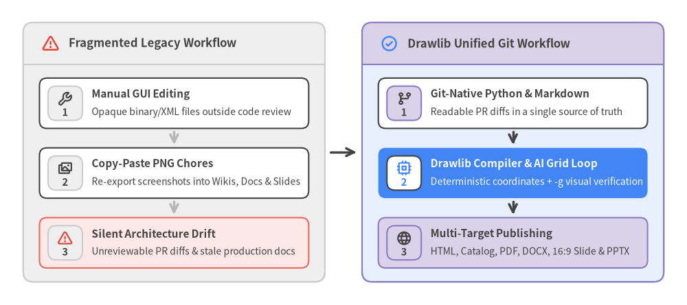
Source Code
from drawlib.canvas import save, setup
from drawlib.icons import phosphor
from drawlib.lines import line
from drawlib.smartarts import CardList, Panel
from drawlib.styles import Styles
setup(width=148, height=66)
left_panel = Panel(
"Fragmented Legacy Workflow",
style=Styles.Neutral.patch(shape_r=2.2),
header_style=Styles.MutedNeutral,
text_style=Styles.DarkBold.patch(text_size=12.0),
icon=phosphor.warning,
icon_style=Styles.DangerBold,
header_height=9.0,
)
left_panel.draw((5.0, 5.0), width=65.0, height=56.0)
legacy_cards = CardList(
style=Styles.White.patch(shape_r=1.6),
text_style=Styles.DarkBold.patch(text_size=11.0),
description_style=Styles.Dark.patch(text_size=10.0),
badge_style=Styles.MutedNeutral,
badge_text_style=Styles.DarkBold.patch(text_size=10.5),
icon_style=Styles.DarkBold,
spacing=2.2,
show_arrows=True,
arrow_style=Styles.MutedBold,
)
legacy_cards.add(
"Manual GUI Editing",
"Opaque binary/XML files outside code review",
badge_text="1",
icon=phosphor.wrench,
)
legacy_cards.add(
"Copy-Paste PNG Chores",
"Re-export screenshots into Wikis, Docs & Slides",
badge_text="2",
icon=phosphor.images,
)
legacy_cards.add(
"Silent Architecture Drift",
"Unreviewable PR diffs & stale production docs",
badge_text="3",
icon=phosphor.warning,
style=Styles.DangerNeutral.patch(shape_r=1.6),
icon_style=Styles.DangerBold,
)
legacy_cards.draw((8.5, 8.0), width=58.0, height=41.0)
line((71.2, 33.0), (76.8, 33.0), arrow_head="->", style=Styles.DarkBold)
right_panel = Panel(
"Drawlib Unified Git Workflow",
style=Styles.PrimaryNeutral.patch(shape_r=2.2),
header_style=Styles.SecondaryNeutral,
text_style=Styles.DarkBold.patch(text_size=12.0),
icon=phosphor.check_circle,
icon_style=Styles.PrimaryBold,
header_height=9.0,
)
right_panel.draw((78.0, 5.0), width=65.0, height=56.0)
drawlib_cards = CardList(
style=Styles.White.patch(shape_r=1.6),
text_style=Styles.DarkBold.patch(text_size=11.0),
description_style=Styles.Dark.patch(text_size=10.0),
badge_style=Styles.SecondaryNeutral,
badge_text_style=Styles.DarkBold.patch(text_size=10.5),
icon_style=Styles.DarkBold,
spacing=2.2,
show_arrows=True,
arrow_style=Styles.DarkBold,
)
drawlib_cards.add(
"Git-Native Python & Markdown",
"Readable PR diffs in a single source of truth",
badge_text="1",
icon=phosphor.git_branch,
)
drawlib_cards.add(
"Drawlib Compiler & AI Grid Loop",
"Deterministic coordinates + -g visual verification",
badge_text="2",
icon=phosphor.cpu,
style=Styles.PrimaryFlat.patch(shape_r=1.6),
text_style=Styles.WhiteBold.patch(text_size=11.0),
description_style=Styles.White.patch(text_size=10.0),
badge_style=Styles.White,
badge_text_style=Styles.PrimaryBold.patch(text_size=10.5),
icon_style=Styles.PrimaryBold,
)
drawlib_cards.add(
"Multi-Target Publishing",
"HTML, Catalog, PDF, DOCX, 16:9 Slide & PPTX",
badge_text="3",
icon=phosphor.globe,
style=Styles.SecondaryNeutral.patch(shape_r=1.6),
)
drawlib_cards.draw((81.5, 8.0), width=58.0, height=41.0)
save()
1.1 Why Existing Visual Tooling Fails Humans and AI Agents
Engineering teams typically piece together four workarounds for diagrams and technical visuals, each breaking down when maintaining production documentation with AI coding agents:
- GUI Diagramming Tools & Binary PNGs (
draw.io,Figma,Visio,Slides): Visual editors store diagrams as binary images (PNG/JPEG) or sprawling XML files. Binary images cannot be diffed in Git pull requests, cannot be inspected or edited by AI coding agents, vary wildly in font/color consistency across authors, and force manual re-exports into wikis, Word specs, and slide decks—guaranteeing silent documentation rot. - Text-to-Diagram DSLs (
Mermaid,PlantUML,Graphviz): Domain-specific text syntaxes integrate cleanly into Markdown, but delegate spatial geometry to rigid black-box layout engines. Inserting a single dependency edge can unexpectedly reshuffle an entire topology, fine-grained brand typography and spacing controls are minimal, and native support for quantitative statistical charts (BoxChart,HeatmapChart) or rich SmartArts is absent. - Raw SVG Generation by AI Agents: Asking an AI agent to emit raw
<svg>markup directly fails in practice—computing multilingual (CJK/Latin) font metrics and text wrapping is error-prone (causing labels to overflow box borders), manual arrow routing produces crossed lines and misaligned arrowheads, and hundreds of low-level<path>and<rect>coordinates are impossible for humans to review or maintain. - Scientific Plotting Libraries (
Matplotlib,Seaborn): Numeric plotting packages excel at statistical arrays, yet lack native high-level primitives for cloud architecture nodes, container groups, connector routing, standardized icon suites, UML/ER models, SmartArts, and multi-target document compilation. Assembling a clean microservice diagram requires hundreds of lines of low-level imperative boilerplate that frequently triggers AI coordinate and syntax errors.
| Capability | GUI Suites (draw.io / Visio) |
Text DSLs (Mermaid / PlantUML) |
Raw SVG / Matplotlib |
Drawlib (v0.3.10) |
|---|---|---|---|---|
| Git PR Diffability | Poor (opaque binary / noisy XML) | High (concise text) | Low (verbose <path> / boilerplate) |
High (declarative Python) |
| Layout Control | Manual pixel dragging only | Black-box auto-layout only | Manual axis / pixel math | Exact Cartesian + 5 Graph Solvers |
| Visual Scope | Diagrams & wireframes | Basic flow / sequence / ER | Low-level shapes or numeric plots | Icons + SmartArts + Charts + Diagrams + Anim |
| Publishing Targets | Manual image export | Embedded web blocks only | Standalone image files | HTML, Catalog, PDF, .docx, Slide & .pptx |
| AI Self-Correction | Unusable by coding agents | Blind to rendered overlaps | High CJK clipping & routing error rate | Deterministic -g Grid Multimodal Loop |
1.2 The Three Pillars of Drawlib
Drawlib v0.3.10 is engineered around three tightly integrated pillars that turn visual communication into a reproducible software engineering discipline.
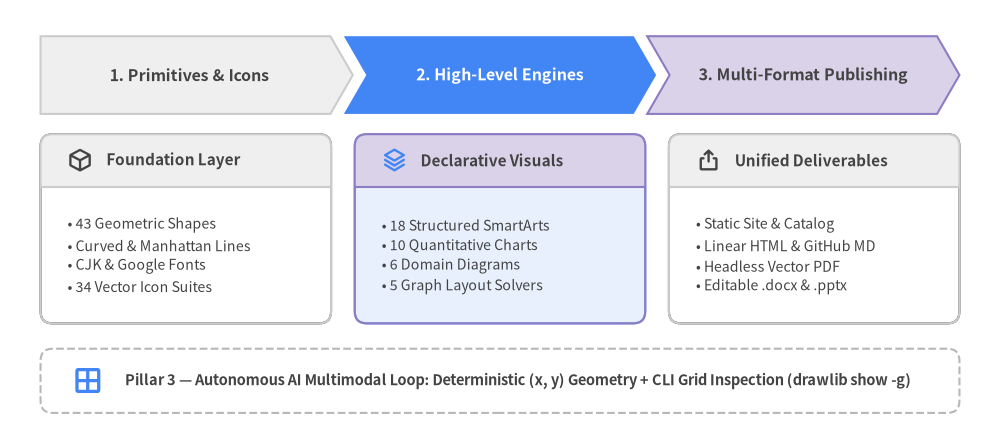
Source Code
from drawlib.canvas import save, setup
from drawlib.icons import phosphor
from drawlib.shapes import rectangle
from drawlib.smartarts import ChevronProcess, Panel
from drawlib.styles import Styles
from drawlib.text import text
setup(width=148, height=66)
stages = ChevronProcess(
style=Styles.Neutral,
text_style=Styles.DarkBold.patch(text_size=11.5),
description_style=Styles.Dark.patch(text_size=10.0),
spacing=2.0,
flat_left_end=True,
)
stages.add("1. Primitives & Icons")
stages.add(
"2. High-Level Engines",
style=Styles.PrimaryFlat,
text_style=Styles.WhiteBold.patch(text_size=11.5),
)
stages.add("3. Multi-Format Publishing", style=Styles.SecondaryNeutral)
stages.draw((6.0, 49.0), width=136.0, height=11.5)
p1 = Panel(
"Foundation Layer",
style=Styles.White.patch(shape_r=1.8),
header_style=Styles.Neutral,
text_style=Styles.DarkBold.patch(text_size=11.0),
icon=phosphor.cube,
icon_style=Styles.DarkBold,
header_height=7.8,
)
p1.draw((6.0, 18.0), width=43.0, height=28.0)
text(
(10.0, 28.0),
"• 43 Geometric Shapes\n• Curved & Manhattan Lines\n• CJK & Google Fonts\n• 34 Vector Icon Suites",
style=Styles.Dark.patch(text_size=10.2, halign="left", text_line_spacing=1.45),
)
p2 = Panel(
"Declarative Visuals",
style=Styles.PrimaryNeutral.patch(shape_r=1.8),
header_style=Styles.SecondaryNeutral,
text_style=Styles.DarkBold.patch(text_size=11.0),
icon=phosphor.stack,
icon_style=Styles.PrimaryBold,
header_height=7.8,
)
p2.draw((52.5, 18.0), width=43.0, height=28.0)
text(
(56.5, 28.0),
"• 18 Structured SmartArts\n• 10 Quantitative Charts\n• 6 Domain Diagrams\n• 5 Graph Layout Solvers",
style=Styles.Dark.patch(text_size=10.2, halign="left", text_line_spacing=1.45),
)
p3 = Panel(
"Unified Deliverables",
style=Styles.White.patch(shape_r=1.8),
header_style=Styles.Neutral,
text_style=Styles.DarkBold.patch(text_size=11.0),
icon=phosphor.export,
icon_style=Styles.DarkBold,
header_height=7.8,
)
p3.draw((99.0, 18.0), width=43.0, height=28.0)
text(
(103.0, 28.0),
"• Static Site & Catalog\n• Linear HTML & GitHub MD\n• Headless Vector PDF\n• Editable .docx & .pptx",
style=Styles.Dark.patch(text_size=10.2, halign="left", text_line_spacing=1.45),
)
rectangle((74.0, 9.5), width=136.0, height=9.5, style=Styles.MutedDashed.patch(shape_r=1.8))
phosphor.grid_four((13.0, 9.5), width=5.0, style=Styles.PrimaryBold)
text(
(18.5, 9.5),
"Pillar 3 — Autonomous AI Multimodal Loop: Deterministic (x, y) Geometry + CLI Grid Inspection (drawlib show -g)",
style=Styles.DarkBold.patch(text_size=10.5, halign="left"),
)
save()
1.2.1 Pillar 1: Illustration as Code
Every visual asset in Drawlib is a pure-Python program backed by strict Pydantic type validation and reusable theme presets (GoogleStyles, DefaultStyles, MonochromeStyles):
- Rich Composable Vocabulary: Combine 43 geometric primitives, curved/orthogonal routed connectors, and 34 standardized vector icon suites (
phosphor,gcp,aws,azure, plus 15 domain and 15 flat original icon packs) with 18 SmartArts, 10 quantitative charts, 6 software/architecture diagram engines, 5 automatic graph layout solvers (drawlib.graph), and multi-frame animations (APNG,WebP,GIF). - Full Python Expressiveness: Drive diagrams directly from real JSON schemas, OpenAPI specs, benchmark CSVs, or shared helper functions in
utils.pyrather than duplicating labels by hand.
1.2.2 Pillar 2: Illustrated Documentation as Code
Drawlib goes beyond standalone image generation by treating Markdown prose and embedded ```drawlib blocks as a single compilation unit:
- Five Project Archetypes from One Toolchain: Scaffold multi-page documentation portals (
site), searchable API/CLI dictionaries (catalog), linear engineering whitepapers (doc), interactive16:9widescreen decks (slide), or standalone asset suites (images). - Multi-Format & Multi-Locale Publishing: Compile localized
en/andja/sources with structural skeleton parity checks into responsive HTML (with SEO metadata andllms.txt), GitHub-Flavored Markdown, headless Chromium vector PDFs, editable Microsoft Word documents (.docx), and native PowerPoint decks (.pptx)—cached incrementally in.drawlib/cache.db.
1.2.3 Pillar 3: Autonomous AI Multimodal Loop
Drawlib is purpose-built from the ground up for collaboration between software engineers and multimodal AI coding agents:
- Deterministic Coordinates +
-gGrid Inspection: Unlike black-box layout DSLs where agents cannot adjust a specific overlapping label, Drawlib's Cartesian coordinate plane anddrawlib show ... -g(10-unit /5-unit grid overlay) give AI agents exact spatial coordinates. - Closed-Loop Visual Self-Correction: An AI agent can inspect your codebase, author declarative Drawlib blocks, export a
-ggrid preview, inspect the rendered PNG multimodally to spot any text collision or margin imbalance, and self-correct coordinates in seconds—assisted by built-in documentation viadrawlib rules show.
2. Installation & Zero-Config Toolchain
Drawlib v0.3.10 is packaged as a self-contained pure-Python toolchain for Python 3.11+ (3.11, 3.12, 3.13, and 3.14) across Linux, macOS, and Windows—requiring zero external Graphviz binaries, LaTeX distributions, or Node.js bundlers.
Whether you are adding visual documentation to an existing Python package with uv add drawlib or authoring architecture specs inside a Go, Rust, TypeScript, or Java repository via zero-install uvx drawlib, the identical CLI and asset cache work out of the box.
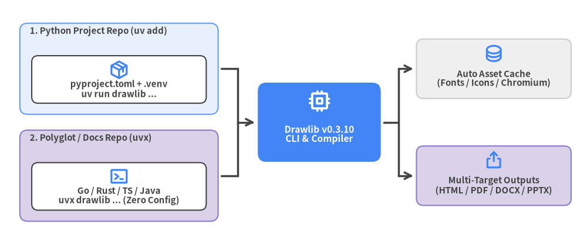
Source Code
from drawlib.canvas import save, setup
from drawlib.diagrams.architecture import ArchitectureDiagram, Node, NodeGroup, PhosphorIcon
from drawlib.styles import Styles
setup(width=148, height=62)
d = ArchitectureDiagram(
node_style=Styles.PrimaryBold,
node_text_style=Styles.DarkBold.patch(text_size=10.8),
edge_style=Styles.DarkBold,
edge_text_style=Styles.DarkBold.patch(text_size=10.0),
node_card_style=Styles.Neutral,
)
g_py = d.add(
NodeGroup(
title="1. Python Project Repo (uv add)",
width=50.0,
height=23.0,
style=Styles.PrimaryNeutral.patch(shape_r=2.0),
text_style=Styles.DarkBold.patch(text_size=10.8, halign="left"),
),
xy=(3.0, 31.0),
)
g_py.add(
Node(
"pyproject.toml + .venv\nuv run drawlib ...",
width=44.0,
height=12.0,
icon=PhosphorIcon.PACKAGE,
icon_size=5.0,
card_style=Styles.White.patch(shape_r=1.6),
),
xy=(25.0, 8.8),
)
g_uvx = d.add(
NodeGroup(
title="2. Polyglot / Docs Repo (uvx)",
width=50.0,
height=23.0,
style=Styles.SecondaryNeutral.patch(shape_r=2.0),
text_style=Styles.DarkBold.patch(text_size=10.8, halign="left"),
),
xy=(3.0, 4.0),
)
g_uvx.add(
Node(
"Go / Rust / TS / Java\nuvx drawlib ... (Zero Config)",
width=44.0,
height=12.0,
icon=PhosphorIcon.TERMINAL_WINDOW,
icon_size=5.0,
card_style=Styles.White.patch(shape_r=1.6),
),
xy=(25.0, 8.8),
)
cli_node = d.add(
Node(
"Drawlib v0.3.10\nCLI & Compiler",
width=31.0,
height=20.0,
icon=PhosphorIcon.CPU,
icon_size=5.8,
style=Styles.WhiteBold,
text_style=Styles.WhiteBold.patch(text_size=11.2),
card_style=Styles.PrimaryFlat.patch(shape_r=2.2),
),
xy=(78.5, 29.0),
)
cache_node = d.add(
Node(
"Auto Asset Cache\n(Fonts / Icons / Chromium)",
width=39.0,
height=15.0,
icon=PhosphorIcon.DATABASE,
icon_size=5.0,
card_style=Styles.Neutral.patch(shape_r=1.8),
),
xy=(122.5, 42.5),
)
out_node = d.add(
Node(
"Multi-Target Outputs\n(HTML / PDF / DOCX / PPTX)",
width=39.0,
height=15.0,
icon=PhosphorIcon.EXPORT,
icon_size=5.0,
card_style=Styles.SecondaryNeutral.patch(shape_r=1.8),
),
xy=(122.5, 15.5),
)
j_in_top = d.junction((58.0, 42.5))
j_in_mid = d.junction((58.0, 29.0))
j_in_bot = d.junction((58.0, 15.5))
d.connect(g_py, j_in_top, arrow="-", routing="direct", padding=(0.8, 0.0))
d.connect(g_uvx, j_in_bot, arrow="-", routing="direct", padding=(0.8, 0.0))
d.connect(j_in_top, j_in_mid, arrow="-", routing="direct")
d.connect(j_in_bot, j_in_mid, arrow="-", routing="direct")
d.connect(j_in_mid, cli_node, arrow="->", routing="direct", padding=(0.0, 0.8))
j_out_mid = d.junction((98.5, 29.0))
j_out_top = d.junction((98.5, 42.5))
j_out_bot = d.junction((98.5, 15.5))
d.connect(cli_node, j_out_mid, arrow="-", routing="direct", padding=(0.8, 0.0))
d.connect(j_out_mid, j_out_top, arrow="-", routing="direct")
d.connect(j_out_mid, j_out_bot, arrow="-", routing="direct")
d.connect(j_out_top, cache_node, arrow="->", routing="direct", padding=(0.0, 0.8))
d.connect(j_out_bot, out_node, arrow="->", routing="direct", padding=(0.0, 0.8))
d.draw(xy=(2.0, 2.0))
save()
2.1 System Requirements & Execution Modes
Drawlib targets modern CPython releases and pairs naturally with Astral's uv package manager for deterministic lockfiles and instant CLI execution:
| Requirement | Supported Specification | Notes |
|---|---|---|
| Python Runtime | Python 3.11+ (3.11, 3.12, 3.13, 3.14) |
Verified across Linux (x86_64 / aarch64), macOS, and Windows |
| Recommended Runner | uv (uv add / uv run / uvx) |
Instant virtual environments and zero-install polyglot execution |
| Standard Fallback | pip (venv + pip install drawlib) |
Standard PyPI wheel installation without optional extra flags |
2.1.1 Workflow 1: Python Project Dependency (uv add drawlib)
For Python services, data science repositories, or dedicated documentation repos where you want drawlib pinned inside pyproject.toml and uv.lock:
# Initialize a new uv project (or run inside an existing Python repository)
uv init my_project
uv add drawlib
uv run drawlib --version
# Standard pip + venv fallback when uv is unavailable
python3 -m venv .venv
.venv/bin/pip install drawlib
.venv/bin/drawlib --version
Pinning drawlib in pyproject.toml gives IDEs (Pyright, Pylance, Ruff) full autocomplete and static type checking across drawlib.shapes, drawlib.smartarts, drawlib.charts, and drawlib.diagrams, while guaranteeing reproducible CI builds via uv sync --frozen.
2.1.2 Workflow 2: Zero-Install Polyglot Runner (uvx drawlib)
For Go, Rust, TypeScript, Java, C++, or pure Markdown repositories, you do not need to pollute the repository root with a pyproject.toml or .venv/ folder. Prefix any CLI command with uvx to run Drawlib inside an isolated, automatically cached tool environment:
# Verify Drawlib immediately with zero local Python configuration
uvx drawlib --version
# Scaffold and build multi-locale documentation inside any Go / Rust / TS repo
uvx drawlib init project site docs -l en,ja -s google
uvx drawlib build html docs_src/ -o docs_html/
2.2 Built-In Batteries & Asset Caching
Unlike fragmented documentation stacks that require separate plugins for diagrams, Word exports, slide decks, and PDF printing, drawlib v0.3.10 ships with every rendering and publishing dependency built in—no drawlib[pdf] or drawlib[office] extras required.
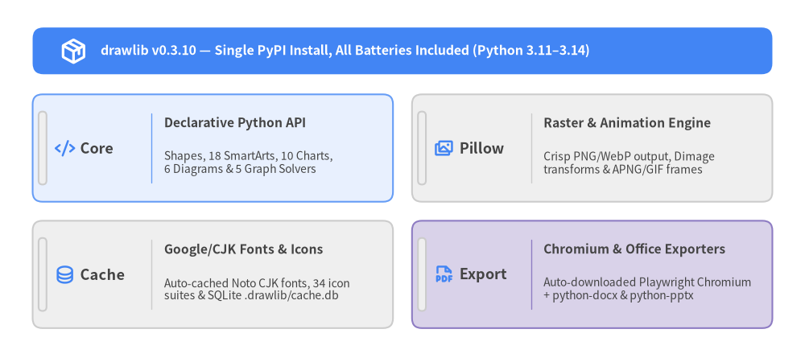
Source Code
from drawlib.canvas import save, setup
from drawlib.icons import phosphor
from drawlib.shapes import rectangle
from drawlib.smartarts import KpiCards
from drawlib.styles import Styles
from drawlib.text import text
setup(width=148, height=66)
rectangle((74.0, 56.5), width=136.0, height=8.6, style=Styles.PrimaryFlat.patch(shape_r=2.0))
phosphor.package((13.5, 56.5), width=5.0, style=Styles.WhiteBold)
text(
(18.5, 56.5),
"drawlib v0.3.10 — Single PyPI Install, All Batteries Included (Python 3.11–3.14)",
style=Styles.WhiteBold.patch(text_size=11.5, halign="left"),
)
stack = KpiCards(
style=Styles.White.patch(shape_r=1.8),
metric_style=Styles.DarkBold.patch(text_size=13.0),
text_style=Styles.DarkBold.patch(text_size=11.2),
description_style=Styles.Dark.patch(text_size=10.0),
accent_style=Styles.Neutral,
icon_style=Styles.PrimaryBold,
accent_position="left_pill",
metric_layout="left_column",
metric_width_ratio=0.23,
spacing=3.5,
)
stack.add(
"Core",
"Declarative Python API",
"Shapes, 18 SmartArts, 10 Charts,\n6 Diagrams & 5 Graph Solvers",
icon=phosphor.code,
style=Styles.PrimaryNeutral.patch(shape_r=1.8),
)
stack.add(
"Pillow",
"Raster & Animation Engine",
"Crisp PNG/WebP output, Dimage\ntransforms & APNG/GIF frames",
icon=phosphor.images,
style=Styles.Neutral.patch(shape_r=1.8),
)
stack.add(
"Cache",
"Google/CJK Fonts & Icons",
"Auto-cached Noto CJK fonts, 34 icon\nsuites & SQLite .drawlib/cache.db",
icon=phosphor.database,
style=Styles.Neutral.patch(shape_r=1.8),
)
stack.add(
"Export",
"Chromium & Office Exporters",
"Auto-downloaded Playwright Chromium\n+ python-docx & python-pptx",
icon=phosphor.file_pdf,
style=Styles.SecondaryNeutral.patch(shape_r=1.8),
)
stack.draw((6.0, 5.5), width=136.0, height=43.0, columns=2)
save()
Every pip install drawlib or uv add drawlib installation provisions four integrated subsystems:
- Pillow Raster & Animation Engine (
pillow): Powers high-DPIPNGandWebPrasterization,Dimagecropping/compositing transforms, and multi-frame animation encoding (APNG, animatedWebP, andGIF) alongside Drawlib's vector geometry renderer. - Playwright Headless Chromium (
playwright): Bundled as a standard dependency for pixel-accurate vectorPDF(drawlib build pdf) and16:9slide rendering (drawlib build pptx). On your first PDF or PPTX build, Drawlib automatically downloadschromium-headless-shellwith zero manual setup. - Native Microsoft Office Builders (
python-docx&python-pptx): Compiles lineardocprojects into editable.docxspecifications and16:9slidedecks into editable.pptxpresentations out of the box. - On-Demand Font, Icon & SQLite Build Caches: Standardized Google Fonts, Noto Sans CJK multilingual fonts (eliminating tofu boxes across Linux/macOS/Windows), and all 34 icon suites download automatically on first use, while
.drawlib/cache.dbhashes rendered blocks so unchanged diagrams skip re-execution.
For offline environments, air-gapped runners, or minimal Docker CI images (such as python:3.12-slim), pre-warm the asset cache ahead of time:
# Inspect local font, icon, map, and browser cache status
uv run drawlib cache list
# Pre-download all fonts (including CJK), 34 icon suites, maps & headless Chromium
uv run drawlib cache download --all
# Pre-download only headless Chromium for PDF / PPTX builds
uv run drawlib cache download --browser
# On minimal Linux CI containers missing OS shared libs (libnss3, libgbm1, etc.)
uv run playwright install-deps chromium
2.3 Quick-Test Project Scaffolding
Never hand-craft bare .py files or ad-hoc folders from scratch—always start with drawlib init project so drawlib.toml, styles.py, utils.py, _assets/, and modular build*.sh scripts are configured cleanly:
# 1. Confirm CLI version
uv run drawlib --version
# 2. Scaffold a bilingual (en + ja) linear document project with the Google theme
uv run drawlib init project doc my_docs -l en,ja -s google
# 3. Compile HTML, vector PDFs, GitHub Markdown, and extracted images
./my_docs_src/build.sh
Running drawlib init project doc my_docs -l en,ja -s google creates my_docs_src/ containing drawlib.toml ([project] + [i18n]), styles.py (GoogleStyles), ja/styles.py (FontJapanese override), utils.py, _assets/, starter chapters under en/ and ja/, and ready-to-run build scripts (build.sh, build_html.sh, build_pdf.sh, build_docx.sh, and serve.sh).
3. Cartesian Canvas & Coordinate Anchors
Every Drawlib illustration is composed on a deterministic 2D Cartesian coordinate plane where the origin (0, 0) sits strictly at the bottom-left corner, X increases horizontally to the right (0 -> width), and Y increases vertically upward (0 -> height).
Mastering three foundational rules—bottom-left Cartesian axes, the 720pt typography formula, and component coordinate anchors—lets engineers and AI coding agents place shapes, icons, charts, and SmartArts with single-shot precision and zero visual collisions.
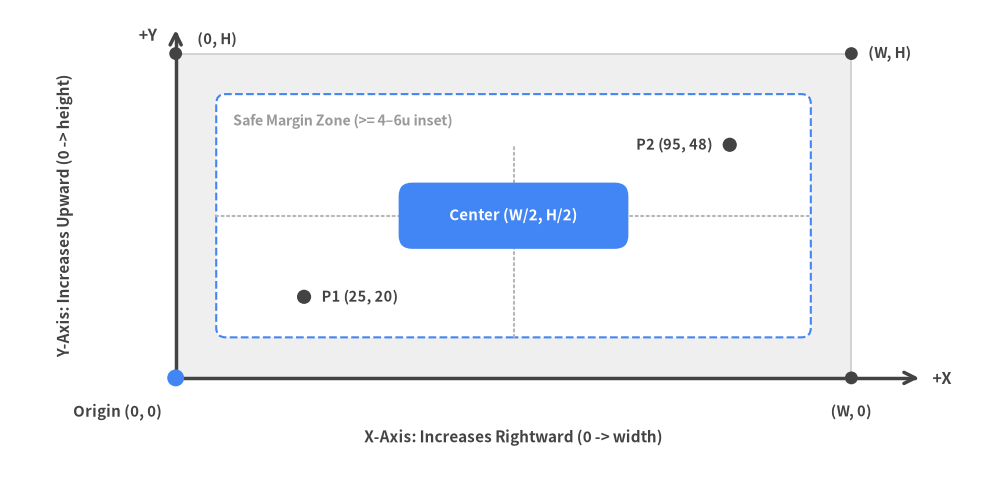
Source Code
from drawlib.canvas import save, setup
from drawlib.lines import line
from drawlib.shapes import circle, rectangle
from drawlib.styles import Colors, Styles
from drawlib.text import text
setup(width=148, height=72)
# Illustrated virtual canvas frame [26..126] x [16..64] and 6-unit inset safe margin zone
rectangle((76.0, 40.0), width=100.0, height=48.0, style=Styles.Neutral.patch(shape_line_width=1.2))
rectangle(
(76.0, 40.0),
width=88.0,
height=36.0,
style=Styles.PrimaryDashed.patch(shape_fill_color=Colors.White, shape_r=1.4),
)
text(
(34.5, 55.2),
"Safe Margin Zone (>= 4–6u inset)",
style=Styles.MutedBold.patch(text_size=10.2, halign="left", valign="top"),
)
# Subtle center crosshair guides (drawn behind center badge)
line((32.0, 40.0), (120.0, 40.0), style=Styles.MutedDotted)
line((76.0, 22.0), (76.0, 50.5), style=Styles.MutedDotted)
# Cartesian X-axis (rightward) and Y-axis (upward)
line((26.0, 16.0), (136.0, 16.0), arrow_head="->", style=Styles.DarkBold)
text((138.0, 16.0), "+X", style=Styles.DarkBold.patch(text_size=11.5, halign="left", valign="center"))
text((76.0, 7.2), "X-Axis: Increases Rightward (0 -> width)", style=Styles.DarkBold.patch(text_size=11.0))
line((26.0, 16.0), (26.0, 67.5), arrow_head="->", style=Styles.DarkBold)
text((23.2, 66.8), "+Y", style=Styles.DarkBold.patch(text_size=11.5, halign="right", valign="center"))
text(
(9.5, 40.0),
"Y-Axis: Increases Upward (0 -> height)",
style=Styles.DarkBold.patch(text_size=11.0, angle=90),
)
# Corner markers with offset labels (zero overlap with axes or borders)
circle((26.0, 16.0), radius=1.25, style=Styles.PrimaryFlat)
text((24.0, 12.2), "Origin (0, 0)", style=Styles.DarkBold.patch(text_size=10.8, halign="right", valign="top"))
circle((126.0, 16.0), radius=0.95, style=Styles.DarkFlat)
text((126.0, 12.2), "(W, 0)", style=Styles.DarkBold.patch(text_size=10.5, halign="center", valign="top"))
circle((26.0, 64.0), radius=0.95, style=Styles.DarkFlat)
text((29.2, 64.8), "(0, H)", style=Styles.DarkBold.patch(text_size=10.5, halign="left", valign="bottom"))
circle((126.0, 64.0), radius=0.95, style=Styles.DarkFlat)
text((128.5, 64.0), "(W, H)", style=Styles.DarkBold.patch(text_size=10.5, halign="left", valign="center"))
# Focal center anchor badge and two sample plotted points
rectangle(
(76.0, 40.0),
width=34.0,
height=9.8,
style=Styles.PrimaryFlat.patch(shape_r=2.0),
text="Center (W/2, H/2)",
text_style=Styles.WhiteBold.patch(text_size=10.8),
)
circle((45.0, 28.0), radius=1.05, style=Styles.DarkFlat)
text((47.6, 28.0), "P1 (25, 20)", style=Styles.DarkBold.patch(text_size=10.4, halign="left", valign="center"))
circle((108.0, 50.5), radius=1.05, style=Styles.DarkFlat)
text((105.4, 50.5), "P2 (95, 48)", style=Styles.DarkBold.patch(text_size=10.4, halign="right", valign="center"))
save()
3.1 Cartesian Coordinates vs. Browser DOM / SVG
Frontend engineers accustomed to HTML5 <canvas>, CSS absolute positioning, or raw <svg> must note one crucial geometric distinction so Y coordinates are never inverted:
| Coordinate Property | Drawlib Cartesian Canvas | Browser DOM / HTML <svg> |
|---|---|---|
Origin (0, 0) |
Bottom-Left corner | Top-Left corner |
Horizontal +X Direction |
Left to Right (0 -> width) |
Left to Right (0 -> width) |
Vertical +Y Direction |
Bottom to Top (0 -> height) |
Top to Bottom (0 -> height) |
| Top Title Placement | High Y near height - 6 |
Small Y near 16px |
| Safe Outer Margin | Keep content inside [5, W - 5] × [5, H - 5] |
CSS padding / viewBox |
Because +Y points upward just like mathematical plots and architectural elevation drawings, higher Y always means visually higher on the page—page titles sit near height - 6, central architecture tiers sit around height / 2, and footnotes or legends sit near y = 6..10. Always maintain 4–6 virtual units of clear outer margin around all four canvas edges so borders, rounded corners, and drop shadows never clip.
3.2 Canvas Lifecycle: setup(), Drawing Calls, and save()
Every Drawlib script and embedded Markdown block follows a clean three-step execution lifecycle:
setup(width=..., height=..., dpi=..., background_color=..., grid=...): Initializes canvas geometry in abstract virtual units (widthandheight, defaulting to100 × 100) and configures raster output density viadpi(default100). Because coordinates use resolution-independent virtual units, increasingdpi=100todpi=200doubles output pixel dimensions (1400 × 520 px->2800 × 1040 px) without changing a single(x, y)number. Project-wide theme palettes and fonts (from drawlib.styles import Colors, Styles) load automatically fromstyles.py(style = "google"indrawlib.toml).- Declarative Drawing Calls: Invoke Z-ordered primitives, icons, SmartArts, charts, or domain diagrams from back (containers and connector lines) to front (service cards and callouts).
save(): Commits and renders the canvas. Always end every standalone.pyscript and every embedded```drawlibMarkdown block withsave()—in standalone scriptssave()flushes the image file to disk (<script_name>.pngor an explicit path), and in Markdown blocks ending withsave()ensures every snippet is 100% self-contained and directly runnable outside the document builder. (If a single.pyscript generates multiple sequential files, callclear()after eachsave(...)before the nextsetup(...).)
from drawlib.canvas import save, setup
from drawlib.lines import line
from drawlib.shapes import rectangle
from drawlib.styles import Styles
# 1. Abstract 136x50 virtual units at crisp 150 DPI (2040x750 output pixels)
setup(width=136, height=50, dpi=150)
# 2. Back-to-front drawing calls (neutral baseline + 1 focal PrimaryFlat node)
line((44, 25), (54, 25), arrow_head="->", style=Styles.DarkBold)
line((82, 25), (92, 25), arrow_head="->", style=Styles.DarkBold)
rectangle((26, 25), width=36, height=18, style=Styles.Neutral, text="Client App")
rectangle(
(68, 25),
width=28,
height=18,
style=Styles.PrimaryFlat,
text="API Core",
text_style=Styles.WhiteBold,
)
rectangle((110, 25), width=36, height=18, style=Styles.SecondaryNeutral, text="PostgreSQL")
# 3. Mandatory lifecycle commit
save()
3.3 The 720pt Typography Formula & Canvas Sizing
Internally, Drawlib normalizes figure typography against a fixed 720pt reference width. Regardless of dpi, the visual font size of any label when an image is displayed at Display Width pixels in HTML, PDF, or slides is governed by one exact formula:
Rendered Font Size (px) = text_size × (Display Width (px) / 720)
Understanding this linear scaling relationship prevents microscopic, unreadable diagram labels:
- Keep
text_size >= 10.0Everywhere: In HTML and A4 PDF documentation (doc,site,catalog), content columns typically span~820px–900px(Display Width / 720 ≈ 1.15–1.25). Settingtext_size = 10.5–12.0for body/node labels and12.0–14.0for headers produces crisp~12px–17pxlettering that matches surrounding16pxHTML prose. Never drop belowtext_size = 10.0(with9.5strictly reserved as an absolute floor for minor chart ticks). - Ideal Embedded Figure Width (
width=120..150): Callingsetup(width=140, height=60)(orwidth=120..150) gives clean10-unit grid arithmetic for multi-column diagrams while keeping aspect ratios compact above the fold. - Never Cap Markdown Fences with Narrow Pixel Widths: Never add
width=500pxorwidth=600pxto```drawlibfences—shrinkingDisplay Widthto500pxreducesDisplay Width / 720to0.69, shrinking every label inside the figure by over30%.
| Target Context | Typical setup(width, height) |
Display Width | Recommended text_size |
Resulting Visual Size |
|---|---|---|---|---|
| Doc / Site Hero & Flow | 140 × 60 (120..150 wide) |
~840px |
10.5–12.0 (headers 12.0–14.0) |
~12.5px–16.5px (matches 16px prose) |
| Dense Multi-Tier Schema | 148 × 72 |
~840px |
10.0–11.5 (headers 12.0–13.5) |
~11.7px–15.8px |
| 16:9 Full-Width Slide | 160 × 80 |
~1760px |
11.0–13.0 (headers 14.0–16.0) |
~27px–39px (matches 26px slide text) |
3.4 Text Alignment & Component Coordinate Anchors
When placing standalone labels with text(xy, label, style=...), the anchor point xy is controlled via .patch(halign=..., valign=...) on preset Styles.* tokens (never construct raw Style(...) instances directly):
halign="left" | "center" | "right": Controls whether text extends rightward fromx("left"), centers aroundx("center", default), or ends flush againstx("right").valign="bottom" | "center" | "top": Controls whether text sits abovey("bottom"), centers vertically ony("center", default), or hangs downward fromy("top").
Beyond text(), Drawlib components follow three predictable coordinate anchor conventions summarized below:
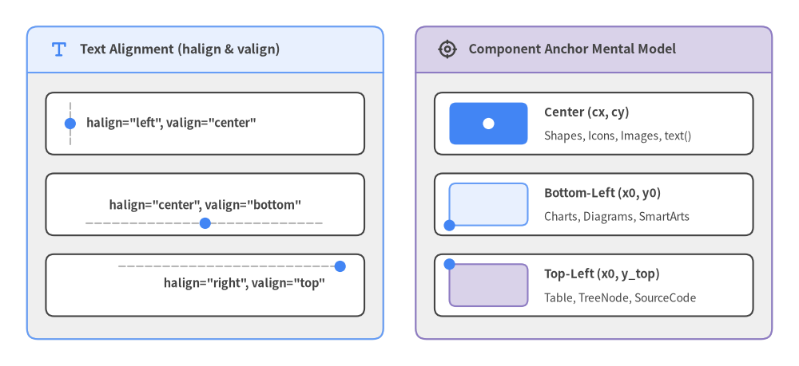
Source Code
from drawlib.canvas import save, setup
from drawlib.icons import phosphor
from drawlib.lines import line
from drawlib.shapes import circle, rectangle
from drawlib.smartarts import Panel
from drawlib.styles import Styles
from drawlib.text import text
setup(width=148, height=68)
# Left Panel: halign & valign anchor demonstration (zero dot-to-text overlap)
p_left = Panel(
"Text Alignment (halign & valign)",
style=Styles.Neutral.patch(shape_r=2.0),
header_style=Styles.PrimaryNeutral,
text_style=Styles.DarkBold.patch(text_size=11.5),
icon=phosphor.text_t,
icon_style=Styles.PrimaryBold,
header_height=8.5,
)
p_left.draw((5.0, 5.0), width=66.0, height=58.0)
# Row 1: halign="left", valign="center"
rectangle((38.0, 45.0), width=59.0, height=11.5, style=Styles.White.patch(shape_r=1.5))
line((13.0, 41.2), (13.0, 48.8), style=Styles.MutedDashed)
circle((13.0, 45.0), radius=1.05, style=Styles.PrimaryFlat)
text(
(16.0, 45.0),
'halign="left", valign="center"',
style=Styles.DarkBold.patch(text_size=10.5, halign="left", valign="center"),
)
# Row 2: halign="center", valign="bottom"
rectangle((38.0, 30.0), width=59.0, height=11.5, style=Styles.White.patch(shape_r=1.5))
line((16.0, 26.5), (60.0, 26.5), style=Styles.MutedDashed)
circle((38.0, 26.5), radius=1.05, style=Styles.PrimaryFlat)
text(
(38.0, 28.5),
'halign="center", valign="bottom"',
style=Styles.DarkBold.patch(text_size=10.5, halign="center", valign="bottom"),
)
# Row 3: halign="right", valign="top"
rectangle((38.0, 15.0), width=59.0, height=11.5, style=Styles.White.patch(shape_r=1.5))
line((22.0, 18.5), (63.0, 18.5), style=Styles.MutedDashed)
circle((63.0, 18.5), radius=1.05, style=Styles.PrimaryFlat)
text(
(60.2, 16.5),
'halign="right", valign="top"',
style=Styles.DarkBold.patch(text_size=10.5, halign="right", valign="top"),
)
# Right Panel: Component Anchor Mental Model
p_right = Panel(
"Component Anchor Mental Model",
style=Styles.Neutral.patch(shape_r=2.0),
header_style=Styles.SecondaryNeutral,
text_style=Styles.DarkBold.patch(text_size=11.5),
icon=phosphor.crosshair,
icon_style=Styles.DarkBold,
header_height=8.5,
)
p_right.draw((77.0, 5.0), width=66.0, height=58.0)
# Archetype 1: Center (cx, cy) — 1 Focal PrimaryFlat shape
rectangle((110.0, 45.0), width=59.0, height=11.5, style=Styles.White.patch(shape_r=1.5))
rectangle((90.5, 45.0), width=14.5, height=7.8, style=Styles.PrimaryFlat.patch(shape_r=1.2))
circle((90.5, 45.0), radius=1.05, style=Styles.WhiteFlat)
text((100.8, 47.0), "Center (cx, cy)", style=Styles.DarkBold.patch(text_size=10.8, halign="left"))
text((100.8, 42.6), "Shapes, Icons, Images, text()", style=Styles.Dark.patch(text_size=10.0, halign="left"))
# Archetype 2: Bottom-Left (x0, y0)
rectangle((110.0, 30.0), width=59.0, height=11.5, style=Styles.White.patch(shape_r=1.5))
rectangle((90.5, 30.0), width=14.5, height=7.8, style=Styles.PrimaryNeutral.patch(shape_r=1.2))
circle((83.25, 26.1), radius=1.05, style=Styles.PrimaryFlat)
text((100.8, 32.0), "Bottom-Left (x0, y0)", style=Styles.DarkBold.patch(text_size=10.8, halign="left"))
text((100.8, 27.6), "Charts, Diagrams, SmartArts", style=Styles.Dark.patch(text_size=10.0, halign="left"))
# Archetype 3: Top-Left (x0, y_top)
rectangle((110.0, 15.0), width=59.0, height=11.5, style=Styles.White.patch(shape_r=1.5))
rectangle((90.5, 15.0), width=14.5, height=7.8, style=Styles.SecondaryNeutral.patch(shape_r=1.2))
circle((83.25, 18.9), radius=1.05, style=Styles.PrimaryFlat)
text((100.8, 17.0), "Top-Left (x0, y_top)", style=Styles.DarkBold.patch(text_size=10.8, halign="left"))
text((100.8, 12.6), "Table, TreeNode, SourceCode", style=Styles.Dark.patch(text_size=10.0, halign="left"))
save()
Keep this anchor mental model handy whenever combining primitives with composite SmartArts or Charts:
- Center
(cx, cy): Used by all geometric primitives (shapes.*),text(), icons (phosphor.*,gcp.*,aws.*,azure.*),images.image(),MindMapNode,Cycle, and individualNodeitems added insideArchitectureDiagram. The element spans[cx - w/2, cx + w/2]horizontally and[cy - h/2, cy + h/2]vertically. - Bottom-Left
(x0, y0): Used by allcharts.*,diagrams.*(d.draw(xy=(x0, y0))andNodeGroup(..., xy=(x0, y0))), and mostsmartarts.*(Panel,CardList,ChevronProcess,GridLayout,KpiCards,BoxList,Pyramid,Roadmap,GeoMap,*Calendar). To center a component of widthwon a canvas of widthW, passx0 = (W - w) / 2(neverW / 2). - Top-Left
(x0, y_top): Used by top-down document SmartArts—Table,TreeNode,BulletPoints, andSourceCode—so multi-row tables, directory trees, and code listings naturally expand downward from a fixed header liney_top.
4. Drawing Primitives: Shapes, Lines & Math
While high-level engines (ArchitectureDiagram, SmartArts, and Charts) automate full multi-node layouts, drawlib.shapes, drawlib.lines, and drawlib.math give you surgical vector control over custom badges, callouts, container geometry, and interpolated connector routes.
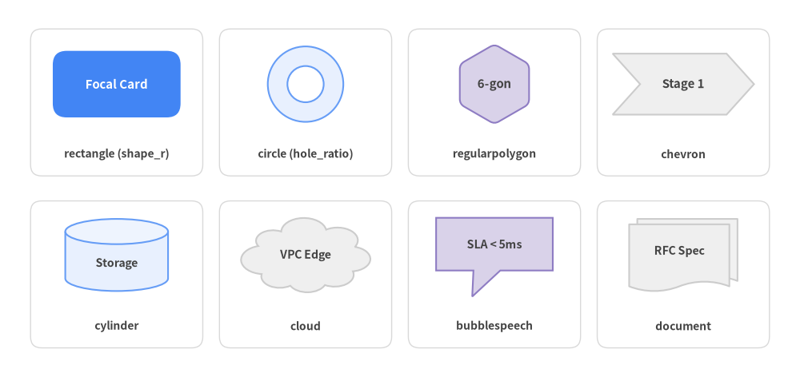
Source Code
from drawlib.canvas import save, setup
from drawlib.shapes import (
bubblespeech,
chevron,
circle,
cloud,
cylinder,
document,
rectangle,
regularpolygon,
)
from drawlib.styles import Colors, Styles
from drawlib.text import text
setup(width=144, height=68)
xs = [21.0, 55.0, 89.0, 123.0]
ys = [49.5, 18.5]
slot_style = Styles.White.patch(
shape_r=2.0,
shape_line_color=Colors.Gray3,
shape_line_width=1.0,
)
for ry in ys:
for cx in xs:
rectangle((cx, ry), width=31.0, height=26.5, style=slot_style)
label_style = Styles.DarkBold.patch(text_size=10.0)
body_dark = Styles.DarkBold.patch(text_size=10.8)
# Row 1: Basic, Ring Cutout, Polygon, Block Arrow
rectangle(
(xs[0], 52.8),
width=23.0,
height=12.0,
style=Styles.PrimaryFlat.patch(shape_r=2.5),
text="Focal Card",
text_style=Styles.WhiteBold.patch(text_size=10.8),
)
text((xs[0], 40.2), "rectangle (shape_r)", style=label_style)
circle(
(xs[1], 52.8),
radius=6.8,
hole_ratio=0.48,
style=Styles.PrimaryNeutral,
)
text((xs[1], 40.2), "circle (hole_ratio)", style=label_style)
regularpolygon(
(xs[2], 52.8),
6,
7.2,
style=Styles.SecondaryNeutral.patch(shape_r=0.9),
text="6-gon",
text_style=body_dark,
)
text((xs[2], 40.2), "regularpolygon", style=label_style)
chevron(
(xs[3], 52.8),
width=20.5,
height=11.0,
corner_angle=48,
style=Styles.Neutral,
text="Stage 1",
text_style=body_dark,
)
text((xs[3], 40.2), "chevron", style=label_style)
# Row 2: 3D Container, Cloud, Speech Callout, Stacked Document
cylinder(
(xs[0], 22.0),
width=18.5,
height=13.0,
disks=1,
style=Styles.PrimaryNeutral,
text="Storage",
text_style=Styles.DarkBold.patch(text_size=10.2, xy_abs_shift=(0, -1.5)),
)
text((xs[0], 9.2), "cylinder", style=label_style)
cloud(
(xs[1], 22.0),
width=23.5,
height=13.5,
style=Styles.Neutral,
text="VPC Edge",
text_style=Styles.DarkBold.patch(text_size=10.2),
)
text((xs[1], 9.2), "cloud", style=label_style)
bubblespeech(
(xs[2] - 10.5, 19.2),
width=21.0,
height=9.5,
tail_edge="bottom",
tail_start_ratio=0.32,
tail_vertex_xy=(85.0, 14.5),
tail_end_ratio=0.55,
style=Styles.SecondaryNeutral,
text="SLA < 5ms",
text_style=Styles.DarkBold.patch(text_size=10.2),
)
text((xs[2], 9.2), "bubblespeech", style=label_style)
document(
(xs[3], 22.0),
width=19.5,
height=13.0,
stacked=2,
style=Styles.Neutral,
text="RFC Spec",
text_style=Styles.DarkBold.patch(text_size=10.2, xy_abs_shift=(0, 0.8)),
)
text((xs[3], 9.2), "document", style=label_style)
save()
4.1 The 43 Shapes of drawlib.shapes
drawlib.shapes organizes 43 pure-Python vector primitives into 6 domain families. Every shape function enforces a keyword-only *, style: Style contract so geometry and visual tokens never mix.
| Family | Count | Functions in drawlib.shapes |
Typical Engineering Use Cases |
|---|---|---|---|
| Basic Shapes | 6 | rectangle, circle, ellipse, arc, fan, wedge |
Service cards (rectangle + shape_r), nodes, donut/ring gauges (circle with hole_ratio or wedge with width), radial sectors |
| Polygons & Custom Paths | 9 | triangle, rhombus, parallelogram, trapezoid, regularpolygon, star, plaque, polygon, shape |
Flowchart decisions (rhombus) & I/O (parallelogram), pentagons/hexagons/octagons (regularpolygon(xy, n, r)), arbitrary cutouts (polygon + holes) |
| Arrows & Chevrons | 6 | arrow, arrow_polyline, arrow_arc, arrow_l, arrow_u, chevron |
Prominent phase banners (chevron), 1-way or 2-way block arrows (arrow(..., head="<->")), orthogonal L/U turn blocks |
| Containers & Cylinders | 6 | cylinder, cube, document, funnel, cloud, brace |
Persistent databases (cylinder with disks=2), 3D nodes (cube), wave/folded specs (document), cloud boundaries, curly brace groupings |
| Badges & Callouts | 8 | bubblespeech, ribbon, shield, tag, pin, checkmark, forbidden, explosion |
Inline speech callouts (bubblespeech), security/IAM badges (shield), release tags (tag, ribbon), geo markers (pin), pass/block indicators |
| Symbols & Flowchart Operators | 8 | clock, face, gear, heart, lightning, math_symbol, moon, sun |
Cron/latency timers (clock), worker daemons (gear), cross/plus/arithmetic operators (math_symbol), event triggers (lightning) |
When building standard software flowcharts, standard ISO symbols map directly to these primitives (rhombus for branching decisions, parallelogram for data I/O, document for artifacts, cylinder for storage, and rectangle with shape_r for process steps)—or can be automated end-to-end with drawlib.diagrams.flow.FlowDiagram.
4.2 Center Anchors (cx, cy), Inline Text, Corner Radius & Rotation
Unlike top-left DOM boxes or bottom-left chart frames, planar shapes in drawlib.shapes anchor at their exact geometric center xy = (cx, cy) (with explicit-vertex exceptions arrow(xy1, xy2, ...), arrow_polyline(xys, ...), polygon(xys, ...), and bubblespeech(xy, ...) whose body box starts at bottom-left (x0, y0)). This center-first convention makes aligning circles, hexagons, cylinders, and cards along a shared row y = 20 effortless without subtracting half-widths.
Three ergonomic features keep primitive code compact and declarative:
- Built-in Inline Labels (
text&text_style): 39 of the 43 shapes render centered text directly viatext="..."andtext_style=...(eliminating extratext()calls). Usetext_style=Styles.DarkBold.patch(xy_abs_shift=(0, -12))to place captions cleanly underneath compact badges likepinorgear. - Smooth Corner Rounding (
shape_r): Patchshape_r=2.5ontostyleto round polygon corners with quadratic Bézier fillets onrectangle,triangle,rhombus,parallelogram,trapezoid,regularpolygon,star, andpolygon. - Counter-Clockwise Rotation (
angle) & Hollow Cutouts (hole_ratio): Patchangle=30ontostyleto rotate a shape CCW around(cx, cy)(passangle=0ontext_styleto keep its label horizontal), or passhole_ratio=0.5to cut a true transparent compound ring.
from drawlib.canvas import save, setup
from drawlib.shapes import circle, rectangle, regularpolygon
from drawlib.styles import Styles
setup(width=120, height=40)
# Center-anchored at y=20 with inline text, corner radius, and rotation
rectangle(
(25, 20),
width=30,
height=16,
style=Styles.PrimaryFlat.patch(shape_r=2.5),
text="Ingress",
text_style=Styles.WhiteBold.patch(text_size=11.0),
)
regularpolygon(
(65, 20),
6,
10.0,
style=Styles.PrimaryNeutral.patch(angle=15, shape_r=1.0),
text="Router",
text_style=Styles.DarkBold.patch(text_size=10.5, angle=0),
)
circle(
(100, 20),
radius=9.5,
hole_ratio=0.5,
style=Styles.Neutral,
text="50%",
text_style=Styles.DarkBold.patch(text_size=10.5),
)
save()
4.3 Vector Connectors (drawlib.lines) & Geometry Helpers (drawlib.math)
To wire shapes together cleanly, drawlib.lines provides 1D stroke connectors while drawlib.math supplies pure-Python vector and interpolation math so you never have to hardcode fragile trigonometry.
- Straight & Polylines (
line,lines,lines_curved):line(xy1, xy2, *, style, arrow_head="->")draws a direct segment,lines(xys, ...)draws sharp orthogonal Manhattan routes, andlines_curved(xys, r=3.5, ...)rounds every interior polyline corner with fillet radiusr(keep $r < \frac{1}{2}\min |P_{i+1} - P_i|$). Every line function acceptsarrow_headvalues"","-","->","<-", and"<->". - Arcs & Bézier Curves (
line_curved,line_bezier1,line_bezier2,lines_bezier,line_arc):line_curved(xy1, xy2, bend=0.22, ...)bulges smoothly left (bend > 0) or right (bend < 0) of the travel vector—ideal for request/response pairs—whilelines_bezier(xy, path_points, ...)chains straight(x, y), quadratic(cp, end), and cubic(cp1, cp2, end)segments in a single path. - Coordinate & Trajectory Math (
drawlib.math):get_intermediate_point(xy1, xy2)&get_intermediate_points(xy1, xy2, num=3): Sample evenly spaced waypoints along a segment (plusget_intermediate_path_points(xys, num=...)along multi-corner polylines).rotate_point(xy, angle, center)&get_point_on_ellipse(center, width, height, angle): Compute exact radial node positions and boundary anchor points without manualsin/cosboilerplate.get_angle(xy1, xy2),get_distance(xy1, xy2),get_center_and_size(xys), &compute_orthogonal_path(...): Measure slopes, auto-fit cluster bounding boxes, and synthesize L/Z-shaped orthogonal routes.
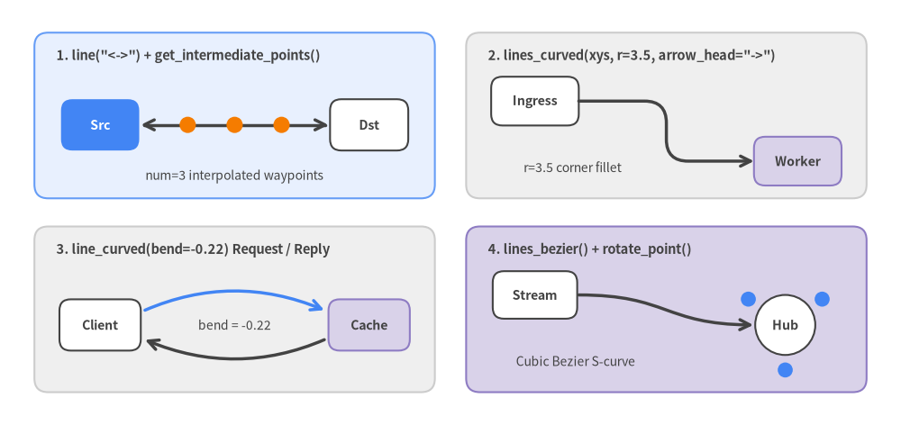
Source Code
from drawlib.canvas import save, setup
from drawlib.lines import line, line_curved, lines_bezier, lines_curved
from drawlib.math import get_intermediate_points, rotate_point
from drawlib.shapes import circle, rectangle
from drawlib.styles import Styles
from drawlib.text import text
setup(width=144, height=68)
hdr = Styles.DarkBold.patch(text_size=10.5, halign="left")
note = Styles.Dark.patch(text_size=10.0)
node_light = Styles.White.patch(shape_r=1.8)
node_sec = Styles.SecondaryNeutral.patch(shape_r=1.8)
lbl_dark = Styles.DarkBold.patch(text_size=10.2)
# 4 spacious neutral quadrant panels
rectangle((37.5, 49.5), width=64.0, height=26.5, style=Styles.PrimaryNeutral.patch(shape_r=2.2))
rectangle((106.5, 49.5), width=64.0, height=26.5, style=Styles.Neutral.patch(shape_r=2.2))
rectangle((37.5, 18.5), width=64.0, height=26.5, style=Styles.Neutral.patch(shape_r=2.2))
rectangle((106.5, 18.5), width=64.0, height=26.5, style=Styles.SecondaryNeutral.patch(shape_r=2.2))
# Panel 1: Straight "<->" + get_intermediate_points()
text((9.0, 59.0), '1. line("<->") + get_intermediate_points()', style=hdr)
rectangle(
(16.0, 48.0),
width=12.5,
height=8.2,
style=Styles.PrimaryFlat.patch(shape_r=1.8),
text="Src",
text_style=Styles.WhiteBold.patch(text_size=10.2),
)
rectangle((59.0, 48.0), width=12.5, height=8.2, style=node_light, text="Dst", text_style=lbl_dark)
line((22.5, 48.0), (52.5, 48.0), arrow_head="<->", style=Styles.DarkBold)
for pt in get_intermediate_points((22.5, 48.0), (52.5, 48.0), num=3):
circle(pt, radius=1.3, style=Styles.AccentFlat)
text((37.5, 39.8), "num=3 interpolated waypoints", style=note)
# Panel 2: Rounded orthogonal routing with lines_curved(r=3.5)
text((78.0, 59.0), '2. lines_curved(xys, r=3.5, arrow_head="->")', style=hdr)
rectangle((85.5, 51.8), width=14.0, height=7.8, style=node_light, text="Ingress", text_style=lbl_dark)
rectangle((127.5, 42.2), width=14.0, height=7.8, style=node_sec, text="Worker", text_style=lbl_dark)
route = [(92.5, 51.8), (106.5, 51.8), (106.5, 42.2), (120.5, 42.2)]
lines_curved(route, r=3.5, arrow_head="->", style=Styles.DarkBold)
text((91.5, 41.2), "r=3.5 corner fillet", style=note)
# Panel 3: Bidirectional arc splines with line_curved(bend=...)
text((9.0, 28.0), "3. line_curved(bend=-0.22) Request / Reply", style=hdr)
rectangle((16.0, 16.0), width=13.0, height=8.2, style=node_light, text="Client", text_style=lbl_dark)
rectangle((59.0, 16.0), width=13.0, height=8.2, style=node_sec, text="Cache", text_style=lbl_dark)
line_curved((22.8, 18.2), (52.2, 18.2), bend=-0.22, arrow_head="->", style=Styles.PrimaryBold)
line_curved((52.2, 13.8), (22.8, 13.8), bend=-0.22, arrow_head="->", style=Styles.DarkBold)
text((37.5, 16.0), "bend = -0.22", style=note)
# Panel 4: Cubic S-curve (lines_bezier) + radial satellite (rotate_point)
text((78.0, 28.0), "4. lines_bezier() + rotate_point()", style=hdr)
rectangle((85.5, 20.8), width=13.5, height=7.6, style=node_light, text="Stream", text_style=lbl_dark)
hub = (125.5, 16.0)
circle(hub, radius=4.8, style=Styles.White, text="Hub", text_style=lbl_dark)
for deg in [35, 145, 270]:
sat = rotate_point((hub[0] + 7.2, hub[1]), deg, center=hub)
circle(sat, radius=1.2, style=Styles.PrimaryFlat)
lines_bezier(
(92.5, 20.8),
[((107.0, 20.8), (106.0, 16.0), (120.4, 16.0))],
arrow_head="->",
style=Styles.DarkBold,
)
text((92.0, 10.2), "Cubic Bezier S-curve", style=note)
save()
5. Styling System, Design Tokens & Universal Fonts
Drawlib decouples coordinate geometry from visual presentation through immutable Style and Color models, semantic design tokens (Styles.* and Colors.*), and an on-demand multilingual font engine (drawlib.fonts) that renders Latin, monospace, and CJK scripts identically across every machine.
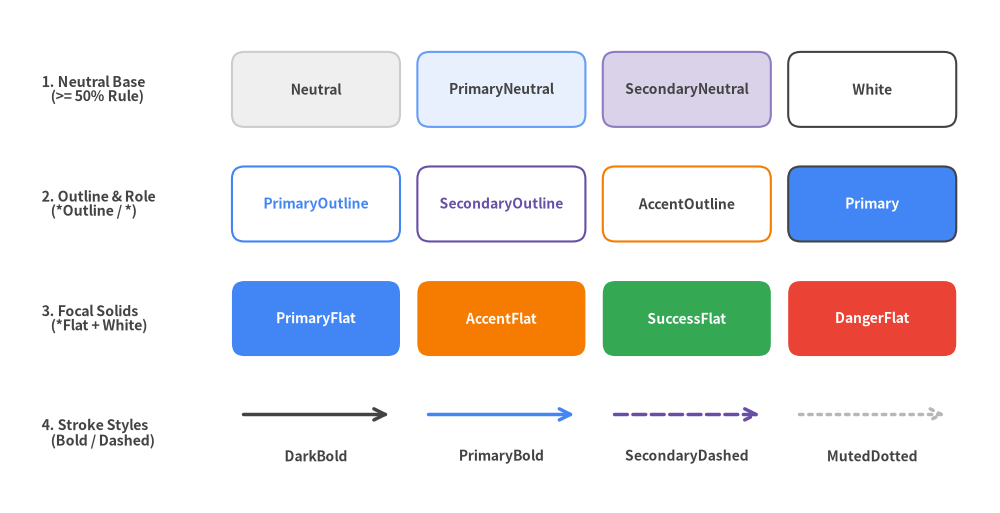
Source Code
from drawlib.canvas import save, setup
from drawlib.lines import line
from drawlib.shapes import rectangle
from drawlib.styles import Styles
from drawlib.text import text
setup(width=144, height=74)
row_hdr = Styles.DarkBold.patch(text_size=10.2, halign="left")
dark_lbl = Styles.DarkBold.patch(text_size=10.0)
white_lbl = Styles.WhiteBold.patch(text_size=10.0)
xs = [45.5, 72.2, 98.9, 125.6]
sw_w, sw_h = 24.2, 10.8
# Row 1: Neutral Foundations (>= 50% of every diagram)
text((6.0, 61.0), "1. Neutral Base\n (>= 50% Rule)", style=row_hdr)
r1 = [
("Neutral", Styles.Neutral),
("PrimaryNeutral", Styles.PrimaryNeutral),
("SecondaryNeutral", Styles.SecondaryNeutral),
("White", Styles.White),
]
for cx, (name, st) in zip(xs, r1):
rectangle((cx, 61.0), width=sw_w, height=sw_h, style=st.patch(shape_r=1.8), text=name, text_style=dark_lbl)
# Row 2: Outline & Role Tokens
text((6.0, 44.5), "2. Outline & Role\n (*Outline / *)", style=row_hdr)
r2 = [
("PrimaryOutline", Styles.PrimaryOutline, Styles.PrimaryBold.patch(text_size=10.0)),
("SecondaryOutline", Styles.SecondaryOutline, Styles.SecondaryBold.patch(text_size=10.0)),
("AccentOutline", Styles.AccentOutline, Styles.DarkBold.patch(text_size=10.0)),
("Primary", Styles.Primary, white_lbl),
]
for cx, (name, st, ts) in zip(xs, r2):
rectangle((cx, 44.5), width=sw_w, height=sw_h, style=st.patch(shape_r=1.8), text=name, text_style=ts)
# Row 3: Focal Solid Tokens (*Flat + WhiteBold)
text((6.0, 28.0), "3. Focal Solids\n (*Flat + White)", style=row_hdr)
r3 = [
("PrimaryFlat", Styles.PrimaryFlat),
("AccentFlat", Styles.AccentFlat),
("SuccessFlat", Styles.SuccessFlat),
("DangerFlat", Styles.DangerFlat),
]
for cx, (name, st) in zip(xs, r3):
rectangle((cx, 28.0), width=sw_w, height=sw_h, style=st.patch(shape_r=1.8), text=name, text_style=white_lbl)
# Row 4: Connector & Boundary Line Styles
text((6.0, 11.5), "4. Stroke Styles\n (Bold / Dashed)", style=row_hdr)
r4 = [
("DarkBold", Styles.DarkBold),
("PrimaryBold", Styles.PrimaryBold),
("SecondaryDashed", Styles.SecondaryDashedBold),
("MutedDotted", Styles.MutedDottedBold),
]
for cx, (name, st) in zip(xs, r4):
line((cx - 10.5, 14.2), (cx + 10.5, 14.2), arrow_head="->", style=st)
text((cx, 8.2), name, style=dark_lbl)
save()
5.1 Dynamic Theme Injection: drawlib.styles vs. preset_styles
In every script and Markdown drawlib block, always import PascalCase Colors and Styles from drawlib.styles:
from drawlib.styles import Colors, Styles
Never import lowercase styles or colors (which shadows the drawlib.styles module), and avoid hardcoding concrete catalogs like GoogleStyles inside diagram files. Instead, drawlib.styles acts as a dynamic runtime facade populated by your project's root styles.py—and optionally overridden per language by <lang>/styles.py (such as ja/styles.py for Japanese typography):
DefaultStyles/DefaultColors: Balanced 6-tone chromatic palette (DefaultStyles1throughDefaultStyles6) tailored for technical documentation.GoogleStyles/GoogleColors: Material and Google Workspace presentation palette (style = "google"indrawlib.toml, used throughout this guide).MonochromeStyles/MonochromeColors: High-contrast 8-step grayscale theme for print publications, academic papers, and patent drawings (plusCssColorsfor all 140 W3C named web colors).
Because every theme exposes the exact same semantic token names, switching styles.py from GoogleStyles() to MonochromeStyles() restyles hundreds of diagrams without changing a single line of diagram code.
5.2 Semantic Token Families & The 50%+ Neutral Discipline
Professional architecture diagrams rely on visual hierarchy rather than rainbow fills. Every built-in theme organizes tokens into semantic roles and orthogonal variant suffixes:
| Token Family / Suffix | Examples | Visual Behavior & Contrast Rule |
|---|---|---|
| Neutral Foundations | Neutral, PrimaryNeutral, SecondaryNeutral, White |
Calm light/tinted card fills with subtle borders. Ground >= 50% of shapes and containers in these tokens. Always pass text_style=Styles.DarkBold when labeling Styles.White. |
| Semantic Roles | Primary, Secondary, Accent, Warning, Success, Danger, Muted |
Blue (Primary), Purple/Indigo (Secondary), Orange (Accent), Green (Success), Red (Danger), and Gray (Muted), plus numbered tone scales (Primary1 light tint through Primary6 deep shade). |
Outline / Wireframe (*Outline / *Solid) |
PrimaryOutline, SecondaryOutline, AccentOutline |
Transparent interior with a solid colored border (1.5 width), ideal for logical zones, VPC frames, and lightweight badges. |
Focal Solids (*Flat) |
PrimaryFlat, AccentFlat, SuccessFlat, DangerFlat |
Borderless saturated fills (shape_line_width=0). Reserve strictly for 1–2 focal elements per diagram and pair with Styles.WhiteBold. |
| Weight & Pattern Suffixes | *Bold, *Thin, *Dashed, *Dotted |
Adjust stroke width (Bold=2.5, Thin=0.75, plus standalone Styles.Light) and dash pattern (MutedDashed, SecondaryDashedBold, PrimaryDotted). |
5.3 Immutable .patch(), .patch_font() & Universal Fonts
Every Style and Color instance is strictly immutable. To customize corner rounding, stroke thickness, alignment, font size, or opacity, call .patch(...) on an existing Styles.* preset rather than constructing a bare Style(...) from scratch. Deriving from Styles.* preserves coordinated font families, icon weights, arrow fills, and theme-switching compatibility:
from drawlib.canvas import save, setup
from drawlib.fonts import FontFile, FontJapanese, FontMonoSpace
from drawlib.preset_styles import GoogleStyles
from drawlib.shapes import rectangle
from drawlib.styles import Colors, Styles
# Locale-level font override pattern used in ja/styles.py:
JaStyles = GoogleStyles().patch_font(
regular=FontJapanese.SANSSERIF_REGULAR,
bold=FontJapanese.SANSSERIF_BOLD,
thin=FontJapanese.SANSSERIF_THIN,
)
# Custom local .ttf/.otf files also work via FontFile("_assets/brand.ttf")
_ = FontFile
setup(width=120, height=36)
card_style = Styles.PrimaryNeutral.patch(
shape_r=2.8,
shape_line_width=2.0,
alpha=0.95,
)
mono_label = Styles.DarkBold.patch(
text_font=FontMonoSpace.ROBOTO_MONO_BOLD,
text_size=11.0,
halign="center",
valign="center",
)
glass_tint = Colors.Primary.patch(alpha=0.15)
_ = (JaStyles, glass_tint)
rectangle((60, 18), width=56, height=18, style=card_style, text="api.internal:8443", text_style=mono_label)
save()
drawlib.fonts ships universal and script-specific font families that download automatically on first use and cache locally (manageable offline via uv run drawlib cache download --all):
- Universal & Western Families:
Font(Noto Sans/Serif covering Latin + CJK),FontSansSerif(Lato, Montserrat, Poppins, Oswald, Raleway),FontSerif(Merriweather, Playfair Display, Platypi), andFontRoboto(Roboto, Condensed, Slab, Serif). - Code & Tabular Metrics:
FontMonoSpace(ROBOTO_MONO_REGULAR,SOURCECODEPRO_REGULAR,SOURCEHANCODEJP_REGULAR) andFontSourceCode. - CJK, Regional & Custom Files:
FontJapanese,FontChinese(Simplified, Traditional, Hong Kong),FontKorean,FontArabic,FontThai,FontBrahmic, andFontFile("_assets/custom.ttf")for project-bundled.ttf/.otfassets.
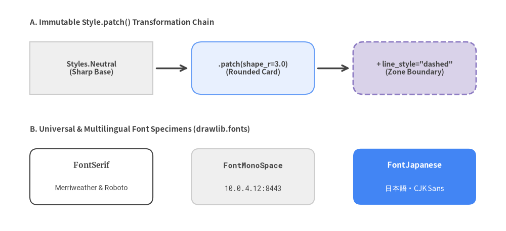
Source Code
from drawlib.canvas import save, setup
from drawlib.fonts import FontJapanese, FontMonoSpace, FontRoboto, FontSerif
from drawlib.lines import line
from drawlib.shapes import rectangle
from drawlib.styles import Styles
from drawlib.text import text
setup(width=144, height=66)
sec_hdr = Styles.DarkBold.patch(text_size=10.8, halign="left")
xs = [26.0, 72.0, 118.0]
# Top Band: .patch() transformation pipeline
text((8.5, 59.5), "A. Immutable Style.patch() Transformation Chain", style=sec_hdr)
rectangle(
(xs[0], 46.5),
width=35.0,
height=15.0,
style=Styles.Neutral,
text="Styles.Neutral\n(Sharp Base)",
text_style=Styles.DarkBold.patch(text_size=10.2),
)
line((44.5, 46.5), (53.5, 46.5), arrow_head="->", style=Styles.DarkBold)
rectangle(
(xs[1], 46.5),
width=35.0,
height=15.0,
style=Styles.PrimaryNeutral.patch(shape_r=3.0),
text=".patch(shape_r=3.0)\n(Rounded Card)",
text_style=Styles.DarkBold.patch(text_size=10.2),
)
line((90.5, 46.5), (99.5, 46.5), arrow_head="->", style=Styles.DarkBold)
rectangle(
(xs[2], 46.5),
width=35.0,
height=15.0,
style=Styles.SecondaryNeutral.patch(
shape_r=3.0,
shape_line_style="dashed",
shape_line_width=2.0,
),
text='+ line_style="dashed"\n(Zone Boundary)',
text_style=Styles.DarkBold.patch(text_size=10.2),
)
# Bottom Band: Typography specimens
text((8.5, 29.0), "B. Universal & Multilingual Font Specimens (drawlib.fonts)", style=sec_hdr)
rectangle((xs[0], 15.5), width=35.0, height=16.0, style=Styles.White.patch(shape_r=2.2))
text((xs[0], 18.8), "FontSerif", style=Styles.DarkBold.patch(text_font=FontSerif.MERRIWEATHER_BOLD, text_size=11.0))
text((xs[0], 12.2), "Merriweather & Roboto", style=Styles.Dark.patch(text_font=FontRoboto.ROBOTO_REGULAR, text_size=10.0))
rectangle((xs[1], 15.5), width=35.0, height=16.0, style=Styles.Neutral.patch(shape_r=2.2))
text((xs[1], 18.8), "FontMonoSpace", style=Styles.DarkBold.patch(text_font=FontMonoSpace.ROBOTO_MONO_BOLD, text_size=10.8))
text((xs[1], 12.2), "10.0.4.12:8443", style=Styles.Dark.patch(text_font=FontMonoSpace.ROBOTO_MONO_REGULAR, text_size=10.0))
rectangle((xs[2], 15.5), width=35.0, height=16.0, style=Styles.PrimaryFlat.patch(shape_r=2.2))
text((xs[2], 18.8), "FontJapanese", style=Styles.WhiteBold.patch(text_font=FontJapanese.SANSSERIF_BOLD, text_size=11.0))
text((xs[2], 12.2), "日本語・CJK Sans", style=Styles.White.patch(text_font=FontJapanese.SANSSERIF_REGULAR, text_size=10.2))
save()
6. 34 Icon Suites & Media Assets
Architecture blueprints and technical guides immediately gain clarity when services carry recognizable UI glyphs, official cloud icons, and crisp raster illustrations. Drawlib bundles 34 on-demand cached icon suites in drawlib.icons alongside non-destructive raster processing and sub-canvas composition in drawlib.images.
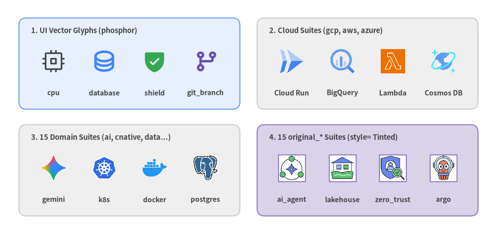
Source Code
from drawlib.canvas import save, setup
from drawlib.icons import (
ai,
aws,
azure,
cnative,
data,
gcp,
original_ai,
original_cnative,
original_data,
original_security,
phosphor,
)
from drawlib.shapes import rectangle
from drawlib.styles import Colors, Styles
from drawlib.text import text
setup(width=144, height=68)
hdr = Styles.DarkBold.patch(text_size=10.5, halign="left")
lbl = Styles.DarkBold.patch(text_size=10.0)
xs_l = [15.5, 30.2, 44.8, 59.5]
xs_r = [84.5, 99.2, 113.8, 128.5]
# 4 neutral category cards
rectangle((37.5, 49.5), width=64.0, height=26.5, style=Styles.PrimaryNeutral.patch(shape_r=2.2))
rectangle((106.5, 49.5), width=64.0, height=26.5, style=Styles.Neutral.patch(shape_r=2.2))
rectangle((37.5, 18.5), width=64.0, height=26.5, style=Styles.Neutral.patch(shape_r=2.2))
rectangle((106.5, 18.5), width=64.0, height=26.5, style=Styles.SecondaryNeutral.patch(shape_r=2.2))
# 1. Phosphor UI Vector Glyphs
text((9.0, 59.0), "1. UI Vector Glyphs (phosphor)", style=hdr)
phosphor.cpu((xs_l[0], 50.2), width=7.2, style=Styles.Dark)
phosphor.database((xs_l[1], 50.2), width=7.2, style=Styles.PrimaryBold)
phosphor.shield_check((xs_l[2], 50.2), width=7.2, style=Styles.Success.patch(icon_style="fill"))
phosphor.git_branch((xs_l[3], 50.2), width=7.2, style=Styles.SecondaryBold)
for cx, name in zip(xs_l, ["cpu", "database", "shield", "git_branch"]):
text((cx, 41.0), name, style=lbl)
# 2. Official Cloud Provider Suites (gcp, aws, azure)
text((78.0, 59.0), "2. Cloud Suites (gcp, aws, azure)", style=hdr)
gcp.cloud_run((xs_r[0], 50.2), width=7.8, style=Styles.Primary)
gcp.bigquery((xs_r[1], 50.2), width=7.8, style=Styles.Primary)
aws.aws_lambda((xs_r[2], 50.2), width=7.8, style=Styles.Primary)
azure.cosmos_db((xs_r[3], 50.2), width=7.8, style=Styles.Primary)
for cx, name in zip(xs_r, ["Cloud Run", "BigQuery", "Lambda", "Cosmos DB"]):
text((cx, 41.0), name, style=lbl)
# 3. 15 Multi-Brand Domain Suites (ai .. workspace)
text((9.0, 28.0), "3. 15 Domain Suites (ai, cnative, data...)", style=hdr)
ai.gemini((xs_l[0], 19.2), width=7.8, style=Styles.Primary)
cnative.kubernetes((xs_l[1], 19.2), width=7.8, style=Styles.Primary)
cnative.docker((xs_l[2], 19.2), width=7.8, style=Styles.Primary)
data.postgresql((xs_l[3], 19.2), width=7.8, style=Styles.Primary)
for cx, name in zip(xs_l, ["gemini", "k8s", "docker", "postgres"]):
text((cx, 10.0), name, style=lbl)
# 4. 15 original_* 2D Twin Suites with style= tinting & border
text((78.0, 28.0), "4. 15 original_* Suites (style= Tinted)", style=hdr)
tinted = Styles.Secondary.patch(
image_tint_color=Colors.White,
image_border_color=Colors.Secondary,
image_border_width=1.0,
)
original_ai.ai_agent((xs_r[0], 19.2), width=7.8, style=tinted)
original_data.data_lakehouse((xs_r[1], 19.2), width=7.8, style=tinted)
original_security.zero_trust((xs_r[2], 19.2), width=7.8, style=tinted)
original_cnative.argo((xs_r[3], 19.2), width=7.8, style=tinted)
for cx, name in zip(xs_r, ["ai_agent", "lakehouse", "zero_trust", "argo"]):
text((cx, 10.0), name, style=lbl)
save()
6.1 Overview of Drawlib's 34 Built-In Icon Suites
Every icon function in drawlib.icons follows the universal center-anchored xy = (cx, cy) contract with a 1:1 square width= and a mandatory keyword-only *, style: Style parameter. Binary icon packs download automatically on first reference and cache locally (uv run drawlib cache download --all pre-fetches all 34 suites for offline CI).
| Tier | Suites (34 Total) | Rendering & style= Customization |
|---|---|---|
| 1. General UI Vector Icons (1) | phosphor (1,500+ icons, plus low-level font_icon) |
Crisp TrueType vector glyphs supporting 5 weights via style.icon_style ("thin", "light", "regular", "bold", "fill"—or Styles.*Bold / *Flat) and direct coloring via style.icon_color. |
| 2. Cloud Provider Suites (3) | gcp, aws, azure |
Official 512x512 RGBA service icons for Google Cloud, AWS, and Microsoft Azure architectures. |
| 3. Multi-Brand Domain Suites (15) | ai, business, client, cloud, cnative, code, data, devops, facility, itservice, network, security, server, social, workspace |
Curated multi-color vendor logos across AI/LLMs, CI/CD & DevOps, containers/Kubernetes (cnative), databases/streaming (data), frontend/mobile (client), hardware (server, facility), networking, and security. |
4. original_* 2D Twin Suites (15) |
original_ai through original_workspace |
Unified flat 2D brand twins plus vendor-neutral concept icons (original_ai.ai_agent, original_data.data_lakehouse, original_security.zero_trust). Accepts style= background tinting (image_tint_color), framing (image_border_*), alpha, and angle (and monochrome recoloring via Dimage.colorize()). |
6.2 Standalone Icon Calls vs. High-Level Enum Tokens
Drawlib provides two ergonomic ways to place icons depending on whether you are composing a custom canvas or declaring a structured diagram:
- Direct Canvas Calls (
drawlib.icons.<suite>.<name>): Callphosphor.cpu((25, 20), width=8.0, style=Styles.PrimaryBold)(orStyles.Accent.patch(icon_style="fill")) andgcp.cloud_run((60, 20), width=9.0, style=Styles.Primary)to place an icon at exact canvas coordinates(cx, cy). - Typed Enum Tokens (
PhosphorIcon,GcpIcon,AwsIcon,CnativeIcon, etc.): High-level diagram builders (drawlib.diagrams.architecture,drawlib.diagrams.sequence, and icon-awareSmartArts) export strongly typedStrEnumtokens so nodes automatically align icons alongside labels without manual coordinate math.
from drawlib.canvas import save, setup
from drawlib.diagrams.architecture import ArchitectureDiagram, GcpIcon, Node, PhosphorIcon
from drawlib.icons import phosphor
from drawlib.styles import Styles
setup(width=120, height=40)
# 1. Standalone direct icon call at exact center (cx, cy)
phosphor.sparkle((16, 20), width=7.5, style=Styles.Accent.patch(icon_style="fill"))
# 2. Enum tokens inside high-level ArchitectureDiagram nodes
arch = ArchitectureDiagram(
node_style=Styles.PrimaryBold,
node_text_style=Styles.DarkBold.patch(text_size=11.0),
edge_style=Styles.DarkBold,
edge_text_style=Styles.DarkBold.patch(text_size=10.0),
node_card_style=Styles.Neutral,
)
gw = arch.add(Node("Edge Gateway", width=34, height=16, icon=PhosphorIcon.SHIELD_CHECK), xy=(52, 20))
svc = arch.add(
Node(
"Cloud Run API",
width=34,
height=16,
icon=GcpIcon.CLOUD_RUN,
card_style=Styles.PrimaryNeutral,
),
xy=(98, 20),
)
arch.connect(gw, svc, arrow="->")
arch.draw()
save()
6.3 Raster Assets (image), Dimage Pipelines & Nested Sub-Canvases
For screenshots, product photos, mascots, and composite sub-diagrams, drawlib.images provides three composable tools:
image(xy, width=..., image="_assets/linux.png", style=...): Places a raster file,PIL.Image.Image, orDimagecentered atxy = (cx, cy)while automatically preserving its aspect ratio. Always store project images under_assets/and reference relative paths ("_assets/linux.png"). Usestyle.patch(angle=..., alpha=..., image_tint_color=..., image_border_width=..., image_border_color=..., image_border_style=...)to rotate, tint transparent backgrounds, or frame images cleanly.- Immutable
DimageFilter Chains: Wrap any image inDimage("_assets/linux.png")to chain non-destructive pixel operations—each returning a freshDimage:- Geometry & Alpha Cleanup:
.resize(width, height),.crop(x, y, width, height)(where(0, 0)is the bottom-left pixel corner, matching Drawlib's Cartesian axes!),.mirror(),.flip(),.trim(),.make_transparent(color="auto", tolerance=15),.fill(color), and.alpha(0.8). - Color & Stylistic Filters:
.grayscale(),.sepia(),.colorize(from_black_to=..., from_white_to=...),.brightness(0.9),.invert(),.posterize(num_colors=4),.mosaic(block_size=16),.blur(), and.line_extraction().
- Geometry & Alpha Cleanup:
- Nested Sub-Canvas Composition (
get_dimage_from_code): Executes a self-contained Drawlib Python snippet in an isolated process and returns the rendered canvas in memory as aDimage, making it easy to embed miniature badges or Picture-in-Picture diagrams inside larger layouts.
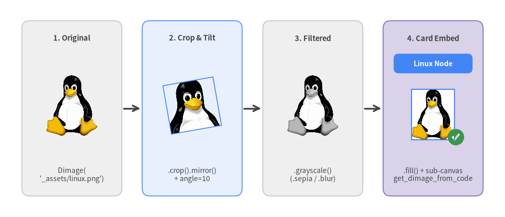
Source Code
from drawlib.canvas import save, setup
from drawlib.images import Dimage, get_dimage_from_code, image
from drawlib.lines import line
from drawlib.shapes import rectangle
from drawlib.styles import Colors, Styles
from drawlib.text import text
setup(width=144, height=62)
base = Dimage("_assets/linux.png")
xs = [20.5, 54.8, 89.2, 123.5]
card_w, card_h, cy = 28.5, 50.0, 31.0
title_st = Styles.DarkBold.patch(text_size=10.5)
code_st = Styles.Dark.patch(text_size=10.0)
# Stage 1: Original raster asset
rectangle((xs[0], cy), width=card_w, height=card_h, style=Styles.Neutral.patch(shape_r=2.2))
text((xs[0], 51.0), "1. Original", style=title_st)
image((xs[0], 31.8), width=14.5, image=base)
text((xs[0], 12.0), "Dimage(\n'_assets/linux.png')", style=code_st)
# Stage 2: Bottom-left Cartesian crop + mirror + rotated placement
rectangle((xs[1], cy), width=card_w, height=card_h, style=Styles.PrimaryNeutral.patch(shape_r=2.2))
text((xs[1], 51.0), "2. Crop & Tilt", style=title_st)
cropped = base.crop(110, 340, 455, 440).mirror()
image(
(xs[1], 31.8),
width=14.5,
image=cropped,
style=Styles.Primary.patch(
angle=10,
image_border_width=1.2,
image_border_color=Colors.Primary,
),
)
text((xs[1], 12.0), ".crop().mirror()\n+ angle=10", style=code_st)
# Stage 3: Grayscale / filter chain
rectangle((xs[2], cy), width=card_w, height=card_h, style=Styles.Neutral.patch(shape_r=2.2))
text((xs[2], 51.0), "3. Filtered", style=title_st)
image((xs[2], 31.8), width=14.5, image=base.grayscale())
text((xs[2], 12.0), ".grayscale()\n(.sepia / .blur)", style=code_st)
# Stage 4: Embedded inside a styled card with get_dimage_from_code() badge
rectangle((xs[3], cy), width=card_w, height=card_h, style=Styles.SecondaryNeutral.patch(shape_r=2.2))
text((xs[3], 51.0), "4. Card Embed", style=title_st)
rectangle(
(xs[3], 43.8),
width=22.5,
height=5.6,
style=Styles.PrimaryFlat.patch(shape_r=1.4),
text="Linux Node",
text_style=Styles.WhiteBold.patch(text_size=10.0),
)
framed = base.resize(270, 320).fill(Colors.White)
image(
(xs[3], 29.2),
width=12.2,
image=framed,
style=Styles.Primary.patch(
image_border_width=1.5,
image_border_color=Colors.Primary,
),
)
sub_badge = get_dimage_from_code("""
from drawlib.canvas import setup
from drawlib.shapes import checkmark, circle
from drawlib.styles import Styles
setup(width=36, height=36)
circle((18, 18), radius=15, style=Styles.SuccessFlat)
checkmark((18, 18), width=15, style=Styles.WhiteFlat)
""").make_transparent(color="auto", tolerance=15)
image((xs[3] + 6.5, 22.8), width=5.6, image=sub_badge)
text((xs[3], 12.0), ".fill() + sub-canvas\nget_dimage_from_code", style=code_st)
# Pipeline arrows between cards
for i in range(3):
line((xs[i] + 14.8, cy), (xs[i + 1] - 14.8, cy), arrow_head="->", style=Styles.DarkBold)
save()
7. SmartArts: 18 Structured Visual Components
Instead of calculating manual rectangle coordinates and text offsets for common engineering visuals, drawlib.smartarts provides 18 high-level components that automate geometry, alignment, borders, and typography out of the box. Every SmartArt shares the same GoogleStyles design tokens and Cartesian canvas, letting you compose KPI executive headers, pipelines, SLA tables, and repository trees inside a single figure.
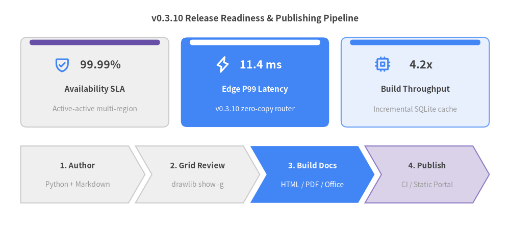
Source Code
from drawlib.canvas import save, setup
from drawlib.icons import phosphor
from drawlib.smartarts import ChevronProcess, KpiCards
from drawlib.styles import Styles
from drawlib.text import text
setup(width=148, height=66)
text(
(74.0, 60.5),
"v0.3.10 Release Readiness & Publishing Pipeline",
style=Styles.DarkBold.patch(text_size=12.5),
)
kpi = KpiCards(
style=Styles.Neutral.patch(shape_r=1.8),
metric_style=Styles.DarkBold.patch(text_size=15.5),
text_style=Styles.DarkBold.patch(text_size=11.0),
description_style=Styles.Muted.patch(text_size=10.0),
accent_style=Styles.SecondaryFlat,
icon_style=Styles.PrimaryBold,
accent_position="top_bar",
metric_layout="top_stack",
spacing=3.5,
)
kpi.add(
"99.99%",
"Availability SLA",
"Active-active multi-region",
icon=phosphor.shield_check,
)
kpi.add(
"11.4 ms",
"Edge P99 Latency",
"v0.3.10 zero-copy router",
icon=phosphor.lightning,
style=Styles.PrimaryFlat.patch(shape_r=1.8),
metric_style=Styles.WhiteBold.patch(text_size=15.5),
text_style=Styles.WhiteBold.patch(text_size=11.0),
description_style=Styles.White.patch(text_size=10.0),
accent_style=Styles.WhiteFlat,
icon_style=Styles.WhiteBold,
)
kpi.add(
"4.2x",
"Build Throughput",
"Incremental SQLite cache",
icon=phosphor.cpu,
style=Styles.PrimaryNeutral.patch(shape_r=1.8),
accent_style=Styles.PrimaryFlat,
)
kpi.draw(xy=(6.0, 29.0), width=136.0, height=26.0, columns=3)
pipeline = ChevronProcess(
style=Styles.Neutral,
text_style=Styles.DarkBold.patch(text_size=10.8),
description_style=Styles.Muted.patch(text_size=10.0),
corner_angle=60.0,
spacing=2.0,
flat_left_end=True,
)
pipeline.add("1. Author", description="Python + Markdown")
pipeline.add("2. Grid Review", description="drawlib show -g")
pipeline.add(
"3. Build Docs",
description="HTML / PDF / Office",
style=Styles.PrimaryFlat,
text_style=Styles.WhiteBold.patch(text_size=10.8),
description_style=Styles.White.patch(text_size=10.0),
)
pipeline.add(
"4. Publish",
description="CI / Static Portal",
style=Styles.SecondaryNeutral,
)
pipeline.draw(xy=(6.0, 7.0), width=136.0, height=16.5)
save()
7.1 Complete Catalog of 18 SmartArts & Coordinate Anchors
Because Drawlib uses a bottom-left (0, 0) Cartesian canvas where +Y points upward, knowing each SmartArt's default .draw(xy=...) coordinate anchor guarantees one-shot placement without trial-and-error shifts:
- Bottom-Left
(x0, y0): Most rectangular containers (ChevronProcess,KpiCards,GeoMap,*Calendar, etc.) start at(x0, y0)and extend rightward (+X) and upward (+Y). - Top-Left
(x0, y_top): Reading-order components (Table,BulletPoints,SourceCode,TreeNode) start at(x0, y_top)and grow downward (-Y), so always pass an uppery_topcoordinate. - Center
(cx, cy): Radial layouts (Cycle,MindMapNode) expand outward around(cx, cy).
7.1.1 Processes, Cycles & Timelines
| Component | Item / Helper Models | Default .draw(xy=...) Anchor |
Primary Engineering Use Cases |
|---|---|---|---|
ChevronProcess |
ChevronItem |
Bottom-Left (align="bottom_left") |
CI/CD pipelines, ETL workflows, phased rollouts (flat_left_end=True) |
Cycle |
CycleItem, CycleCenter |
Center (align="center") |
PDCA feedback loops, OAuth token refresh cycles, SRE incident loops |
Roadmap |
RoadmapItem |
Bottom-Left (align="bottom_left") |
Quarterly release milestones, migration timelines, postmortem chronicles |
7.1.2 Cards, Grids & Summaries
| Component | Item / Helper Models | Default .draw(xy=...) Anchor |
Primary Engineering Use Cases |
|---|---|---|---|
KpiCards (KpiCard) |
KpiCardItem |
Bottom-Left (align="bottom_left") |
Executive SLA metrics, latency targets, benchmark summary headers |
CardList |
CardListItem |
Bottom-Left (align="bottom_left") |
Vertical or horizontal feature cards with optional -> step connectors |
BoxList |
BoxListItem |
Bottom-Left (align="bottom_left") |
Contiguous service strips, protocol frame headers, compact status blocks |
GridLayout |
GridItem |
Bottom-Left (align="bottom_left") |
Multi-row/column spanning architecture matrices (row=0 at bottom) |
Pyramid |
PyramidItem |
Bottom-Left (align="bottom_left") |
Testing pyramids, storage/cache hierarchies, defense-in-depth layers |
Panel |
— | Bottom-Left (align="bottom_left") |
Titled container frames ("filled", "underline", "floating", "window") |
7.1.3 Tables, Text & Code Blocks
| Component | Item / Helper Models | Default .draw(xy=...) Anchor |
Primary Engineering Use Cases |
|---|---|---|---|
Table |
— | Top-Left (align="top_left") |
Service SLA matrices, feature comparisons, quota schedules (draw_flexible) |
BulletPoints |
BulletPointItem |
Top-Left (fixed (x, y)) |
Architecture takeaways, design review checklists, slide callouts |
SourceCode |
SourceCodeStyles, sourcecode |
Top-Left (align="top_left") |
Vector syntax-highlighted Python/YAML/JSON snippets inside diagrams |
7.1.4 Hierarchies & Mind Maps
| Component | Item / Helper Models | Default .draw(xy=...) Anchor |
Primary Engineering Use Cases |
|---|---|---|---|
TreeNode |
— | Top-Left (fixed (x, y)) |
Monorepo directory layouts, package hierarchies, CLI command trees |
MindMapNode |
— | Center (fixed (cx, cy)) |
4-way radial system taxonomies, domain decompositions, org charts |
7.1.5 Geographic & Temporal
| Component | Item / Helper Models | Default .draw(xy=...) Anchor |
Primary Engineering Use Cases |
|---|---|---|---|
GeoMap |
— | Bottom-Left (align="bottom_left") |
Multi-region cloud deployments (World, Countries, Cities, lonlat_to_xy) |
MonthCalendar |
CalendarItem |
Bottom-Left (align="bottom_left") |
7-column monthly or multi-week release schedules ("YYYY-MM-DD") |
WeekCalendar |
CalendarItem |
Bottom-Left (align="bottom_left") |
N-day hourly sprint and maintenance windows ("YYYY-MM-DD HH:MM") |
DayCalendar |
CalendarItem |
Bottom-Left (align="bottom_left") |
Single-day incident timelines and minute-level change runbooks |
Tip — Aligning Top-Left and Bottom-Left Components Side by Side: To align a
TableorTreeNodeof heightHwith a Bottom-Left box sitting at(x0, y_bottom), passxy=(x0, y_bottom + H)as the Top-Left anchor (or passalign="bottom_left"directly onTableandSourceCode).
7.2 Top-Left Composition: Pairing Table and TreeNode
Table and TreeNode both default to Top-Left (x0, y_top) coordinates, making them natural partners for side-by-side specification figures:
TableStyling Order Rule:Tableevaluates cell rules in registration order. Because0is an even row index, always callset_style_cell_evenodd(...)beforeset_style_cell_header(...)so the header row (row 0) retains its dark/accent banner, then highlight individual target cells last viaset_style_cell(..., rows=[r], columns=[c]).TreeNodeCascading & Icons: Define all five layout attributes (text_style,line_style,line_horizontal_margin,line_horizontal_length,line_vertical_margin) on the rootTreeNode—descendants inherit them automatically. Attach vectorphosphoricons viaTreeNode.register_drawing_item(...)and.set_drawing_item(name). Pass pre-builtTreeNodechildren viachildren=[...], or append string labels dynamically vianode.add("filename.py").
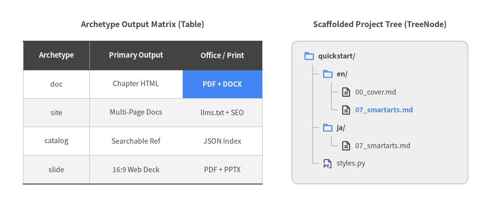
Source Code
from drawlib.canvas import save, setup
from drawlib.icons import phosphor
from drawlib.shapes import rectangle
from drawlib.smartarts import Table, TreeNode
from drawlib.styles import Colors, Styles
from drawlib.text import text
setup(width=148, height=64)
text(
(43.0, 56.5),
"Archetype Output Matrix (Table)",
style=Styles.DarkBold.patch(text_size=11.5),
)
text(
(114.5, 56.5),
"Scaffolded Project Tree (TreeNode)",
style=Styles.DarkBold.patch(text_size=11.5),
)
table = Table(
cell_style=Styles.White,
text_style=Styles.Dark.patch(text_size=10.2),
header_cell_style=Styles.DarkFlat,
header_text_style=Styles.WhiteBold.patch(text_size=10.5),
border_style=Styles.MutedThin,
)
table.set_style_cell_evenodd(
even_color=Colors.Gray1,
even_text_style=Styles.Dark.patch(text_size=10.2),
odd_color=Colors.White,
odd_text_style=Styles.Dark.patch(text_size=10.2),
)
table.set_style_cell_header(
background_color=Colors.Gray8,
text_style=Styles.WhiteBold.patch(text_size=10.5),
)
table.set_style_cell(
background_color=Colors.Primary,
text_style=Styles.WhiteBold.patch(text_size=10.2),
rows=[1],
columns=[2],
)
table.set_style_border(
top=Styles.DarkBold.patch(line_width=1.4),
top2=Styles.DarkBold.patch(line_width=1.0),
bottom=Styles.DarkBold.patch(line_width=1.4),
between_rows=Styles.MutedThin.patch(line_width=0.6),
)
matrix = [
["Archetype", "Primary Output", "Office / Print"],
["doc", "Chapter HTML", "PDF + DOCX"],
["site", "Multi-Page Docs", "llms.txt + SEO"],
["catalog", "Searchable Ref", "JSON Index"],
["slide", "16:9 Web Deck", "PDF + PPTX"],
]
table.draw_flexible(
xy=(7.0, 51.5),
column_widths=[20.0, 28.0, 24.0],
row_heights=[8.6, 8.6, 8.6, 8.6, 8.6],
data=matrix,
align="top_left",
)
rectangle(
(114.5, 30.0),
width=53.0,
height=43.0,
style=Styles.Neutral.patch(shape_r=2.0),
)
TreeNode.register_drawing_item(
name="ch07_dir",
location="before",
padding_width=4.4,
function=phosphor.folder,
style=Styles.PrimaryBold,
args={"width": 3.2},
)
TreeNode.register_drawing_item(
name="ch07_py",
location="before",
padding_width=4.4,
function=phosphor.file_py,
style=Styles.SecondaryBold,
args={"width": 3.2},
)
TreeNode.register_drawing_item(
name="ch07_md",
location="before",
padding_width=4.4,
function=phosphor.file_text,
style=Styles.DarkBold,
args={"width": 3.2},
)
root = TreeNode(
"quickstart/",
text_style=Styles.DarkBold.patch(text_size=10.2),
line_style=Styles.Muted.patch(line_width=1.1),
line_horizontal_margin=2.8,
line_horizontal_length=2.8,
line_vertical_margin=5.4,
children=[
TreeNode(
"en/",
text_style=Styles.DarkBold.patch(text_size=10.2),
children=[
TreeNode("00_cover.md", text_style=Styles.Dark.patch(text_size=10.0)).set_drawing_item("ch07_md"),
TreeNode("07_smartarts.md", text_style=Styles.PrimaryBold.patch(text_size=10.0)).set_drawing_item("ch07_md"),
],
).set_drawing_item("ch07_dir"),
TreeNode(
"ja/",
text_style=Styles.DarkBold.patch(text_size=10.2),
children=[
TreeNode("07_smartarts.md", text_style=Styles.Dark.patch(text_size=10.0)).set_drawing_item("ch07_md"),
],
).set_drawing_item("ch07_dir"),
],
).set_drawing_item("ch07_dir")
root.add("styles.py", text_style=Styles.Dark.patch(text_size=10.0)).set_drawing_item("ch07_py")
root.draw(xy=(91.5, 47.0))
save()
7.3 Step-by-Step Slide & Animation Builds with show=False
Every stateful SmartArt follows a four-phase lifecycle (Instantiate -> Register via .add() -> Mutate .items / .children -> Render via .draw()). Each registered item or node exposes a boolean show: bool = True flag (ChevronItem, KpiCardItem, CardListItem, BoxListItem, CycleItem, GridItem, PyramidItem, RoadmapItem, BulletPointItem, CalendarItem, TreeNode, and MindMapNode).
Setting item.show = False (or passing show=False in .add(...)) hides that specific step while preserving the exact bounding widths, column positions, orbit angles, and vertical row spacing of all sibling items. This makes progressive slide builds and multi-frame drawlib.anim animations effortless—earlier steps never jump or stretch as later steps appear:
from drawlib.canvas import save, setup
from drawlib.smartarts import ChevronProcess
from drawlib.styles import Styles
setup(width=120, height=32)
flow = ChevronProcess(
style=Styles.Neutral,
text_style=Styles.DarkBold.patch(text_size=10.5),
description_style=Styles.Muted.patch(text_size=10.0),
flat_left_end=True,
)
flow.add("1. Ingest", description="Parquet Stream")
flow.add(
"2. Validate",
description="Schema Check",
style=Styles.PrimaryFlat,
text_style=Styles.WhiteBold.patch(text_size=10.5),
description_style=Styles.White.patch(text_size=10.0),
)
# Hidden in Frame 1, yet Steps 1 & 2 keep their exact 4-column widths!
step3 = flow.add("3. Enrich", description="Vector Join", show=False)
step4 = flow.add("4. Serve", description="Low-Latency API", show=False)
flow.draw(xy=(8.0, 8.0), width=104.0, height=16.0)
save()
Query any SmartArt's full constructor reference on demand via uv run drawlib rules show lib-smartarts-overview (or component manuals such as lib-smartarts-calendar, lib-smartarts-geomap, and lib-smartarts-source-code).
8. Quantitative Charts: 10 Pure-Python Chart Types
Technical whitepapers, benchmark reports, and architecture reviews rarely stop at box-and-arrow diagrams—they need rigorous quantitative evidence. drawlib.charts provides 10 pure-Python chart types built natively on Drawlib's rendering engine, all anchored at Bottom-Left (x0, y0) (align="bottom_left") so charts sit alongside SmartArts, icons, and architecture callouts on a single unified canvas.
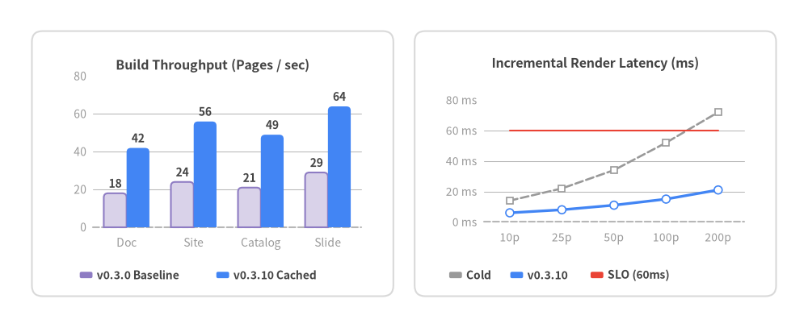
Source Code
from drawlib.canvas import save, setup
from drawlib.charts.bar import BarChart
from drawlib.charts.line import LineChart
from drawlib.shapes import rectangle
from drawlib.styles import Colors, Styles
setup(width=152, height=62)
card_bg = Styles.White.patch(shape_r=2.0, shape_line_color=Colors.Gray3)
rectangle((40.0, 31.0), width=68.0, height=50.0, style=card_bg)
rectangle((112.0, 31.0), width=68.0, height=50.0, style=card_bg)
bar = BarChart(
axis_line_style=Styles.MutedDashed,
categories=["Doc", "Site", "Catalog", "Slide"],
width=62.0,
height=38.0,
bar_mode="group",
bar_width_ratio=0.68,
bar_r=0.8,
axis_text_style=Styles.Muted.patch(text_size=10.0),
grid_style=Styles.MutedThin,
value_text_style=Styles.DarkBold.patch(text_size=10.0),
value_format="{:.0f}",
title="Build Throughput (Pages / sec)",
title_style=Styles.DarkBold.patch(text_size=11.5),
)
bar.add_series("v0.3.0 Baseline", [18.0, 24.0, 21.0, 29.0], style=Styles.SecondaryNeutral)
bar.add_series("v0.3.10 Cached", [42.0, 56.0, 49.0, 64.0], style=Styles.PrimaryFlat)
bar.configure_y_axis(min_value=0.0, max_value=80.0, tick_step=20.0)
bar.draw(xy=(9.0, 14.0))
bar.draw_legend(
xy=(15.0, 10.0),
text_style=Styles.DarkBold.patch(text_size=10.0),
orientation="horizontal",
item_gap=4.5,
)
line = LineChart(
axis_line_style=Styles.MutedDashed,
categories=["10p", "25p", "50p", "100p", "200p"],
width=62.0,
height=38.0,
smooth=False,
show_points=True,
point_size=0.75,
axis_text_style=Styles.Muted.patch(text_size=10.0),
grid_style=Styles.MutedThin,
title="Incremental Render Latency (ms)",
title_style=Styles.DarkBold.patch(text_size=11.5),
)
line.add_series(
"Cold",
[14.0, 22.0, 34.0, 52.0, 72.0],
style=Styles.Muted6Flat,
line_width=1.9,
line_style="dashed",
point_shape="square",
)
line.add_series(
"v0.3.10",
[6.0, 8.0, 11.0, 15.0, 21.0],
style=Styles.PrimaryFlat,
line_width=2.4,
point_shape="circle",
)
line.add_series(
"SLO (60ms)",
[60.0, 60.0, 60.0, 60.0, 60.0],
style=Styles.Danger,
line_width=1.5,
line_style="dotted",
point_shape="none",
)
line.configure_y_axis(min_value=0.0, max_value=80.0, tick_step=20.0, format="{:.0f}", unit="ms")
line.draw(xy=(81.0, 14.0))
line.draw_legend(
xy=(84.5, 10.0),
text_style=Styles.DarkBold.patch(text_size=10.0),
orientation="horizontal",
item_gap=3.5,
)
save()
8.1 Why drawlib.charts Beats Matplotlib in Technical Documentation
Embedding external Matplotlib scripts into multi-language engineering docs introduces mismatched fonts, brittle rcParams boilerplate, and isolated image files that cannot interact with surrounding diagrams. drawlib.charts solves all four friction points natively:
- Identical Cartesian Coordinate System: Every chart draws directly at
xy=(x0, y0)on the active Drawlib canvas, making multi-chart dashboards, framing cards, andKpiCardsheaders effortless to align on a single grid. - Unified
GoogleStylesTokens & CJK Fonts: Charts inheritStyles,Colors, and locale-specific fonts (ja/styles.py) automatically—eliminating missing glyph boxes (□□□) and clashing color palettes. - Presence-Based Styling & Collision-Free Legends: Leaving optional parameters (
grid_style,value_text_style,background_style) asNonecleanly omits visual clutter, while decoupledchart.draw_legend(xy=...)andchart.draw_colorbar(xy=...)calls let you place legends with zero plot collisions. - Layout-Preserving Animation (
show&draw_ratio): Mutatingseries.show = Falseor sweepingseries.draw_ratiofrom0.0to1.0animates bars, curves, wedges, and Gantt tasks while locking the full 100% dataset's axis bounds in place.
8.2 Complete Catalog of All 10 Chart Types
All 10 chart classes across the 9 drawlib.charts.* submodules default to Bottom-Left (x0, y0) (align="bottom_left", with optional align="center" and scale: float = 1.0):
| # | Chart Class | Submodule | Default .draw(xy=...) Anchor |
Core Modes & Capabilities |
|---|---|---|---|---|
| 1 | BarChart |
drawlib.charts.bar |
Bottom-Left (x0, y0) |
"vertical" / "horizontal", "group" / "stack", bar_r, value labels, "log" scale |
| 2 | BoxChart |
drawlib.charts.box |
Bottom-Left (x0, y0) |
Raw sample lists or BoxStats, "iqr" / "percentile" whiskers, show_points strip jitter |
| 3 | LineChart |
drawlib.charts.line |
Bottom-Left (x0, y0) |
Multi-series polylines or smooth=True splines, vertex markers, point_shape="none" thresholds |
| 4 | AreaChart |
drawlib.charts.area |
Bottom-Left (x0, y0) |
Filled "overlap" or cumulative "stack" trend curves with configurable fill_alpha |
| 5 | PieChart |
drawlib.charts.pie |
Bottom-Left (x0, y0) |
Solid pie (hole_ratio=0.0) & donut (hole_ratio=0.5..0.7) with center_text KPI badge |
| 6 | RadarChart |
drawlib.charts.radar |
Bottom-Left (x0, y0) |
Multi-spoke "polygon" or "circle" spider capability matrices (levels, min_value..max_value) |
| 7 | ScatterChart |
drawlib.charts.scatter |
Bottom-Left (x0, y0) |
2D (x, y) correlation plots and variable-radius bubble sizing via Point(x, y, radius=...) |
| 8 | GanttChart |
drawlib.charts.gantt |
Bottom-Left (x0, y0) |
Project timelines with Section, Task progress bars, Milestone, Marker, and Dependency |
| 9 | HeatmapChart |
drawlib.charts.heatmap |
Bottom-Left (x0, y0) |
2D intensity matrices (min_style..max_style or styles), auto_contrast_text, draw_colorbar |
| 10 | HeatmapOverlay |
drawlib.charts.heatmap |
Bottom-Left (x0, y0) |
Spatial density Spot fields (mode="smooth" or "contour") layered over maps or floorplans |
8.2.1 Categorical, Statistical & Matrix Charts
BarChart&BoxChart: Share orientation-awarevalue_axisandcategory_axishelpers (configure_x_axis(...)/configure_y_axis(...)) supporting Nice Numbers linear ticks and base-10 logarithmic (scale="log") axes for wide-dynamic-range benchmarks.HeatmapChart&HeatmapOverlay: Map scalar intensities across color stops (min_style=Styles.White, max_style=Styles.PrimaryFlator multi-stopstyles=[...]).HeatmapChartautomatically flips cell label contrast (auto_contrast_text=True), whileHeatmapOverlayrenders radialSpot(x, y, value, radius=...)fields directly overGeoMapor architecture canvases.
8.2.2 Continuous, Radial & Temporal Charts
LineChart,AreaChart&ScatterChart: Plot continuous trajectories, stacked resource envelopes, and multidimensional(x, y, radius)correlations. Settingpoint_shape="none"withline_style="dotted"or"dashdot"on aLineChartseries creates clean SLO/SLA reference lines without vertex clutter.PieChart,RadarChart&GanttChart: Cover part-to-whole ratios (hole_ratio > 0.0unlocks donut rings with multilinecenter_textbadges and automatic< 4%slice label suppression), multi-axis architecture trade-offs (RadarChart), and milestone execution schedules (GanttChart).
8.3 Statistical Storytelling with BoxChart & Progressive Animations
Effective quantitative figures follow strict data storytelling discipline: never assign five saturated rainbow colors to five competing series. Ground historical baselines, control groups, and secondary tiers in calm neutral tokens (Styles.Neutral, Styles.PrimaryNeutral, Styles.SecondaryNeutral, or dashed Styles.Muted), and reserve Styles.PrimaryFlat or Styles.AccentFlat exclusively for the target series under evaluation.
While bar charts hide tail spikes behind averages, BoxChart exposes medians, interquartile spreads (Q1–Q3), whiskers, and p99 outliers simultaneously—accepting either raw sample sequences (list[float]) or pre-aggregated telemetry (BoxStats) with automatic high-contrast median strokes:
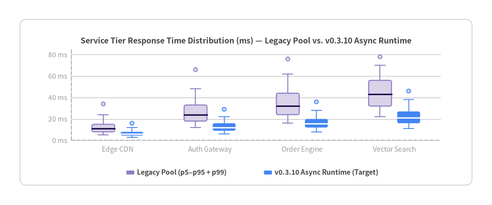
Source Code
from drawlib.canvas import save, setup
from drawlib.charts.box import BoxChart, BoxStats
from drawlib.shapes import rectangle
from drawlib.styles import Colors, Styles
setup(width=148, height=62)
rectangle(
(74.0, 31.0),
width=136.0,
height=50.0,
style=Styles.White.patch(shape_r=2.0, shape_line_color=Colors.Gray3),
)
box = BoxChart(
axis_line_style=Styles.MutedDashed,
categories=["Edge CDN", "Auth Gateway", "Order Engine", "Vector Search"],
width=124.0,
height=38.0,
box_width_ratio=0.62,
box_r=0.6,
show_outliers=True,
axis_text_style=Styles.Muted.patch(text_size=10.0),
grid_style=Styles.MutedThin,
title="Service Tier Response Time Distribution (ms) — Legacy Pool vs. v0.3.10 Async Runtime",
title_style=Styles.DarkBold.patch(text_size=11.5),
)
box.add_series(
"Legacy Pool (p5–p95 + p99)",
[
BoxStats(min=5.0, q1=8.0, median=11.0, q3=15.0, max=24.0, outliers=[34.0]),
BoxStats(min=12.0, q1=18.0, median=24.0, q3=33.0, max=48.0, outliers=[66.0]),
BoxStats(min=16.0, q1=24.0, median=32.0, q3=44.0, max=62.0, outliers=[76.0]),
BoxStats(min=22.0, q1=32.0, median=43.0, q3=56.0, max=70.0, outliers=[78.0]),
],
style=Styles.SecondaryNeutral,
)
box.add_series(
"v0.3.10 Async Runtime (Target)",
[
BoxStats(min=3.0, q1=4.5, median=6.0, q3=8.0, max=12.0, outliers=[16.0]),
BoxStats(min=6.0, q1=9.0, median=12.0, q3=16.0, max=22.0, outliers=[29.0]),
BoxStats(min=8.0, q1=12.0, median=15.5, q3=20.0, max=28.0, outliers=[36.0]),
BoxStats(min=11.0, q1=16.0, median=21.0, q3=27.0, max=38.0, outliers=[46.0]),
],
style=Styles.PrimaryFlat,
)
box.configure_y_axis(
min_value=0.0,
max_value=85.0,
tick_step=20.0,
format="{:.0f}",
unit="ms",
)
box.draw(xy=(12.0, 14.0))
box.draw_legend(
xy=(38.0, 9.8),
text_style=Styles.DarkBold.patch(text_size=10.0),
orientation="horizontal",
item_gap=7.0,
)
save()
When working with small benchmark runs (N = 8..25), pass raw list[float] samples with show_box=True, show_points=True, jitter=0.42 to overlay deterministic strip points on top of each quartile box—or sweep draw_ratio (0.0 to 1.0) on LineChart / BarChart series to render smooth multi-frame drawlib.anim builds:
from drawlib.canvas import save, setup
from drawlib.charts.line import LineChart
from drawlib.styles import Styles
setup(width=110, height=56)
trend = LineChart(
axis_line_style=Styles.MutedDashed,
categories=["T1", "T2", "T3", "T4", "T5"],
width=90.0,
height=38.0,
smooth=True,
axis_text_style=Styles.Muted.patch(text_size=10.0),
grid_style=Styles.MutedThin,
title="Progressive Rollout Throughput (60% Keyframe)",
title_style=Styles.DarkBold.patch(text_size=11.5),
)
trend.add_series("Baseline", [40, 42, 41, 43, 42], style=Styles.SecondaryNeutral, line_style="dashed")
# Renders 60% of the curve left-to-right while keeping full T1..T5 axis bounds fixed!
focal = trend.add_series("v0.3.10 Canary", [42, 58, 74, 89, 96], style=Styles.PrimaryFlat, draw_ratio=0.6)
trend.configure_y_axis(min_value=0, max_value=100, tick_step=25, unit="k rps")
trend.draw(xy=(10.0, 10.0))
save()
Inspect detailed axis, legend, colorbar, and constructor options for any chart family via uv run drawlib rules show lib-charts-overview (or lib-charts-bar, lib-charts-box, lib-charts-line, lib-charts-pie, lib-charts-gantt, and lib-charts-heatmap).
9. Cloud & System Architecture Diagrams
Distributed systems are defined by trust boundaries, network topologies, and service dependencies. drawlib.diagrams.architecture turns cloud infrastructure blueprints into clean, version-controlled Python code—combining hierarchical NodeGroup containers, 33 built-in vendor & vector icon enums (GcpIcon, AwsIcon, AzureIcon, PhosphorIcon), smart boundary edge routing, and spaghetti-free junction() buses.
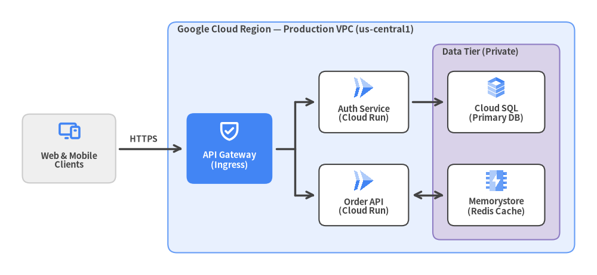
Source Code
from drawlib.canvas import save, setup
from drawlib.diagrams.architecture import (
ArchitectureDiagram,
GcpIcon,
Node,
NodeGroup,
PhosphorIcon,
)
from drawlib.styles import Styles
setup(width=160, height=74)
d = ArchitectureDiagram(
node_style=Styles.PrimaryBold,
node_text_style=Styles.DarkBold.patch(text_size=10.5),
edge_style=Styles.DarkBold,
edge_text_style=Styles.DarkBold.patch(text_size=10.0),
node_card_style=Styles.White,
)
# External actor stays OUTSIDE the Cloud Region / VPC boundary
client = d.add(
Node(
"Web & Mobile\nClients",
width=25.0,
height=18.5,
icon=PhosphorIcon.DEVICES,
icon_size=6.0,
card_style=Styles.Neutral.patch(shape_r=2.0),
),
xy=(14.5, 30.0),
)
# Cloud Region / VPC boundary (Bottom-Left at (41, 2) in diagram coordinates)
vpc = d.add(
NodeGroup(
title="Google Cloud Region — Production VPC (us-central1)",
width=109.0,
height=62.0,
style=Styles.PrimaryNeutral.patch(shape_r=2.4),
text_style=Styles.DarkBold.patch(text_size=11.0, halign="left"),
),
xy=(41.0, 2.0),
)
# Focal Ingress Gateway (local center relative to vpc bottom-left)
gateway = vpc.add(
Node(
"API Gateway\n(Ingress)",
width=23.0,
height=19.0,
icon=PhosphorIcon.SHIELD_CHECK,
icon_size=6.0,
style=Styles.WhiteBold,
text_style=Styles.WhiteBold.patch(text_size=10.5),
card_style=Styles.PrimaryFlat.patch(shape_r=2.0),
),
xy=(16.5, 28.0),
)
# Application Services inside VPC (White cards + official GcpIcon)
auth_svc = vpc.add(
Node(
"Auth Service\n(Cloud Run)",
width=24.0,
height=16.5,
icon=GcpIcon.CLOUD_RUN,
icon_size=6.2,
card_style=Styles.White.patch(shape_r=1.8),
),
xy=(52.5, 40.5),
)
order_svc = vpc.add(
Node(
"Order API\n(Cloud Run)",
width=24.0,
height=16.5,
icon=GcpIcon.CLOUD_RUN,
icon_size=6.2,
card_style=Styles.White.patch(shape_r=1.8),
),
xy=(52.5, 15.5),
)
# Nested Data Tier NodeGroup (local bottom-left inside vpc)
data_tier = vpc.add(
NodeGroup(
title="Data Tier (Private)",
width=34.0,
height=52.5,
style=Styles.SecondaryNeutral.patch(shape_r=2.0),
text_style=Styles.DarkBold.patch(text_size=10.5, halign="left"),
),
xy=(71.0, 3.5),
)
sql_db = data_tier.add(
Node(
"Cloud SQL\n(Primary DB)",
width=26.0,
height=16.5,
icon=GcpIcon.CLOUD_SQL,
icon_size=6.2,
card_style=Styles.White.patch(shape_r=1.8),
),
xy=(17.0, 37.0),
)
cache_db = data_tier.add(
Node(
"Memorystore\n(Redis Cache)",
width=26.0,
height=16.5,
icon=GcpIcon.MEMORYSTORE,
icon_size=6.2,
card_style=Styles.White.patch(shape_r=1.8),
),
xy=(17.0, 12.0),
)
# External HTTPS ingress + clean Junction fan-out bus
d.connect(
client,
gateway,
label="HTTPS",
routing="direct",
padding=1.0,
text_style=Styles.DarkBold.patch(text_size=10.0, xy_shift=(-2.0, 2.6)),
)
j_mid = d.junction((75.0, 30.0))
j_top = d.junction((75.0, 42.5))
j_bot = d.junction((75.0, 17.5))
d.connect(gateway, j_mid, arrow="-", routing="direct", padding=(1.0, 0.0))
d.connect(j_mid, j_top, arrow="-", routing="direct")
d.connect(j_mid, j_bot, arrow="-", routing="direct")
d.connect(j_top, auth_svc, arrow="->", routing="direct", padding=(0.0, 1.0))
d.connect(j_bot, order_svc, arrow="->", routing="direct", padding=(0.0, 1.0))
d.connect(auth_svc, sql_db, arrow="->", routing="direct", padding=1.0)
d.connect(order_svc, cache_db, arrow="<->", routing="direct", padding=1.0)
d.draw(xy=(4.0, 4.0))
save()
9.1 ArchitectureDiagram, Node & Coordinate Semantics
ArchitectureDiagram acts as the top-level container and establishes a three-tier style cascade (Element Override -> Diagram Default -> Built-in Fallback). Its four required keyword-only defaults—node_style, node_text_style, edge_style, and edge_text_style—plus optional node_card_style keep typography and stroke weights uniform across dozens of microservices without repeating style kwargs on every node.
Understanding how d.add(..., xy=...) and group.add(..., xy=...) interpret xy prevents off-by-half-width placement bugs:
| Registration Call | Anchor Point of xy |
Coordinate Frame | Global Diagram Position Formula |
|---|---|---|---|
d.add(Node(...), xy=(cx, cy)) |
Center (cx, cy) |
Global diagram space | (cx, cy) |
d.add(NodeGroup(...), xy=(x0, y0)) |
Bottom-Left (x0, y0) |
Global diagram space | Bottom-Left at (x0, y0) |
group.add(Node(...), xy=(lx, ly)) |
Center (lx, ly) |
Local to group (0, 0) |
(x0 + lx, y0 + ly) |
group.add(NodeGroup(...), xy=(lx0, ly0)) |
Bottom-Left (lx0, ly0) |
Local to group (0, 0) |
Bottom-Left at (x0 + lx0, y0 + ly0) |
d.junction((jx, jy)) |
Exact Point (jx, jy) |
Global diagram space | (jx, jy) |
9.1.1 Pairing Official Cloud & Monochrome Icons with Card Contrast
- Multi-Color Cloud & Domain Icons (
GcpIcon,AwsIcon,AzureIcon,DataIcon,CnativeIcon, etc.): Render512x512official RGBA artwork. Place them onStyles.Whiteor lightStyles.Neutralcards (card_style=Styles.White.patch(shape_r=1.8)) so brand colors stay crisp and legible. - Focal Hero Nodes (
Styles.PrimaryFlat/Styles.AccentFlat): Reserve saturated card fills for 1–2 architectural focal points (such as an Ingress Gateway or Event Router), and pair them with monochromePhosphorIconglyphs tinted viastyle=Styles.WhiteBoldandtext_style=Styles.WhiteBold.
9.2 Network Boundaries with NodeGroup & External Actor Rule
NodeGroup models hierarchical boundaries—Cloud Regions, VPCs, Availability Zones, Kubernetes Clusters, Public/Private Subnets, and Data Tiers. Groups can either auto-size around their children via padding: float = 5.0 (when width=None, height=None) or lock to explicit width and height dimensions for crisp multi-tier grid alignment.
Architectural Boundary Rule — Keep External Actors Outside the Cloud
NodeGroup: Never place end users, mobile apps, browsers, or third-party SaaS webhooks inside your Cloud Region or VPCNodeGroup. Register external actors in global diagram space viad.add(Node(...), xy=...)on the left or top perimeter, and route them across theNodeGroupborder into an explicit edge/ingress node (CDN, Load Balancer, or API Gateway).
9.3 Edge Routing, Bidirectional Arrows & junction() Fan-Out Buses
d.connect(start, end, ...) (as well as node.connect(...) and Edge(...)) connects any Node, NodeGroup, or Junction while automatically clipping arrows cleanly at outer bounding boxes:
- Three Routing Modes (
routing):"orthogonal"(default): Right-angled Manhattan L-bends and Z-bends between service tiers."direct": Straight Euclidean segments for aligned horizontal/vertical flows or bus trunks."curved": Smooth curved arcs/splines (steerable via.via((x, y))) ideal for async callbacks or replication paths.
- Boundary Attachment, Padding & Arrows: Endpoints automatically select the closest boundary side toward the target or first
.via((x, y))waypoint. Usepadding=1.0(or asymmetricpadding=(1.0, 0.0)) for crisp breathing room,arrow="<->"for bidirectional read/write cache links, andxy_shift=(dx, dy)onedge_text_styleso labels never collide with line strokes. - Spaghetti-Free Fan-Out Buses (
d.junction(xy),node.fork(),edge.add_point()): Instead of drawing N diagonal lines from a gateway to N downstream workers, route a single"direct"trunk (arrow="-") into sharedd.junction((x, y))waypoints (or callgateway.fork([svc1, svc2], at_x=...)).
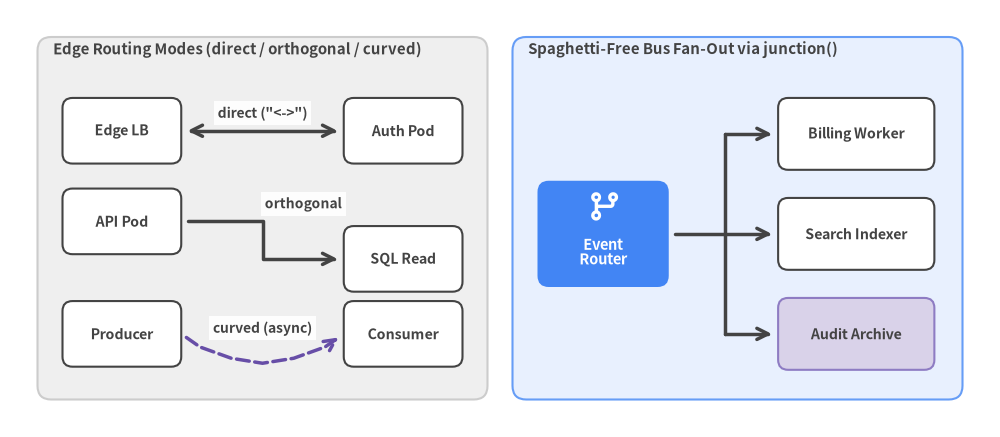
Source Code
from drawlib.canvas import save, setup
from drawlib.diagrams.architecture import (
ArchitectureDiagram,
Node,
NodeGroup,
PhosphorIcon,
)
from drawlib.styles import Styles
setup(width=160, height=70)
d = ArchitectureDiagram(
node_style=Styles.PrimaryBold,
node_text_style=Styles.DarkBold.patch(text_size=10.2),
edge_style=Styles.DarkBold,
edge_text_style=Styles.DarkBold.patch(text_size=10.0),
node_card_style=Styles.White,
)
# Left Panel: 3 Edge Routing Modes
left = d.add(
NodeGroup(
title="Edge Routing Modes (direct / orthogonal / curved)",
width=72.0,
height=58.0,
style=Styles.Neutral.patch(shape_r=2.2),
text_style=Styles.DarkBold.patch(text_size=10.8, halign="left"),
),
xy=(2.0, 2.0),
)
a1 = left.add(Node("Edge LB", width=19.0, height=10.5, card_style=Styles.White.patch(shape_r=1.6)), xy=(13.5, 43.0))
b1 = left.add(Node("Auth Pod", width=19.0, height=10.5, card_style=Styles.White.patch(shape_r=1.6)), xy=(58.5, 43.0))
d.connect(
a1,
b1,
label='direct ("<->")',
arrow="<->",
routing="direct",
padding=1.0,
text_style=Styles.DarkBold.patch(text_size=10.0, text_bg_fill_color=None, xy_shift=(0.0, 2.8)),
)
a2 = left.add(Node("API Pod", width=19.0, height=10.5, card_style=Styles.White.patch(shape_r=1.6)), xy=(13.5, 28.5))
b2 = left.add(Node("SQL Read", width=19.0, height=10.5, card_style=Styles.White.patch(shape_r=1.6)), xy=(58.5, 22.5))
d.connect(
a2,
b2,
label="orthogonal",
arrow="->",
routing="orthogonal",
padding=1.0,
text_style=Styles.DarkBold.patch(text_size=10.0, text_bg_fill_color=None, xy_shift=(6.5, 5.8)),
)
a3 = left.add(Node("Producer", width=19.0, height=10.5, card_style=Styles.White.patch(shape_r=1.6)), xy=(13.5, 10.5))
b3 = left.add(Node("Consumer", width=19.0, height=10.5, card_style=Styles.White.patch(shape_r=1.6)), xy=(58.5, 10.5))
e_curved = d.connect(
a3,
b3,
label="curved (async)",
arrow="->",
routing="curved",
style=Styles.SecondaryBold.patch(line_style="dashed"),
padding=1.0,
text_style=Styles.DarkBold.patch(text_size=10.0, text_bg_fill_color=None, xy_shift=(2.5, 5.2)),
)
e_curved.via((28.0, 10.4), (33.0, 8.6), (38.0, 7.8), (43.0, 8.6), (48.0, 10.4))
# Right Panel: Junction 1-to-3 Fan-Out Bus
right = d.add(
NodeGroup(
title="Spaghetti-Free Bus Fan-Out via junction()",
width=72.0,
height=58.0,
style=Styles.PrimaryNeutral.patch(shape_r=2.2),
text_style=Styles.DarkBold.patch(text_size=10.8, halign="left"),
),
xy=(78.0, 2.0),
)
router = right.add(
Node(
"Event\nRouter",
width=21.0,
height=17.0,
icon=PhosphorIcon.GIT_BRANCH,
icon_size=5.6,
style=Styles.WhiteBold,
text_style=Styles.WhiteBold.patch(text_size=10.5),
card_style=Styles.PrimaryFlat.patch(shape_r=1.8),
),
xy=(14.5, 26.5),
)
w1 = right.add(
Node("Billing Worker", width=25.0, height=11.5, card_style=Styles.White.patch(shape_r=1.6)),
xy=(55.0, 42.5),
)
w2 = right.add(
Node("Search Indexer", width=25.0, height=11.5, card_style=Styles.White.patch(shape_r=1.6)),
xy=(55.0, 26.5),
)
w3 = right.add(
Node("Audit Archive", width=25.0, height=11.5, card_style=Styles.SecondaryNeutral.patch(shape_r=1.6)),
xy=(55.0, 10.5),
)
jb_mid = d.junction((112.0, 28.5))
jb_top = d.junction((112.0, 44.5))
jb_bot = d.junction((112.0, 12.5))
d.connect(router, jb_mid, arrow="-", routing="direct", padding=(1.0, 0.0))
d.connect(jb_mid, jb_top, arrow="-", routing="direct")
d.connect(jb_mid, jb_bot, arrow="-", routing="direct")
d.connect(jb_top, w1, arrow="->", routing="direct", padding=(0.0, 1.0))
d.connect(jb_mid, w2, arrow="->", routing="direct", padding=(0.0, 1.0))
d.connect(jb_bot, w3, arrow="->", routing="direct", padding=(0.0, 1.0))
d.draw(xy=(4.0, 4.0))
save()
For standard 1-to-N orthogonal fan-outs or dead-letter stream taps, node.fork(targets, at_x=...) and edge.add_point((x, y)) create and wire Junction waypoints in a single method call:
from drawlib.canvas import save, setup
from drawlib.diagrams.architecture import ArchitectureDiagram, GcpIcon, Node, PhosphorIcon
from drawlib.styles import Styles
setup(width=124, height=54)
d = ArchitectureDiagram(
node_style=Styles.PrimaryBold,
node_text_style=Styles.DarkBold.patch(text_size=10.2),
edge_style=Styles.DarkBold,
edge_text_style=Styles.DarkBold.patch(text_size=10.0),
node_card_style=Styles.Neutral,
)
lb = d.add(
Node(
"Ingress LB",
width=24.0,
height=16.0,
icon=PhosphorIcon.SHIELD_CHECK,
icon_size=5.8,
style=Styles.WhiteBold,
text_style=Styles.WhiteBold.patch(text_size=10.5),
card_style=Styles.PrimaryFlat.patch(shape_r=1.8),
),
xy=(20.0, 25.0),
)
pod_a = d.add(Node("Worker A", width=24.0, height=15.0, icon=GcpIcon.CLOUD_RUN, icon_size=5.8), xy=(84.0, 36.0))
pod_b = d.add(Node("Worker B", width=24.0, height=15.0, icon=GcpIcon.CLOUD_RUN, icon_size=5.8), xy=(84.0, 14.0))
# Auto-creates a shared Junction at x=52.0 and fans out cleanly to both pods
lb.fork([pod_a, pod_b], at_x=52.0, padding=1.2)
d.draw(xy=(6.0, 2.0))
save()
Explore all 33 architecture icon enums and advanced waypoint APIs via uv run drawlib rules show lib-diagrams-architecture and uv run drawlib rules show lib-icons-overview.
10. Software Design Diagrams: Sequence, Flow, State, Class & ER
Beyond cloud infrastructure topologies (ArchitectureDiagram), drawlib.diagrams provides five specialized software engineering engines—SequenceDiagram, FlowDiagram, StateDiagram, ClassDiagram, and ERDiagram—that render standard UML 2.x, ISO 5807, and Crow's Foot models directly from declarative Python code.
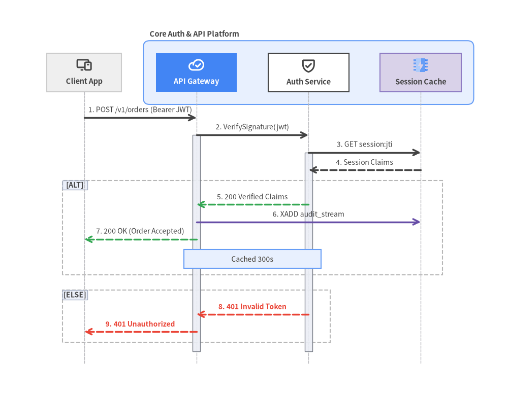
Source Code
import math
from drawlib.canvas import save, setup
from drawlib.diagrams.sequence import (
GcpIcon,
Participant,
ParticipantGroup,
PhosphorIcon,
SequenceDiagram,
)
from drawlib.styles import Styles
d = SequenceDiagram(
node_style=Styles.DarkBold,
node_text_style=Styles.DarkBold.patch(text_size=10.5),
edge_style=Styles.DarkBold,
edge_text_style=Styles.Dark.patch(text_size=10.0),
node_card_style=Styles.Neutral,
autonumber=True,
col_width=36.0,
step_y=5.6,
margin=4.0,
)
client = d.add(
Participant(
"Client App",
width=24.0,
height=12.5,
icon=PhosphorIcon.DEVICES,
icon_size=5.0,
card_style=Styles.Neutral,
)
)
platform = d.add(
ParticipantGroup(
title="Core Auth & API Platform",
padding=4.0,
style=Styles.PrimaryNeutral.patch(shape_r=2.0),
text_style=Styles.DarkBold.patch(text_size=10.5, halign="left", valign="bottom"),
)
)
gateway = platform.add(
Participant(
"API Gateway",
width=26.0,
height=12.5,
icon=PhosphorIcon.CLOUD_CHECK,
icon_size=5.0,
style=Styles.WhiteBold,
text_style=Styles.WhiteBold.patch(text_size=10.5),
card_style=Styles.PrimaryFlat,
)
)
auth = platform.add(
Participant(
"Auth Service",
width=26.0,
height=12.5,
icon=PhosphorIcon.SHIELD_CHECK,
icon_size=5.0,
card_style=Styles.White,
)
)
store = platform.add(
Participant(
"Session Cache",
width=26.0,
height=12.5,
icon=GcpIcon.MEMORYSTORE,
icon_size=5.0,
card_style=Styles.SecondaryNeutral,
)
)
client.request(gateway, "POST /v1/orders (Bearer JWT)")
gateway.activate()
gateway.request(auth, "VerifySignature(jwt)")
auth.activate()
auth.request(store, "GET session:jti")
store.reply(auth, "Session Claims")
with d.alt("") as alt_blk:
alt_blk.style = Styles.MutedDashed
alt_blk.text_style = Styles.DarkBold.patch(text_size=10.0)
auth.reply(gateway, "200 Verified Claims", style=Styles.SuccessBold)
gateway.request(store, "XADD audit_stream", is_async=True, style=Styles.SecondaryBold)
gateway.reply(client, "200 OK (Order Accepted)", style=Styles.SuccessBold)
d.note("Cached 300s", over=[gateway, auth], style=Styles.PrimaryNeutral.patch(text_size=10.0))
d.space(2.0)
with d.else_("") as else_blk:
else_blk.style = Styles.MutedDashed
else_blk.text_style = Styles.DarkBold.patch(text_size=10.0)
auth.reply(
gateway,
"401 Invalid Token",
style=Styles.DangerBold,
text_style=Styles.DangerBold.patch(text_size=10.0),
)
gateway.reply(
client,
"401 Unauthorized",
style=Styles.DangerBold,
text_style=Styles.DangerBold.patch(text_size=10.0),
)
auth.deactivate()
gateway.deactivate()
w, h = d.get_size()
setup(width=math.ceil(w) + 8, height=math.ceil(h) + 8)
d.draw(xy=(4.0, 4.0))
save()
10.1 Overview of the Five Software Modeling Engines
Each diagram engine in drawlib.diagrams shares a consistent builder lifecycle: configure base styles on the diagram constructor, register domain elements via .add(), connect them semantically, query .get_size() when exact bounding dimensions are needed, and render onto the canvas with .draw(xy=(x0, y0)) (bottom-left anchored by default).
| Module | Primary Class | Core Elements | Coordinate Strategy | Primary Use Cases |
|---|---|---|---|---|
drawlib.diagrams.sequence |
SequenceDiagram |
Participant, ParticipantGroup, Message, Note, Block |
Auto-advances col_width (X) and step_y (Y) |
RPC/REST call timelines, OAuth handshakes, async messaging |
drawlib.diagrams.flow |
FlowDiagram |
Start, End, Process, Decision, Data, Lane, Junction |
Center xy=(cx, cy) across shared global/swimlane space |
CI/CD gates, business workflows, cross-team swimlanes |
drawlib.diagrams.state |
StateDiagram |
State, InitialState, FinalState, ChoiceState, ForkJoinState |
Center xy=(cx, cy) with curved/orthogonal transitions |
Protocol FSMs, worker lifecycles, concurrent statecharts |
drawlib.diagrams.class_diagram |
ClassDiagram |
ClassNode, AttributeInfo, MethodInfo, ClassRelationship |
Center xy=(cx, cy) with auto-sized 3-compartment boxes |
OOP domain models, interface contracts, package hierarchies |
drawlib.diagrams.er |
ERDiagram |
Entity, ColumnInfo, Relationship |
Center xy=(cx, cy) with row-accurate start_column / end_column |
Relational SQL schemas, PK/FK constraints, Crow's Foot models |
10.2 API Interactions with SequenceDiagram
SequenceDiagram (from drawlib.diagrams.sequence import SequenceDiagram, Participant, ParticipantGroup) eliminates manual vertical coordinate math for chronological protocols:
- Participants, Groups & Icons: Register endpoints left-to-right with
d.add(Participant(...))or group backend services insideParticipantGroup(title=..., padding=4.0). All 33 icon enums (PhosphorIcon,GcpIcon,AwsIcon,AzureIcon, etc.) are re-exported directly fromdrawlib.diagrams.sequence. - Sync, Async & Return Messages: Call
a.request(b, "label")for solid synchronous calls, passis_async=Truefor open-arrow asynchronous events, callb.reply(a, "label")for dashed return arrows, or calla.request(a, "Validate")for self-invocations. Setautonumber=TrueonSequenceDiagramto prefix steps automatically (1.,2., ...). - Lifeline Activations & Notes: Bracket active execution spans with
p.activate()andp.deactivate(), and attach timeline annotations viap.note("text", pos="right")or spanningd.note("text", over=[p1, p2]). - Combined Fragments (
alt,else_,loop,opt,par): Wrap conditional or repetitive flows in Pythonwithblocks (with d.alt("Guard"):/with d.else_("Fallback"):,with d.loop("Every 30s"):,with d.opt("2FA"):,with d.par("Fan-out"):). - Zero-Waste Canvas Sizing: Query
w, h = d.get_size()after recording messages and pass integer boundssetup(width=math.ceil(w) + 8, height=math.ceil(h) + 8)befored.draw(xy=(4.0, 4.0))so the canvas wraps the lifelines tightly without blank half-canvas margins.
10.3 Workflows & State Lifecycles: FlowDiagram & StateDiagram
FlowDiagram models operational decisions and swimlanes, while StateDiagram models event-driven object lifecycles and finite state machines:
FlowDiagram(drawlib.diagrams.flow):- ISO 5807 Symbols:
StartandEnd(stadium terminals),Process(action rectangle),Decision(branching diamond), andData(I/O parallelogram), plusJunction(flow.junction(xy)ornode.fork([...])) for clean wire merges. - Swimlanes (
flow.add_lane): Add vertical columns (lane_orientation="vertical") or horizontal rows ("horizontal"). All lanes share a single global coordinate plane, so assigning the sameycoordinate aligns cross-lane steps effortlessly. - High-Contrast Node Styling: Ground standard steps in
Styles.NeutralorStyles.PrimaryNeutralwithStyles.DarkBoldtext. When highlighting a focal step withStyles.PrimaryFlatorStyles.AccentFlat, always settext_style=Styles.WhiteBold—never leave dark or bluePrimaryBoldtext on a darkPrimaryFlatfill.
- ISO 5807 Symbols:
StateDiagram(drawlib.diagrams.state):- State & Pseudo-State Classes: Use
State(name, entry=..., do=..., exit=...)(plus fluent.add_action(kind, action)forStateActionrows),InitialState(),FinalState(),ChoiceState()(guard diamond), andForkJoinState(orientation="horizontal" | "vertical")(concurrency bar). - UML Transitions (
sd.connect): Passevent="...", guard="...", action="..."to format"event [guard] / action"labels automatically, usebend=0.25withrouting="curved"to separate bidirectional arcs, and connect a state to itself (sd.connect(s, s, side="top")) for self-transitions.
- State & Pseudo-State Classes: Use
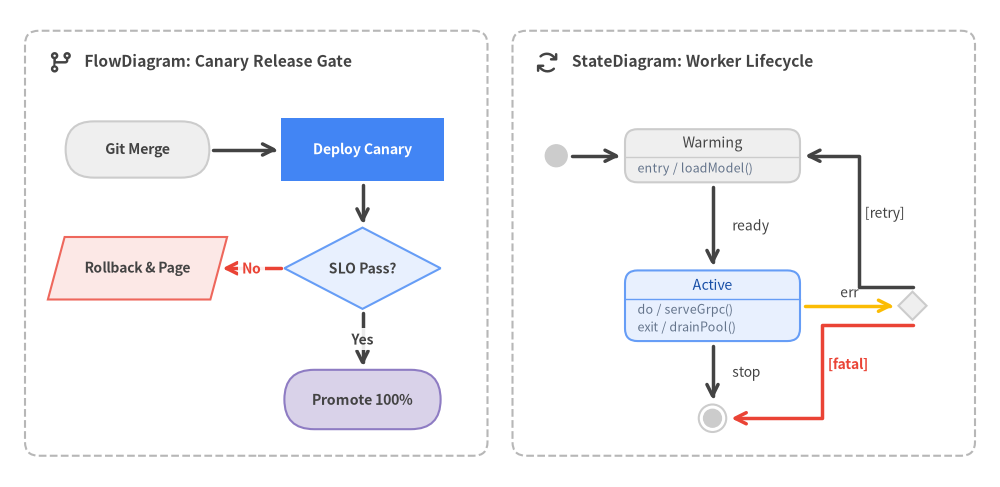
Source Code
from drawlib.canvas import save, setup
from drawlib.diagrams.flow import Data, Decision, End, FlowDiagram, Process, Start
from drawlib.diagrams.state import ChoiceState, FinalState, InitialState, State, StateDiagram
from drawlib.icons import phosphor
from drawlib.shapes import rectangle
from drawlib.styles import Styles
from drawlib.text import text
setup(width=160, height=78)
# Left Panel: FlowDiagram
rectangle((41, 39), width=74, height=68, style=Styles.MutedDashed.patch(shape_r=2.2))
phosphor.git_branch((9.5, 68.0), width=4.2, style=Styles.DarkBold)
text(
(13.5, 68.0),
"FlowDiagram: Canary Release Gate",
style=Styles.DarkBold.patch(text_size=11.2, halign="left"),
)
flow = FlowDiagram(
node_style=Styles.Neutral,
edge_style=Styles.DarkBold,
edge_text_style=Styles.DarkBold.patch(text_size=10.0),
)
f_start = flow.add(
Start("Git Merge", width=23, height=9.0, style=Styles.Neutral, text_style=Styles.DarkBold.patch(text_size=10.2)),
xy=(22, 54),
)
f_canary = flow.add(
Process(
"Deploy Canary",
width=26,
height=10.0,
style=Styles.PrimaryFlat,
text_style=Styles.WhiteBold.patch(text_size=10.2),
),
xy=(58, 54),
)
f_check = flow.add(
Decision(
"SLO Pass?",
width=25,
height=13.0,
style=Styles.PrimaryNeutral,
text_style=Styles.DarkBold.patch(text_size=10.0),
),
xy=(58, 35),
)
f_alert = flow.add(
Data(
"Rollback & Page",
width=26,
height=10.0,
style=Styles.DangerNeutral,
text_style=Styles.DarkBold.patch(text_size=10.0),
),
xy=(22, 35),
)
f_prod = flow.add(
End(
"Promote 100%",
width=25,
height=9.5,
style=Styles.SecondaryNeutral,
text_style=Styles.DarkBold.patch(text_size=10.2),
),
xy=(58, 14),
)
f_start.connect(f_canary, padding=0.6)
f_canary.connect(f_check, start_side="bottom", end_side="top", padding=0.6)
f_check.connect(
f_alert,
label="No",
start_side="left",
end_side="right",
style=Styles.DangerBold,
text_style=Styles.DangerBold.patch(text_size=10.0),
padding=0.6,
)
f_check.connect(f_prod, label="Yes", start_side="bottom", end_side="top", padding=0.6)
flow.draw()
# Right Panel: StateDiagram
rectangle((119, 39), width=74, height=68, style=Styles.MutedDashed.patch(shape_r=2.2))
phosphor.arrows_clockwise((87.5, 68.0), width=4.2, style=Styles.DarkBold)
text(
(91.5, 68.0),
"StateDiagram: Worker Lifecycle",
style=Styles.DarkBold.patch(text_size=11.2, halign="left"),
)
sd = StateDiagram(
node_style=Styles.Neutral.patch(text_size=10.2),
edge_style=Styles.DarkBold,
edge_text_style=Styles.Dark.patch(text_size=10.0),
)
s_init = sd.add(InitialState(), xy=(89, 53))
s_warm = sd.add(
State("Warming", entry="loadModel()", width=28, style=Styles.Neutral.patch(text_size=10.2)),
xy=(114, 53),
)
s_active = sd.add(
State(
"Active",
do="serveGrpc()",
exit="drainPool()",
width=28,
style=Styles.PrimaryNeutral.patch(text_size=10.2),
),
xy=(114, 29),
)
s_choice = sd.add(ChoiceState(), xy=(146, 29))
s_final = sd.add(FinalState(), xy=(114, 11))
sd.connect(s_init, s_warm, start_side="right", end_side="left", routing="direct", padding=0.8)
sd.connect(
s_warm,
s_active,
label=" ready",
start_side="bottom",
end_side="top",
routing="direct",
text_style=Styles.Dark.patch(text_size=10.0, halign="left"),
padding=0.8,
)
sd.connect(
s_active,
s_choice,
event="err",
start_side="right",
end_side="left",
routing="direct",
style=Styles.WarningBold,
padding=0.8,
)
sd.connect(
s_choice,
s_warm,
label=" [retry]",
start_side="top",
end_side="right",
routing="orthogonal",
text_style=Styles.Dark.patch(text_size=10.0, halign="left"),
padding=0.8,
)
sd.connect(
s_choice,
s_final,
label=" [fatal]",
start_side="bottom",
end_side="right",
routing="orthogonal",
style=Styles.DangerBold,
text_style=Styles.DangerBold.patch(text_size=10.0, halign="left"),
padding=0.8,
)
sd.connect(
s_active,
s_final,
label=" stop",
start_side="bottom",
end_side="top",
routing="direct",
text_style=Styles.Dark.patch(text_size=10.0, halign="left"),
padding=0.8,
)
sd.draw()
save()
10.4 Object-Oriented Models with ClassDiagram
ClassDiagram (drawlib.diagrams.class_diagram) builds three-compartment UML 2.0 class boxes (ClassNode) whose heights expand automatically to fit their stereotypes (stereotype="interface" or is_abstract=True), attributes, and methods:
- Fluent Member Registration: Chain
.add_attribute(name, type, visibility="-", default_value=..., is_static=...)and.add_method(name, params, return_type, visibility="+", is_abstract=...)with standard UML visibility markers ("+"public,"-"private,"#"protected,"~"package). - Six Canonical UML Relationships: Call
cd.connect(source, target, relationship_type=...)with"inheritance"(solid line, hollow triangle),"realization"(dashed line, hollow triangle),"composition"(solid diamond at owner),"aggregation"(hollow diamond),"dependency"(dashed open arrow), or"association"(solid link), complete withstart_multiplicity,end_multiplicity, andend_role.
from drawlib.canvas import save, setup
from drawlib.diagrams.class_diagram import ClassDiagram, ClassNode
from drawlib.fonts import FontRoboto, FontSourceCode
from drawlib.styles import Styles
setup(width=140, height=64)
cd = ClassDiagram(
node_style=Styles.Neutral.patch(text_font=FontSourceCode.ROBOTO_MONO, text_size=10.0),
header_style=Styles.PrimaryNeutral.patch(text_font=FontRoboto.ROBOTO_BOLD, text_size=10.8),
edge_style=Styles.DarkBold,
edge_text_style=Styles.Dark.patch(text_size=10.0),
)
repo = cd.add(
ClassNode("PaymentGateway", stereotype="interface", width=44, header_style=Styles.SecondaryNeutral)
.add_method("authorize", "amount: Decimal", "AuthReceipt"),
xy=(32, 42),
)
stripe_gw = cd.add(
ClassNode("StripeGateway", width=44)
.add_attribute("api_client", "HttpClient", visibility="-")
.add_method("authorize", "amount: Decimal", "AuthReceipt"),
xy=(32, 16),
)
invoice = cd.add(
ClassNode(
"Invoice",
width=40,
header_style=Styles.PrimaryFlat.patch(
text_color=Styles.WhiteBold.text_color,
text_font=FontRoboto.ROBOTO_BOLD,
text_size=10.8,
),
)
.add_attribute("id", "UUID", visibility="+")
.add_attribute("status", "InvoiceState", visibility="#")
.add_method("capture", "gw: PaymentGateway", "bool"),
xy=(106, 29),
)
cd.connect(stripe_gw, repo, "realization", start_side="top", end_side="bottom")
cd.connect(invoice, repo, "dependency", label="<<uses>>", start_side="left", end_side="right")
cd.draw(xy=(4.0, 4.0))
save("class_model.png")
10.5 Relational Schemas with ERDiagram
ERDiagram (drawlib.diagrams.er) renders Information Engineering (Crow's Foot) database schemas where each Entity formats its columns into three aligned sub-columns (PK/FK key badges, column name, and SQL type with (NN) non-null markers):
- Table Definition (
Entity): Chain.add_column(name, type, pk=False, fk=False, nullable=True)ontoEntity("table_name", width=38). - Crow's Foot Cardinalities & Row Anchoring: Connect tables via
erd.connect(parent, child, cardinality="1:*", start_column="id", end_column="user_id")(supporting"1:1","1:0..1","0..1:1","1:*","1:1..*","0..1:*", and"*:*"). Passingstart_columnandend_columnsnaps each foreign-key line directly to the exact vertical row of the referenced column.
from drawlib.canvas import save, setup
from drawlib.diagrams.er import Entity, ERDiagram
from drawlib.fonts import FontRoboto, FontSourceCode
from drawlib.styles import Styles
setup(width=136, height=52)
erd = ERDiagram(
node_style=Styles.Neutral.patch(text_font=FontSourceCode.ROBOTO_MONO, text_size=10.0),
header_style=Styles.PrimaryNeutral.patch(text_font=FontRoboto.ROBOTO_BOLD, text_size=10.8),
edge_style=Styles.DarkBold,
edge_text_style=Styles.Dark.patch(text_size=10.0),
)
tenants = erd.add(
Entity("tenants", width=40)
.add_column("id", "UUID", pk=True, nullable=False)
.add_column("slug", "VARCHAR(64)", nullable=False)
.add_column("created_at", "TIMESTAMPTZ", nullable=False),
xy=(30, 26),
)
api_keys = erd.add(
Entity(
"api_keys",
width=42,
header_style=Styles.PrimaryFlat.patch(
text_color=Styles.WhiteBold.text_color,
text_font=FontRoboto.ROBOTO_BOLD,
text_size=10.8,
),
)
.add_column("id", "UUID", pk=True, nullable=False)
.add_column("tenant_id", "UUID", fk=True, nullable=False)
.add_column("key_hash", "CHAR(64)", nullable=False)
.add_column("revoked_at", "TIMESTAMPTZ", nullable=True),
xy=(102, 26),
)
tenants.connect(
api_keys,
cardinality="1:*",
start_column="id",
end_column="tenant_id",
start_side="right",
end_side="left",
)
erd.draw(xy=(4.0, 4.0))
save("er_schema.png")
11. Automatic Graph Layout Solvers
When diagrams grow beyond a handful of hand-placed nodes, manually maintaining (x, y) coordinates becomes tedious—yet opaque black-box graph renderers strip away control over iconography, typography, and design tokens. drawlib.graph bridges both worlds as a pure deterministic coordinate calculator: declare nodes, clusters, and edges topologically, call layout = g.get_layout(...), and render the solved geometry using any Drawlib visual component.
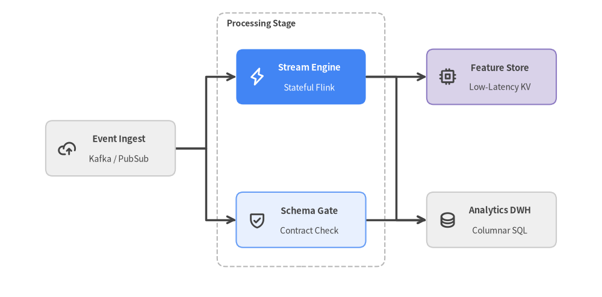
Source Code
from drawlib.canvas import save, setup
from drawlib.graph import LayerGraph
from drawlib.icons import phosphor
from drawlib.lines import lines
from drawlib.shapes import rectangle
from drawlib.styles import Styles
from drawlib.text import text
setup(width=158, height=78)
# Step 1: Declare DAG topology & compute deterministic coordinates
g = LayerGraph(direction="LR", default_node_width=34.0, default_node_height=14.5)
g.node("ingest", layer=0)
g.tier("processing", ["transform", "validate"], layer=1)
g.cluster("etl_stage", ["transform", "validate"], padding=5.0, header_height=4.5)
g.tier("serving", ["feature", "warehouse"], layer=2)
g.edge("ingest", "transform")
g.edge("ingest", "validate")
g.edge("transform", "feature")
g.edge("transform", "warehouse")
g.edge("validate", "warehouse")
layout = g.get_layout(margin=13.0)
# Step 2: Render cluster boundary, orthogonal routed edges, and styled cards
stage = layout["etl_stage"]
rectangle(stage.xy, width=stage.width, height=stage.height, style=Styles.MutedDashed.patch(shape_r=2.2))
text(
(stage.left + 2.5, stage.top - 2.8),
"Processing Stage",
style=Styles.DarkBold.patch(halign="left", text_size=10.2),
)
for edge in layout.edges:
lines(edge.points, arrow_head="->", style=Styles.DarkBold)
cards = [
("ingest", "Event Ingest", "Kafka / PubSub", Styles.Neutral, Styles.DarkBold, Styles.Dark, phosphor.cloud_arrow_up),
("transform", "Stream Engine", "Stateful Flink", Styles.PrimaryFlat, Styles.WhiteBold, Styles.White, phosphor.lightning),
("validate", "Schema Gate", "Contract Check", Styles.PrimaryNeutral, Styles.DarkBold, Styles.Dark, phosphor.shield_check),
("feature", "Feature Store", "Low-Latency KV", Styles.SecondaryNeutral, Styles.DarkBold, Styles.Dark, phosphor.cpu),
("warehouse", "Analytics DWH", "Columnar SQL", Styles.Neutral, Styles.DarkBold, Styles.Dark, phosphor.database),
]
for nid, title, sub, card_st, title_st, sub_st, icon_fn in cards:
n = layout[nid]
rectangle(n.xy, width=n.width, height=n.height, style=card_st.patch(shape_r=1.8))
icon_fn((n.x - 11.5, n.y), width=4.8, style=title_st)
text((n.x + 2.2, n.y + 2.4), title, style=title_st.patch(text_size=10.6))
text((n.x + 2.2, n.y - 2.8), sub, style=sub_st.patch(text_size=10.0))
save()
11.1 The Two-Step Layout Architecture (get_layout)
Unlike black-box layout engines, drawlib.graph has no .draw() method and stores zero visual styles. Instead, every graph follows a clean two-step separation between geometry calculation and visual rendering:
- Declare Topology & Solve (
layout = g.get_layout(...)): Register nodes (g.node("id", width=..., height=...)), directed edges (g.edge("src", "dst")), and optional grouping containers (g.cluster("id", nodes=[...], padding=..., header_height=...)). Callingg.get_layout(width=..., height=..., margin=10.0)returns an immutable-styleGraphLayoutdictionary (layout["id"]). - Render with Full Visual Control: Map the solved coordinates onto
ArchitectureDiagram,FlowDiagram,SmartArts, or primitiveshapes,icons, andlines:- Center Coordinates (
.xyand.local_xy): EveryNodeLayoutandClusterLayoutexposes.xy((cx, cy)global center) forrectangle(),circle(),FlowDiagramnodes, and standaloneArchitectureDiagramnodes, plus.local_xy(center relative to its parent cluster's bottom-left corner) for nodes nested inside anArchitectureDiagramNodeGroup. - Bottom-Left Corners (
.bottom_leftand.local_bottom_left): Ready to pass directly to bottom-left anchored components such as top-levelNodeGroup(..., xy=cl.bottom_left), nestedparent_grp.add(NodeGroup(...), xy=cl.local_bottom_left),SmartArts, andCharts. - Routed Edge Polylines (
edge.points,edge.src_port,edge.dst_port,edge.mid_xy): EachEdgeLayoutinlayout.edgesprovides boundary-clipped port coordinates and intermediate Manhattan waypoints ready forlines(edge.points, arrow_head="->"). - Inspecting & Freezing Coordinates (
print(layout)&layout.offset()): When transitioning from an automatic layout to fine-tuned manual code, callprint(layout)(str(layout)) to dump a human-readable coordinate table of every solved cluster, node.xy/.bottom_left, and edge path for copy-pasting into explicit Python code, or chainlayout.offset("node_id", dx=0.0, dy=-5.0)to nudge individual nodes while automatically recalculating attached edge ports.
- Center Coordinates (
11.2 Choosing Among the Five Graph Solvers
drawlib.graph provides five specialized layout engines inheriting from BaseGraph, each tailored to a distinct structural topology:
| Solver Class | Core Layout Algorithm | Topology Helpers | Ideal Architectural Use Cases |
|---|---|---|---|
ArchitectureGraph |
2-level macro/micro container packing + 5-zone compass placement | g.group(), g.cluster(..., parent=..., pos="left"|"center"|..., order=...) |
Multi-zone cloud VPCs, nested subnets, microservice ecosystems (ArchitectureDiagram) |
LayerGraph |
Sugiyama hierarchical DAG (cycle breaking, longest-path ranks, barycenter crossing minimization) | g.tier(name, nodes, layer=...), g.cluster(), direction="LR"|"TB" |
ETL/data lineage pipelines, CI/CD stages, build & package dependency DAGs |
TreeGraph |
Reingold-Tilford / Buchheim compact symmetrical subtree layout | g.child(parent, child_id), root=..., direction="TB"|"LR" |
Engineering org charts, ASTs, fault trees, strict single-parent taxonomies |
RadialGraph |
Concentric BFS rings + subtree-weighted angular sector allocation | g.spoke(parent, spoke_id, ring=...), hub=..., layout.ring_radii |
Event meshes, Pub/Sub hub-and-spoke topologies, API platform ecosystems |
GridGraph |
2D (row, col) matrix slot placement + corridor channel routing |
g.cell(id, row=..., col=...), g.cluster_row(), g.cluster_column(), edge_routing="smart" |
Tiered service catalogs, state matrices, uniform multi-column architectures |
11.3 Hierarchical Trees & Concentric Hub-and-Spoke Topologies
For strict hierarchies and central message brokers, TreeGraph and RadialGraph eliminate manual trigonometry and subtree width balancing:
TreeGraph: Enforces acyclic single-parent tree invariants (raising a helpfulValueErrorif a diamond DAG is accidentally passed), centers every parent cleanly over its children, and routes orthogonal step connectors (edge_routing="orthogonal") or straight branches ("straight").RadialGraph: Placeshubatring=0, distributes connected spokes across concentric rings (ring=1, 2, ...), and populateslayout.ring_radii: dict[int, float]so dashed orbital guide circles (circle(hub.xy, radius=r, style=Styles.MutedDashed)) align perfectly behind the spoke cards.
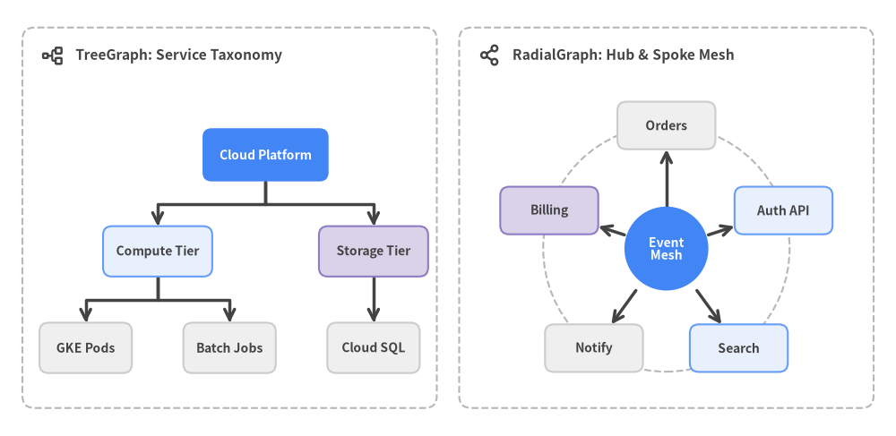
Source Code
from drawlib.canvas import save, setup
from drawlib.graph import RadialGraph, TreeGraph
from drawlib.icons import phosphor
from drawlib.lines import line, lines
from drawlib.shapes import circle, rectangle
from drawlib.styles import Styles
from drawlib.text import text
setup(width=160, height=78)
# Left Panel: TreeGraph (Rooted Taxonomy)
rectangle((41, 39), width=74, height=68, style=Styles.MutedDashed.patch(shape_r=2.2))
phosphor.tree_structure((9.5, 68.0), width=4.2, style=Styles.DarkBold)
text(
(13.5, 68.0),
"TreeGraph: Service Taxonomy",
style=Styles.DarkBold.patch(text_size=11.2, halign="left"),
)
tg = TreeGraph(root="root", direction="TB", sibling_sep=3.2, default_node_width=16.5, default_node_height=9.0)
tg.node("root", width=22.5, height=9.5)
tg.child("root", "compute", width=19.5, height=9.0)
tg.child("root", "data", width=19.5, height=9.0)
tg.child("compute", "k8s", width=16.5, height=9.0)
tg.child("compute", "jobs", width=16.5, height=9.0)
tg.child("data", "sql", width=16.5, height=9.0)
t_layout = tg.get_layout(width=60.0, height=52.0, margin=4.0)
ox1, oy1 = 11.0, 7.0
for e in t_layout.edges:
pts = [(px + ox1, py + oy1) for px, py in e.points]
lines(pts, arrow_head="->", style=Styles.DarkBold)
tree_nodes = [
("root", "Cloud Platform", Styles.PrimaryFlat, Styles.WhiteBold),
("compute", "Compute Tier", Styles.PrimaryNeutral, Styles.DarkBold),
("data", "Storage Tier", Styles.SecondaryNeutral, Styles.DarkBold),
("k8s", "GKE Pods", Styles.Neutral, Styles.DarkBold),
("jobs", "Batch Jobs", Styles.Neutral, Styles.DarkBold),
("sql", "Cloud SQL", Styles.Neutral, Styles.DarkBold),
]
for nid, label, st, txt_st in tree_nodes:
n = t_layout[nid]
rectangle(
(n.x + ox1, n.y + oy1),
width=n.width,
height=n.height,
style=st.patch(shape_r=1.6),
text=label,
text_style=txt_st.patch(text_size=10.0),
)
# Right Panel: RadialGraph (Hub-and-Spoke Mesh)
rectangle((119, 39), width=74, height=68, style=Styles.MutedDashed.patch(shape_r=2.2))
phosphor.share_network((87.5, 68.0), width=4.2, style=Styles.DarkBold)
text(
(91.5, 68.0),
"RadialGraph: Hub & Spoke Mesh",
style=Styles.DarkBold.patch(text_size=11.2, halign="left"),
)
rg = RadialGraph(
hub="hub",
center=(35.0, 26.5),
radius_step=22.0,
start_angle=18.0,
default_node_width=17.5,
default_node_height=8.5,
)
rg.node("hub", width=15.0, height=15.0)
for sid in ["auth", "orders", "billing", "notify", "search"]:
rg.spoke("hub", sid)
r_layout = rg.get_layout(width=70.0, height=54.0, margin=4.0)
ox2, oy2 = 84.0, 7.0
hub_n = r_layout["hub"]
hub_xy = (hub_n.x + ox2, hub_n.y + oy2)
for r in r_layout.ring_radii.values():
circle(hub_xy, radius=r, style=Styles.MutedDashed)
for e in r_layout.edges:
sp = (e.src_port[0] + ox2, e.src_port[1] + oy2)
dp = (e.dst_port[0] + ox2, e.dst_port[1] + oy2)
line(sp, dp, arrow_head="->", style=Styles.DarkBold)
circle(
hub_xy,
radius=hub_n.width / 2,
style=Styles.PrimaryFlat,
text="Event\nMesh",
text_style=Styles.WhiteBold.patch(text_size=10.0),
)
spokes = [
("auth", "Auth API", Styles.PrimaryNeutral),
("orders", "Orders", Styles.Neutral),
("billing", "Billing", Styles.SecondaryNeutral),
("notify", "Notify", Styles.Neutral),
("search", "Search", Styles.PrimaryNeutral),
]
for sid, label, st in spokes:
n = r_layout[sid]
rectangle(
(n.x + ox2, n.y + oy2),
width=n.width,
height=n.height,
style=st.patch(shape_r=1.6),
text=label,
text_style=Styles.DarkBold.patch(text_size=10.0),
)
save()
11.4 Clustered Cloud Topologies & Matrix Grids
When building multi-zone cloud architectures or tabular service catalogs, ArchitectureGraph and GridGraph compute nested container boxes alongside node placements:
ArchitectureGraph+ArchitectureDiagramSynergy: Pin macro zones withpos="left" | "center" | "right" | "top" | "bottom"and sequence nested subnets withparent="vpc", order=1, 2. Feed top-level clusters viaxy=layout["vpc"].bottom_left, nested subnets viaxy=layout["app"].local_bottom_left, and enclosed nodes viaxy=layout["api"].local_xy—matching the exactpaddingand(width, height)values across both steps.GridGraphSmart Corridor Routing: Place nodes into(row, col)matrix cells withg.cell("id", row=0, col=1), wrap rows or columns in dashed bands viag.cluster_row(0, "fe_tier")org.cluster_column(col, id), and rely onedge_routing="smart"to route non-adjacent connections cleanly through inter-row and inter-column corridors without crossing intermediate cards.
from drawlib.canvas import save, setup
from drawlib.diagrams.architecture import ArchitectureDiagram, GcpIcon, Node, NodeGroup, PhosphorIcon
from drawlib.graph import ArchitectureGraph
from drawlib.styles import Styles
setup(width=168, height=78)
# Step 1: Solve nested VPC & subnet coordinates with ArchitectureGraph
g = ArchitectureGraph(direction="LR", container_sep=14.0, default_node_width=24.0, default_node_height=14.0)
g.cluster("edge", ["client"], pos="left", padding=5.0)
g.group("vpc", pos="center", padding=5.0)
g.cluster("app_tier", ["api", "worker"], parent="vpc", order=1, padding=5.0)
g.cluster("data_tier", ["db"], parent="vpc", order=2, padding=5.0)
g.edge("client", "api")
g.edge("api", "worker")
g.edge("worker", "db")
layout = g.get_layout(margin=8.0)
# Step 2: Render using .bottom_left, .local_bottom_left, and .local_xy
d = ArchitectureDiagram(
node_style=Styles.DarkBold,
node_text_style=Styles.DarkBold.patch(text_size=10.5),
edge_style=Styles.DarkBold,
edge_text_style=Styles.Dark.patch(text_size=10.0),
node_card_style=Styles.Neutral,
)
edge_grp = d.add(NodeGroup(title="External", padding=5.0, style=Styles.MutedDashed), xy=layout["edge"].bottom_left)
vpc_grp = d.add(NodeGroup(title="Production VPC", padding=5.0, style=Styles.MutedDashed), xy=layout["vpc"].bottom_left)
app_grp = vpc_grp.add(NodeGroup(title="Compute", padding=5.0, style=Styles.PrimaryNeutral), xy=layout["app_tier"].local_bottom_left)
data_grp = vpc_grp.add(NodeGroup(title="Storage", padding=5.0, style=Styles.SecondaryNeutral), xy=layout["data_tier"].local_bottom_left)
client = edge_grp.add(Node("Client", width=24, height=14, icon=PhosphorIcon.DEVICES), xy=layout["client"].local_xy)
api = app_grp.add(
Node(
"API Gateway",
width=24,
height=14,
icon=GcpIcon.CLOUD_API_GATEWAY,
style=Styles.WhiteBold,
text_style=Styles.WhiteBold.patch(text_size=10.5),
card_style=Styles.PrimaryFlat,
),
xy=layout["api"].local_xy,
)
worker = app_grp.add(Node("Worker", width=24, height=14, icon=GcpIcon.CLOUD_RUN), xy=layout["worker"].local_xy)
db = data_grp.add(Node("Cloud SQL", width=24, height=14, icon=GcpIcon.CLOUD_SQL), xy=layout["db"].local_xy)
d.connect(client, api, label="HTTPS")
d.connect(api, worker)
d.connect(worker, db)
d.draw()
save("arch_graph_vpc.png")
12. Multi-Frame Animations & 16:9 Slide Decks
Static diagrams capture architecture snapshots, while time-stepped animations and widescreen presentations explain how systems evolve in motion. Drawlib natively compiles multi-frame APNG (.png), Animated WebP (.webp), and dither-free Animated GIF (.gif) assets via drawlib.anim, and transforms Markdown sources into interactive 16:9 HTML decks, vector PDFs, and editable PowerPoint (.pptx) presentations via drawlib.slide.
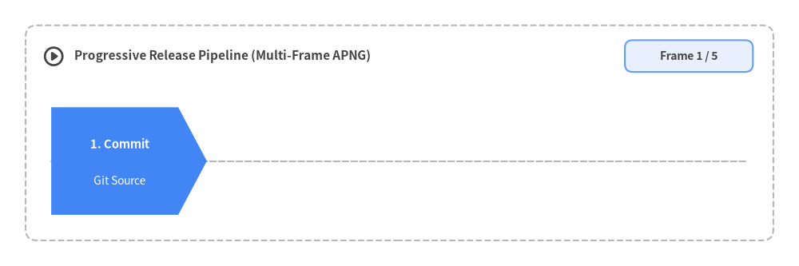
Source Code
from drawlib.anim import Animation
from drawlib.canvas import save, setup
from drawlib.icons import phosphor
from drawlib.lines import line
from drawlib.shapes import rectangle
from drawlib.smartarts import ChevronProcess
from drawlib.styles import Styles
from drawlib.text import text
setup(width=156, height=52)
anim = Animation(fps=1.5, loop=0)
stages = [
("1. Commit", "Git Source"),
("2. Lint", "Static Audit"),
("3. Render", "Grid Check"),
("4. Build", "HTML & PDF"),
("5. Publish", "Live Docs"),
]
for step in range(len(stages)):
is_last = step == len(stages) - 1
with anim.frame(duration=2.5 if is_last else 0.75):
rectangle((78, 26), width=146, height=42, style=Styles.MutedDashed.patch(shape_r=2.2))
phosphor.play_circle((10.5, 41.0), width=4.4, style=Styles.DarkBold)
text(
(14.5, 41.0),
"Progressive Release Pipeline (Multi-Frame APNG)",
style=Styles.DarkBold.patch(text_size=11.0, halign="left"),
)
rectangle(
(134.5, 41.0),
width=25.0,
height=6.2,
style=Styles.PrimaryNeutral.patch(shape_r=1.5),
text=f"Frame {step + 1} / {len(stages)}",
text_style=Styles.DarkBold.patch(text_size=10.0),
)
line((10, 20.5), (146, 20.5), style=Styles.MutedDashed)
proc = ChevronProcess(
style=Styles.Neutral,
text_style=Styles.DarkBold.patch(text_size=10.6),
description_style=Styles.Dark.patch(text_size=10.0),
corner_angle=62.0,
spacing=1.6,
flat_left_end=True,
)
for i, (title, desc) in enumerate(stages):
is_active = i == step
c_style = Styles.PrimaryFlat if is_active else (Styles.PrimaryNeutral if i < step else Styles.Neutral)
t_style = Styles.WhiteBold.patch(text_size=10.6) if is_active else Styles.DarkBold.patch(text_size=10.6)
d_style = Styles.White.patch(text_size=10.0) if is_active else Styles.Dark.patch(text_size=10.0)
proc.add(
title,
description=desc,
style=c_style,
text_style=t_style,
description_style=d_style,
show=(i <= step),
)
proc.draw(xy=(10.0, 10.0), width=136.0, height=21.0)
save()
12.1 Multi-Frame Animations with drawlib.anim
Canvas Lifecycle & The Animation API
Import Animation from drawlib.anim, call setup(width=..., height=...) once before the frame loop, and wrap each frame's drawing calls inside with anim.frame(duration=..., clear=True)::
- Exact Constructor Signature:
anim = Animation(fps=10.0, loop=0)(orframe_rate=10.0as an alias forfps;loop=0plays in a continuous infinite loop). - No
file=Argument onAnimation:Animationregisters automatically with the active canvas and never accepts afile=...parameter. In standalone scripts, pass the destination path tosave("out.png"),save("out.webp"), orsave("out.gif"); inside Markdown```drawlibblocks, setfile=name.png(or.webp/.gif) on the fence and end the code block withsave(). - Per-Frame Redraw (
clear=True) & Final Hold: By default,with anim.frame(duration=None, clear=True):clears the canvas cleanly before each frame so elements can move or change highlight styles without ghosting (clear=Falseis available for purely additive primitive sketches). Give the final frame an explicit hold (duration=2.0–3.0) so readers can absorb the completed diagram before playback loops.
| Output Format | Extension | Encoding & Visual Characteristics | Best Target Platforms |
|---|---|---|---|
| APNG | .png / .apng |
Lossless 24-bit RGB + 8-bit alpha; renders natively in browsers and gracefully falls back to a crisp static frame in PDFs | HTML docs (site / doc), interactive slides, printable whitepapers |
| Animated WebP | .webp |
Lossless 24-bit RGB + 8-bit alpha at ~50% smaller file size (minimize_size=True) |
High-traffic web documentation portals, mobile web apps |
| Animated GIF | .gif |
v0.3.10 dither-free 256-color global Median Cut quantization (Image.Dither.NONE)—zero grain noise on flat Neutral cards |
GitHub READMEs, Slack, Notion, Confluence, X/Twitter, legacy viewers |
Progressive Component Idioms (show=False, draw_ratio & Interpolation)
Every high-level Drawlib module is engineered for jitter-free frame progression:
- Slot-Preserving Reveals (
show=False): Passingshow=FalsetoSmartArtsitems (ChevronProcess,Table,GridLayout,Cycle) or togglingnode.show = FalseonDiagrams(FlowDiagram,ArchitectureDiagram,SequenceDiagram) hides the element and its connected edges while keeping all column widths, coordinates, and spacing 100% locked across frames. - Smooth Chart Growth (
draw_ratio): Every chart series/slice/task (LineChart,BarChart,AreaChart,PieChart,GanttChart) exposess.draw_ratio(0.0to1.0) ands.draw_direction("bottom_to_top"or"left_to_right") with lockedmin_value/max_valueaxes. - Motion & Color Interpolation: Compute smooth trajectories (including eased ratios such as $t^2(3 - 2t)$) or waypoint steps with
drawlib.math.get_intermediate_points()/get_intermediate_path_points(), and fade card fills viadrawlib.styles.get_intermediate_colors(c1, c2, num=..., include_ends=True).
from drawlib.anim import Animation
from drawlib.canvas import save, setup
from drawlib.charts.bar import BarChart
from drawlib.styles import Styles
setup(width=110, height=64)
anim = Animation(fps=10.0, loop=0)
chart = BarChart(
categories=["Q1", "Q2", "Q3", "Q4"],
axis_line_style=Styles.MutedDashed,
axis_text_style=Styles.Dark.patch(text_size=10.0),
grid_style=Styles.MutedThin,
width=86,
height=44,
title="Quarterly API Throughput (kRPS)",
title_style=Styles.DarkBold.patch(text_size=12.5),
)
chart.configure_y_axis(min_value=0, max_value=120)
series = chart.add_series("Throughput", [42, 68, 94, 112], style=Styles.PrimaryFlat)
steps = 6
for i in range(1, steps + 1):
t = i / steps
eased = t * t * (3.0 - 2.0 * t) # Smoothstep easing (0 -> 1)
series.draw_ratio = eased
with anim.frame(duration=2.2 if i == steps else 0.12):
chart.draw(xy=(12, 8))
save("throughput_growth.gif")
12.2 16:9 Slide Decks & PowerPoint Export (drawlib.slide)
Scaffolding a presentation project with uv run drawlib init project slide pitch -l en,ja -s google turns numbered Markdown files (pitch_src/<lang>/*.md) into a 1920×1080 (16:9) multi-target presentation suite:
- Dual-Layer Stage & Speaker Notes (
::: block&::: note):::: block xy=(x, y) width=W height=H: Places visual-first cards, 2-column splits,---horizontal rules, and embedded```drawlibdiagrams at exact top-left pixel coordinates on the1920×1080stage (matching diagram aspect ratios viasetup(width=W/10, height=H/10)).::: note: Stores full presenter scripts and technical deep dives off-stage—rendered in synchronized Dual-Window Presenter View (?presenter=1,P/Skey) and exported directly into PowerPoint speaker notes while keeping the audience slide clean.
- Runtime Slide Context & Progressive Builds (
drawlib.slide):from drawlib.slide import current_slide, draw_page_number, draw_section_headerprovidescurrent_slide.index,current_slide.total, andcurrent_slide.text("4 / 12"), enabling dynamic footers, progressive multi-slide builds, and full-bleed chapter dividers (variant="split" | "centered" | "banner" | "minimal").- Interactive
<canvas>animations inside slides can be stepped live on click orAkeypress via fence attributes (anim_trigger=click anim_loop=once anim_pause=(1, 3)).
::: block xy=(1700, 1010) width=140 height=30
```drawlib file=page.svg
from drawlib.slide import draw_page_number
draw_page_number()
```
:::
::: block xy=(80, 40) width=1760 height=60
# Zero-Trust API Gateway Rollout
:::
::: block xy=(80, 140) width=720 height=820
## Key Rollout Milestones
- **Edge mTLS**: Mutual certificate pinning
- **JWT Cache**: Sub-millisecond Redis lookup
- **Canary Gate**: Automated SLO rollback
---
*Active Deck Position: Slide 3*
:::
::: block xy=(840, 140) width=1000 height=820
```drawlib file=gateway_stage.svg
from drawlib.canvas import clear, save, setup
from drawlib.shapes import rectangle
from drawlib.slide import current_slide
from drawlib.styles import Styles
clear()
setup(width=100, height=82)
rectangle(
(50, 41),
width=76,
height=34,
style=Styles.PrimaryFlat.patch(shape_r=2.5),
text=f"Gateway Topology ({current_slide.text})",
text_style=Styles.WhiteBold.patch(text_size=14.5),
)
save()
```
:::
::: note
Walk through the three milestones on the left, then highlight how `current_slide` binds slide numbering automatically during HTML, PDF, and `.pptx` compilation.
:::
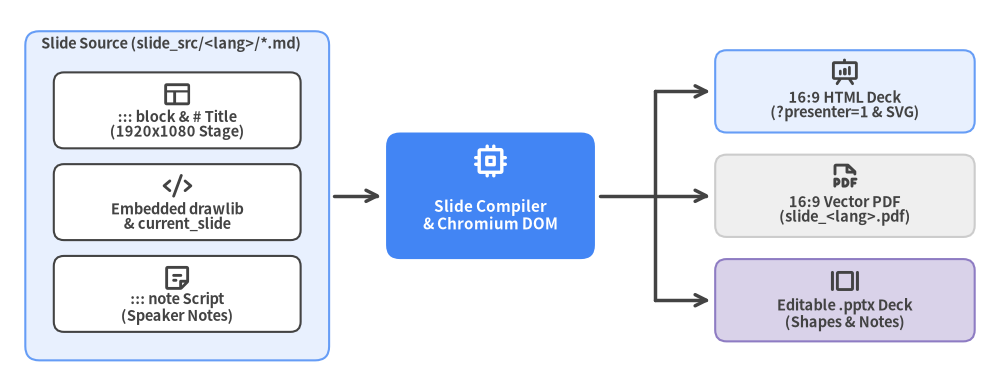
Source Code
from drawlib.canvas import save, setup
from drawlib.diagrams.architecture import ArchitectureDiagram, Node, NodeGroup, PhosphorIcon
from drawlib.styles import Styles
setup(width=158, height=62)
d = ArchitectureDiagram(
node_style=Styles.DarkBold,
node_text_style=Styles.DarkBold.patch(text_size=10.5),
edge_style=Styles.DarkBold,
edge_text_style=Styles.DarkBold.patch(text_size=10.0),
node_card_style=Styles.Neutral,
)
src = d.add(
NodeGroup(
title="Slide Source (slide_src/<lang>/*.md)",
width=48.0,
height=52.0,
style=Styles.PrimaryNeutral.patch(shape_r=2.2),
text_style=Styles.DarkBold.patch(text_size=10.5, halign="left"),
),
xy=(2.0, 3.0),
)
b_stage = src.add(
Node(
"::: block & # Title\n(1920x1080 Stage)",
width=39.0,
height=12.0,
icon=PhosphorIcon.LAYOUT,
icon_size=4.8,
card_style=Styles.White.patch(shape_r=1.6),
),
xy=(24.0, 39.5),
)
b_code = src.add(
Node(
"Embedded drawlib\n& current_slide",
width=39.0,
height=12.0,
icon=PhosphorIcon.CODE,
icon_size=4.8,
card_style=Styles.White.patch(shape_r=1.6),
),
xy=(24.0, 25.0),
)
b_note = src.add(
Node(
"::: note Script\n(Speaker Notes)",
width=39.0,
height=12.0,
icon=PhosphorIcon.NOTE,
icon_size=4.8,
card_style=Styles.White.patch(shape_r=1.6),
),
xy=(24.0, 10.5),
)
compiler = d.add(
Node(
"Slide Compiler\n& Chromium DOM",
width=33.0,
height=20.0,
icon=PhosphorIcon.CPU,
icon_size=5.6,
style=Styles.WhiteBold,
text_style=Styles.WhiteBold.patch(text_size=11.0),
card_style=Styles.PrimaryFlat.patch(shape_r=2.2),
),
xy=(75.5, 29.0),
)
out_html = d.add(
Node(
"16:9 HTML Deck\n(?presenter=1 & SVG)",
width=41.0,
height=13.0,
icon=PhosphorIcon.PRESENTATION_CHART,
icon_size=4.8,
card_style=Styles.PrimaryNeutral.patch(shape_r=1.8),
),
xy=(131.5, 45.5),
)
out_pdf = d.add(
Node(
"16:9 Vector PDF\n(slide_<lang>.pdf)",
width=41.0,
height=13.0,
icon=PhosphorIcon.FILE_PDF,
icon_size=4.8,
card_style=Styles.Neutral.patch(shape_r=1.8),
),
xy=(131.5, 29.0),
)
out_pptx = d.add(
Node(
"Editable .pptx Deck\n(Shapes & Notes)",
width=41.0,
height=13.0,
icon=PhosphorIcon.SLIDESHOW,
icon_size=4.8,
card_style=Styles.SecondaryNeutral.patch(shape_r=1.8),
),
xy=(131.5, 12.5),
)
d.connect(src, compiler, routing="direct", padding=0.8)
j_mid = d.junction((101.5, 29.0))
j_top = d.junction((101.5, 45.5))
j_bot = d.junction((101.5, 12.5))
d.connect(compiler, j_mid, arrow="-", routing="direct", padding=(0.8, 0.0))
d.connect(j_mid, j_top, arrow="-", routing="direct")
d.connect(j_mid, j_bot, arrow="-", routing="direct")
d.connect(j_top, out_html, arrow="->", routing="direct", padding=(0.0, 0.8))
d.connect(j_mid, out_pdf, arrow="->", routing="direct", padding=(0.0, 0.8))
d.connect(j_bot, out_pptx, arrow="->", routing="direct", padding=(0.0, 0.8))
d.draw(xy=(2.0, 2.0))
save()
Scaffolding & Building HTML, PDF, and Editable PowerPoint (.pptx)
Every scaffolded slide project includes ready-to-run build scripts for interactive HTML, 16:9 vector PDF, and native Microsoft PowerPoint export (drawlib build pptx translates ::: block cards, text boxes, lists, tables, and ::: note speaker notes into editable 960×540 pt PowerPoint elements while embedding diagrams at 240 DPI):
# 1. Scaffold a bilingual 16:9 slide deck project
uv run drawlib init project slide pitch -l en,ja -s google
# 2. Compile interactive 16:9 HTML deck + 1920x1080 vector PDF + standalone assets
./pitch_src/build.sh
# 3. Export native editable PowerPoint decks (pitch_en.pptx & pitch_ja.pptx)
./pitch_src/build_pptx.sh
# Equivalent CLI command:
uv run drawlib build pptx pitch_src/ -o pitch.pptx -s pitch_src/styles.py -u pitch_src/utils.py
13. Documentation as Code & The 5 Project Archetypes
Writing standalone diagrams is only half the story. In real engineering organizations, architecture visuals live inside multi-chapter design documents, searchable API portals, RFC whitepapers, and executive slide decks that must stay synchronized across languages and output formats.
Drawlib elevates Illustration as Code into Illustrated Documentation as Code: a unified project compiler where pure-Python diagrams and Markdown prose live side-by-side in Git and compile deterministically into static HTML websites, A4 vector PDFs, editable Microsoft Word (.docx) specifications, 16:9 HTML/PDF slide decks, native PowerPoint (.pptx) files, and animated image suites.
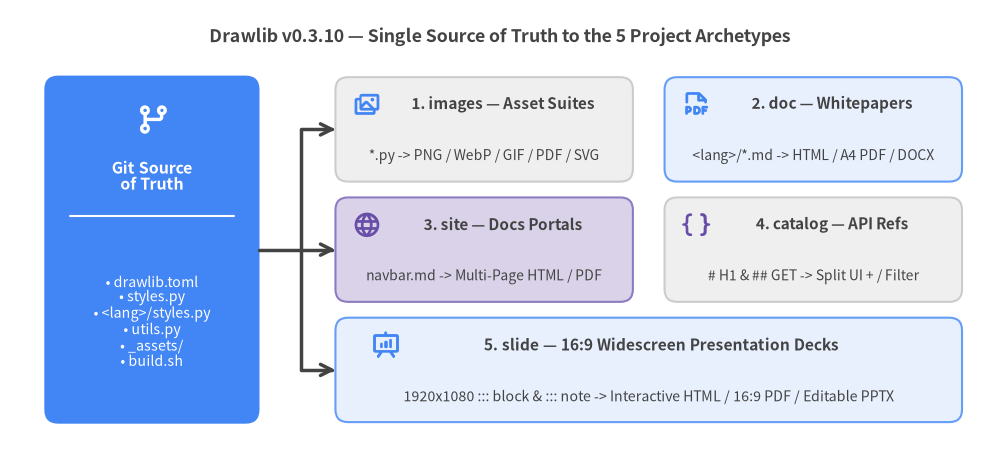
Source Code
from drawlib.canvas import save, setup
from drawlib.icons import phosphor
from drawlib.lines import line, lines
from drawlib.shapes import rectangle
from drawlib.styles import Styles
from drawlib.text import text
setup(width=158, height=74)
text(
(79.0, 68.2),
"Drawlib v0.3.10 — Single Source of Truth to the 5 Project Archetypes",
style=Styles.DarkBold.patch(text_size=12.8),
)
# Left Focal Hub (1 PrimaryFlat hero node)
rectangle((24.0, 34.5), width=34.0, height=55.0, style=Styles.PrimaryFlat.patch(shape_r=2.2))
phosphor.git_branch((24.0, 55.0), width=5.6, style=Styles.WhiteBold)
text((24.0, 46.2), "Git Source\nof Truth", style=Styles.WhiteBold.patch(text_size=11.5))
line((11.0, 39.8), (37.0, 39.8), style=Styles.White)
text(
(24.0, 23.2),
"• drawlib.toml\n• styles.py\n• <lang>/styles.py\n• utils.py\n• _assets/\n• build.sh",
style=Styles.White.patch(text_size=10.2),
)
# Orthogonal fan-out spine to the 3 rows
line((41.0, 34.5), (47.5, 34.5), style=Styles.DarkBold)
lines([(47.5, 34.5), (47.5, 53.5), (53.0, 53.5)], arrow_head="->", style=Styles.DarkBold)
line((47.5, 34.5), (53.0, 34.5), arrow_head="->", style=Styles.DarkBold)
lines([(47.5, 34.5), (47.5, 15.5), (53.0, 15.5)], arrow_head="->", style=Styles.DarkBold)
# Row 1: images & doc (Neutral-grounded cards)
rectangle((76.5, 53.5), width=47.0, height=16.5, style=Styles.Neutral.patch(shape_r=2.0))
phosphor.images((58.0, 57.5), width=4.6, style=Styles.PrimaryBold)
text((79.5, 57.5), "1. images — Asset Suites", style=Styles.DarkBold.patch(text_size=11.0))
text((76.5, 49.3), "*.py -> PNG / WebP / GIF / PDF / SVG", style=Styles.Dark.patch(text_size=10.0))
rectangle((128.5, 53.5), width=47.0, height=16.5, style=Styles.PrimaryNeutral.patch(shape_r=2.0))
phosphor.file_pdf((110.0, 57.5), width=4.6, style=Styles.PrimaryBold)
text((131.5, 57.5), "2. doc — Whitepapers", style=Styles.DarkBold.patch(text_size=11.0))
text((128.5, 49.3), "<lang>/*.md -> HTML / A4 PDF / DOCX", style=Styles.Dark.patch(text_size=10.0))
# Row 2: site & catalog
rectangle((76.5, 34.5), width=47.0, height=16.5, style=Styles.SecondaryNeutral.patch(shape_r=2.0))
phosphor.globe((58.0, 38.5), width=4.6, style=Styles.SecondaryBold)
text((79.5, 38.5), "3. site — Docs Portals", style=Styles.DarkBold.patch(text_size=11.0))
text((76.5, 30.3), "navbar.md -> Multi-Page HTML / PDF", style=Styles.Dark.patch(text_size=10.0))
rectangle((128.5, 34.5), width=47.0, height=16.5, style=Styles.Neutral.patch(shape_r=2.0))
phosphor.brackets_curly((110.0, 38.5), width=4.6, style=Styles.SecondaryBold)
text((131.5, 38.5), "4. catalog — API Refs", style=Styles.DarkBold.patch(text_size=11.0))
text((128.5, 30.3), "# H1 & ## GET -> Split UI + / Filter", style=Styles.Dark.patch(text_size=10.0))
# Row 3: slide (Full-span widescreen card)
rectangle((102.5, 15.5), width=99.0, height=16.5, style=Styles.PrimaryNeutral.patch(shape_r=2.0))
phosphor.presentation_chart((61.0, 19.5), width=4.8, style=Styles.PrimaryBold)
text((104.5, 19.5), "5. slide — 16:9 Widescreen Presentation Decks", style=Styles.DarkBold.patch(text_size=11.2))
text(
(102.5, 11.3),
"1920x1080 ::: block & ::: note -> Interactive HTML / 16:9 PDF / Editable PPTX",
style=Styles.Dark.patch(text_size=10.2),
)
save()
13.1 The Project-First Rule (drawlib init project)
When starting any visual or documentation task—even a single architecture figure—always follow Drawlib's Project-First Rule: scaffold a structured <target>_src/ workspace with drawlib init project rather than scattering ad-hoc standalone .py scripts or hand-crafting folders.
Scaffolding a project up front establishes five engineering guarantees out of the box:
- Canonical Manifest (
drawlib.toml): Declares the project archetype (images,doc,site,catalog, orslide), visual preset (default,google,monochrome), multi-language[i18n]routing, and[seo]metadata in one declarative file. - Centralized Theme & CJK Font Safety (
styles.py&<lang>/styles.py): Passing-l jaor-l en,jaautomatically configuresStylesand regional font overrides (FontJapanese,FontChinese,FontKorean) so every diagram shares one palette without repeating font boilerplate. - DRY Component Macros (
utils.py): Top-level helper functions defined inutils.pybecome importable everywhere viafrom drawlib.utils import <helper>, keeping recurring node cards and connectors consistent across dozens of chapters. - Portable Static Assets (
_assets/): Provisions_assets/favicon.pngand provides a root directory for brand logos and custom.ttffonts that Drawlib resolves and SHA-256 hashes automatically. - Reproducible One-Command Builds (
build.sh&build_*.sh): Generates executable build scripts (build.sh,build_html.sh,build_pdf.sh,build_docx.sh,build_pptx.sh,serve.sh) while strictly separating<target>_src/(your editable source of truth) from read-only compiled outputs.
Use drawlib init project <type> [target] -l <langs> -s <style> to initialize any of the five archetypes (and delete starter sample*.py files once you add your own diagrams):
# Inspect all 5 starter project templates
uv run drawlib init project list
# 1. Standalone Python diagram & animation repository (images_src/)
uv run drawlib init project images diagrams -l en -s google
# 2. Bilingual linear technical whitepaper -> HTML + A4 PDF + MS Word (.docx)
uv run drawlib init project doc whitepaper -l en,ja -s google
# 3. Multi-page documentation portal with sidebar navigation (docs_src/)
uv run drawlib init project site docs -l en,ja -s default
# 4. Searchable API / CLI / schema reference dictionary (catalog_src/)
uv run drawlib init project catalog api_ref -l en,ja -s google
# 5. Bilingual 16:9 presentation slide deck -> HTML + PDF + PowerPoint (.pptx)
uv run drawlib init project slide pitch -l en,ja -s google
13.2 Embedded Markdown Diagrams & 720pt Typography Parity
Inside doc, site, catalog, and slide Markdown files (<target>_src/<lang>/**/*.md), Python illustrations are embedded directly inline using fenced drawlib blocks. During compilation, Drawlib executes each block in an isolated canvas state, caches the rendered output in .drawlib/cache.db, and replaces the fence with responsive figure markup.
```drawlib align=center code=fold file=gateway_flow.png caption="Figure 13.3: Regional API Gateway Topology"
from drawlib.canvas import save, setup
from drawlib.lines import line
from drawlib.shapes import rectangle
from drawlib.styles import Styles
setup(width=136, height=44)
rectangle((28, 22), width=32, height=18, style=Styles.Neutral, text="Client App")
rectangle(
(68, 22),
width=32,
height=18,
style=Styles.PrimaryFlat,
text="API Gateway",
text_style=Styles.WhiteBold,
)
rectangle((108, 22), width=32, height=18, style=Styles.SecondaryNeutral, text="Auth Service")
line((44, 22), (52, 22), arrow_head="->", style=Styles.DarkBold)
line((84, 22), (92, 22), arrow_head="->", style=Styles.DarkBold)
save()
```
Every embedded drawlib fence supports four header attributes that govern file naming, layout, and code disclosure:
| Fence Attribute | Supported Values | Recommended Usage |
|---|---|---|
file= |
<stem>.png / .webp / .svg |
Mandatory. Assigns a deterministic filename (file=arch.png for shared diagrams, or file=arch_ja.png for localized CJK diagrams) so drawlib show <md> <file> can target it by name. |
caption= |
"Figure X.Y: ..." |
Mandatory on docs. Renders an accessible <figcaption> in HTML/PDF and figure caption paragraph in .docx. |
align= |
center | left | right |
Controls horizontal figure alignment inside the document column (align=center standard). |
code= |
hide | fold | show |
code=hide (default) emits only the figure for clean whitepapers; code=fold renders the figure first with a collapsible <details> code drawer (mandatory for Top Hero diagrams at Lines 5–15); code=show displays syntax-highlighted Python above the figure for API tutorials. |
Why Omitting Pixel width= Caps Preserves 720pt Typography
Drawlib's rendering engine normalizes every canvas (setup(width=W, height=H)) to a physical width of 10 inches = 720 points regardless of whether W=100 or W=160. When that image is displayed inside an HTML column of width $W_{\text{HTML}}$ (typically ~880px–960px), an in-diagram text_size (in points) appears on screen at:
$$\text{Rendered CSS Font Size (px)} = \text{text_size} \times \frac{W_{\text{HTML}}}{720}$$
- Without pixel caps (
100%column width,~900px):text_size=11.0renders at11.0 × 900 / 720 = 13.75px, harmonizing naturally with16pxHTML body prose and A4 PDF text. - With hardcoded narrow caps (
width=500pxor600px— Forbidden): Shrinking the image container to500pxcrushestext_size=11.0down to7.6px, making labels unreadable even when the standalone PNG looked fine in isolation. Always omit pixelwidth=caps on fences and keeptext_size >= 10.0.
13.3 Comparing the 5 Project Archetypes
Drawlib v0.3.10 provides five purpose-built project archetypes. All four Markdown-driven archetypes (doc, site, catalog, slide) use the exact same <target>_src/<lang>/ locale directory convention so teams can add new languages at any time without moving existing files.
| Archetype | Source Layout | Navigation & Structure | Compiled Deliverables | Primary Engineering Use Cases |
|---|---|---|---|---|
images |
images_src/*.py |
Flat or nested Python scripts; AST duplicate output check | .png (incl. APNG), .webp, .gif, .pdf, .svg |
Architecture asset libraries, README figures, CI-generated charts, multi-frame protocol animations |
doc |
doc_src/<lang>/*.md (00_cover.md, 01_*...) |
Lexicographical chapter merge + --generate-index TOC (no navbar.md) |
Single-page HTML book, A4 vector PDF, editable Word .docx, GitHub MD |
Engineering RFCs, architecture whitepapers, onboarding manuals, printable specs & stakeholder redlining |
site |
docs_src/<lang>/**/*.md + <lang>/navbar.md |
Persistent multi-section sidebar (navbar.md), dark mode, search |
Multi-page HTML portal, per-page PDF, GitHub MD, llms.txt |
Product documentation portals, developer guides, multi-team architecture wikis |
catalog |
catalog_src/<lang>/*.md (auto-indexed) |
Sticky 2-column split/outline UI from # H1 & ## H2 + instant / live filter |
Interactive 2-column HTML dictionary, GitHub MD, llms.txt |
REST/gRPC API references, CLI flag manuals, event/metric catalogs, database schema dictionaries |
slide |
slide_src/<lang>/*.md (01_title.md...) |
1920×1080 ::: block stage + ::: note speaker script + Presenter View |
16:9 interactive HTML deck, 16:9 vector PDF, editable PowerPoint .pptx |
Technical keynotes, architecture review decks, sprint demos, customer executive briefings |
Key capabilities distinguishing each archetype in daily workflows:
images(Standalone Diagrams & Animations): Each*.pyscript callingsave()automatically emits<script_stem>.png(or.webp/.gifforAnimation()loops). Before running any script,drawlib build imageparses all files via Python'sastmodule and aborts immediately if two scripts would collide on the same output filename. When writing multiple files inside one script, callclear()before each subsequentsetup().doc(Linear Multi-Chapter Books, PDF & Word.docx): Merges numbered chapters (00_cover.md,01_overview.md, ...) in sorted order, injecting CSS/Word page breaks (--page-break) and a localized Table of Contents (--generate-index) right after00_cover.md. Alongside./doc_src/build.sh(HTML+ A4PDF), run./doc_src/build_docx.sh(drawlib build docx) whenever stakeholders need a native editable.docxfile.site(Multi-Page Documentation Portals): Driven by<lang>/navbar.md, compiling nested Markdown trees into responsive static portals with light/dark theme switching, localized sidebars, syntax highlighting, and cross-page link rewriting (.md->.html).catalog(Searchable Reference Dictionaries): Eliminates manual sidebar maintenance (1 Markdown = 1 HTML Page). Each file's# H1becomes a collapsible sidebar category, while every## H2becomes a scroll-spied#slugentry supporting instant/keyboard live filtering and color-coded semantic prefix badges—including HTTP verbs (## `GET` /v1/users/<id>,## `POST` /v1/orders), code symbols (## `def` setup(),## `class` BarChart), and infrastructure entities (## `service` auth-api,## `table` accounts,## `cmd` drawlib build).slide(16:9Widescreen Decks & Editable.pptx): Separates concise visual slides (::: block xy=(x, y) width=W height=Hon a1920×1080canvas) from rich presenter scripts (::: note). In addition to dual-screen HTML Presenter View and16:9vector PDFs,./slide_src/build_pptx.sh(drawlib build pptx) measures the live Chromium DOM to emit native editable PowerPoint shapes, text boxes, tables, speaker notes, and240 DPIdiagrams.
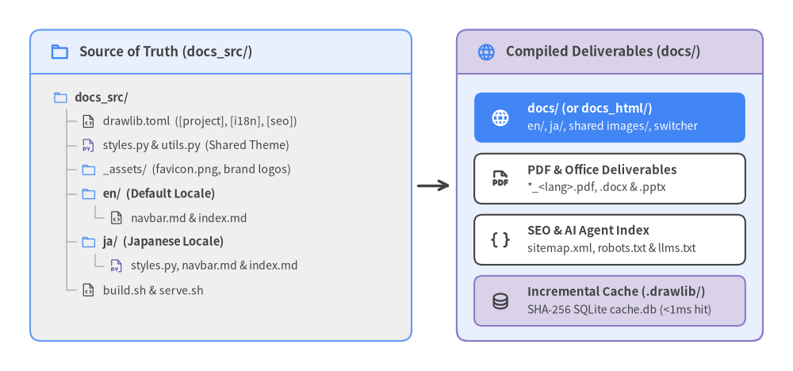
Source Code
from drawlib.canvas import save, setup
from drawlib.icons import phosphor
from drawlib.lines import line
from drawlib.smartarts import CardList, Panel, TreeNode
from drawlib.styles import Colors, Styles
setup(width=158, height=74)
# Left Panel: Source of Truth Directory Tree
src_panel = Panel(
"Source of Truth (docs_src/)",
style=Styles.Neutral.patch(shape_r=2.2),
header_style=Styles.PrimaryNeutral,
text_style=Styles.DarkBold.patch(text_size=12.0),
icon=phosphor.folder,
icon_style=Styles.PrimaryBold,
header_height=8.8,
)
src_panel.draw((6.0, 6.0), width=76.0, height=62.0)
TreeNode.register_drawing_item(
name="dir_item",
location="before",
padding_width=4.4,
function=phosphor.folder,
style=Styles.Primary.patch(icon_color=Colors.Primary),
args={"width": 3.0},
)
TreeNode.register_drawing_item(
name="py_item",
location="before",
padding_width=4.4,
function=phosphor.file_py,
style=Styles.Secondary.patch(icon_color=Colors.Secondary),
args={"width": 3.0},
)
TreeNode.register_drawing_item(
name="cfg_item",
location="before",
padding_width=4.4,
function=phosphor.file_code,
style=Styles.Dark.patch(icon_color=Colors.Dark),
args={"width": 3.0},
)
root = TreeNode(
"docs_src/",
text_style=Styles.DarkBold.patch(text_size=10.5),
line_style=Styles.MutedBold.patch(line_width=1.2),
line_horizontal_margin=2.8,
line_horizontal_length=2.8,
line_vertical_margin=4.8,
children=[
TreeNode("drawlib.toml ([project], [i18n], [seo])", text_style=Styles.Dark.patch(text_size=10.2)).set_drawing_item("cfg_item"),
TreeNode("styles.py & utils.py (Shared Theme)", text_style=Styles.Dark.patch(text_size=10.2)).set_drawing_item("py_item"),
TreeNode("_assets/ (favicon.png, brand logos)", text_style=Styles.Dark.patch(text_size=10.2)).set_drawing_item("dir_item"),
TreeNode(
"en/ (Default Locale)",
children=[
TreeNode("navbar.md & index.md", text_style=Styles.Dark.patch(text_size=10.0)).set_drawing_item("cfg_item"),
],
).set_drawing_item("dir_item"),
TreeNode(
"ja/ (Japanese Locale)",
children=[
TreeNode("styles.py, navbar.md & index.md", text_style=Styles.Dark.patch(text_size=10.0)).set_drawing_item("py_item"),
],
).set_drawing_item("dir_item"),
TreeNode("build.sh & serve.sh", text_style=Styles.Dark.patch(text_size=10.2)).set_drawing_item("cfg_item"),
],
).set_drawing_item("dir_item")
root.draw(xy=(10.5, 54.5))
# Compiler Connector
line((83.2, 37.0), (89.8, 37.0), arrow_head="->", style=Styles.DarkBold)
# Right Panel: Compiled Deliverables
out_panel = Panel(
"Compiled Deliverables (docs/)",
style=Styles.PrimaryNeutral.patch(shape_r=2.2),
header_style=Styles.SecondaryNeutral,
text_style=Styles.DarkBold.patch(text_size=12.0),
icon=phosphor.globe,
icon_style=Styles.PrimaryBold,
header_height=8.8,
)
out_panel.draw((91.0, 6.0), width=61.0, height=62.0)
outputs = CardList(
style=Styles.White.patch(shape_r=1.6),
text_style=Styles.DarkBold.patch(text_size=10.8),
description_style=Styles.Dark.patch(text_size=10.0),
badge_shape="none",
icon_style=Styles.DarkBold,
spacing=2.2,
)
outputs.add(
"docs/ (or docs_html/)",
"en/, ja/, shared images/, switcher",
icon=phosphor.globe,
style=Styles.PrimaryFlat.patch(shape_r=1.6),
text_style=Styles.WhiteBold.patch(text_size=10.8),
description_style=Styles.White.patch(text_size=10.0),
icon_style=Styles.WhiteBold,
)
outputs.add(
"PDF & Office Deliverables",
"*_<lang>.pdf, .docx & .pptx",
icon=phosphor.file_pdf,
)
outputs.add(
"SEO & AI Agent Index",
"sitemap.xml, robots.txt & llms.txt",
icon=phosphor.brackets_curly,
)
outputs.add(
"Incremental Cache (.drawlib/)",
"SHA-256 SQLite cache.db (<1ms hit)",
icon=phosphor.database,
style=Styles.SecondaryNeutral.patch(shape_r=1.6),
)
outputs.draw((94.5, 9.0), width=54.0, height=46.5)
save()
13.4 Configuring drawlib.toml: [project], [i18n], and [seo]
Every Markdown-based Drawlib project (doc, site, catalog, slide) is governed by drawlib.toml at the root of <target>_src/. Centralizing metadata in drawlib.toml eliminates fragile CLI flag duplication across shell scripts and CI workflows:
[project]
name = "platform_docs"
type = "site" # "images" | "doc" | "site" | "catalog" | "slide"
title = "Cloud Platform Architecture"
description = "Unified architecture portal and API guide."
style = "google" # "default" | "google" | "monochrome"
[i18n]
default_lang = "en"
langs = ["en", "ja"] # Always present on doc/site/catalog/slide (even ["en"])
[i18n.labels]
en = "English"
ja = "日本語"
[i18n.descriptions]
en = "Cloud Platform architecture documentation and operational runbooks."
ja = "クラウドプラットフォームのアーキテクチャ設計書および運用ガイド。"
[seo]
site_url = "https://docs.example.com"
og_image = "_assets/ogp.png"
twitter_card = "summary_large_image"
sitemap = true
robots = true
llms_txt = true
Multi-Language Skeleton Parity ([i18n]) & AI Discoverability ([seo])
When langs contains two or more locales (such as ["en", "ja"]), Drawlib runs four mechanical pre-flight parity checks before rendering any page, catching translation drift at build time rather than in production:
- 1. File Set &
navbar.mdParity: Every locale folder (en/,ja/) must contain the exact same relative.mdfile paths, and (forsiteprojects)navbar.mdmust have identical section counts and normalized link targets. - 2. Structural Skeleton Parity: Each translated page must match
default_langin its ordered sequence of#/##/###headings (H1–H3), prose/table/list slots (MarkdownText), non-drawlib fenced code block languages (CodeBlock), anddrawlibblock attributes (align,code,captionpresence). Consecutive paragraphs, lists, and tables collapse into a singleMarkdownTextslot so translators can write natural prose freely. - 3. Shared vs. Localized Diagram Routing: If
ja/reuses the same filename (file=arch.png), Drawlib verifies that the Python code is byte-for-byte identical and renders the image once across all locales. When diagram labels are translated into Japanese, pair a locale-suffixed filename (file=arch_ja.png) withja/styles.py(FontJapanese). - 4. Automated SEO &
llms.txtGeneration ([seo]): Setting[seo]injects<link rel="canonical">,hreflangcross-locale tags, Open Graph (og:*), and Twitter Card metadata into every HTML page, while emittingsitemap.xml,robots.txt, and anllmstxt.org-compliantllms.txtindex at the HTML root so AI coding assistants and search crawlers can index your documentation structure immediately.
14. CLI Toolchain & Autonomous AI Agent Workflows
Drawlib is engineered from the ground up for both human developers and multimodal AI coding assistants. Because every diagram, document, and slide deck compiles headlessly through a deterministic Command Line Interface (drawlib), AI agents never have to guess pixel coordinates blindly or rely on manual GUI clicks.
Instead, an AI coding agent reads on-demand API manuals (drawlib rules show), scaffolds a project (drawlib init), renders single-diagram coordinate grids (drawlib show -g), visually inspects its own output multimodally, self-corrects overlaps in a single pass, and validates every link before delivery (drawlib serve --check).
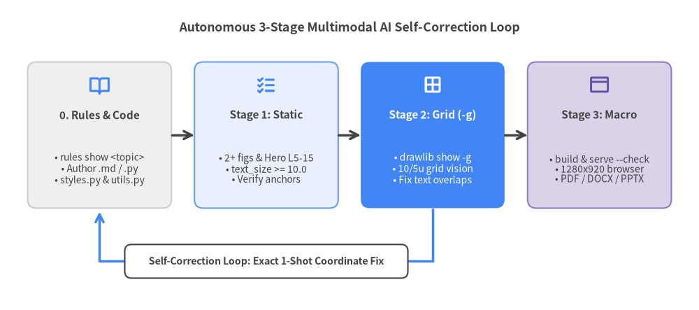
Source Code
from drawlib.canvas import save, setup
from drawlib.icons import phosphor
from drawlib.lines import line, lines
from drawlib.shapes import rectangle
from drawlib.styles import Styles
from drawlib.text import text
setup(width=158, height=70)
text(
(79.0, 63.8),
"Autonomous 3-Stage Multimodal AI Self-Correction Loop",
style=Styles.DarkBold.patch(text_size=12.8),
)
# Step 0: Rules & Authoring (Neutral)
rectangle((22.5, 39.5), width=32.5, height=33.0, style=Styles.Neutral.patch(shape_r=2.0))
phosphor.book_open((22.5, 50.8), width=5.0, style=Styles.PrimaryBold)
text((22.5, 44.0), "0. Rules & Code", style=Styles.DarkBold.patch(text_size=11.0))
text(
(22.5, 31.8),
"• rules show <topic>\n• Author .md / .py\n• styles.py & utils.py",
style=Styles.Dark.patch(text_size=10.0),
)
# Stage 1: Static & Anchor Check (PrimaryNeutral)
rectangle((60.2, 39.5), width=32.5, height=33.0, style=Styles.PrimaryNeutral.patch(shape_r=2.0))
phosphor.list_checks((60.2, 50.8), width=5.0, style=Styles.PrimaryBold)
text((60.2, 44.0), "Stage 1: Static", style=Styles.DarkBold.patch(text_size=11.0))
text(
(60.2, 31.8),
"• 2+ figs & Hero L5-15\n• text_size >= 10.0\n• Verify anchors",
style=Styles.Dark.patch(text_size=10.0),
)
# Stage 2: Micro-Geometry Grid Vision (Focal PrimaryFlat Hero)
rectangle((97.8, 39.5), width=32.5, height=33.0, style=Styles.PrimaryFlat.patch(shape_r=2.0))
phosphor.grid_four((97.8, 50.8), width=5.0, style=Styles.WhiteBold)
text((97.8, 44.0), "Stage 2: Grid (-g)", style=Styles.WhiteBold.patch(text_size=11.0))
text(
(97.8, 31.8),
"• drawlib show -g\n• 10/5u grid vision\n• Fix text overlaps",
style=Styles.White.patch(text_size=10.0),
)
# Stage 3: Macro-Page Review (SecondaryNeutral)
rectangle((135.5, 39.5), width=32.5, height=33.0, style=Styles.SecondaryNeutral.patch(shape_r=2.0))
phosphor.browser((135.5, 50.8), width=5.0, style=Styles.SecondaryBold)
text((135.5, 44.0), "Stage 3: Macro", style=Styles.DarkBold.patch(text_size=11.0))
text(
(135.5, 31.8),
"• build & serve --check\n• 1280x920 browser\n• PDF / DOCX / PPTX",
style=Styles.Dark.patch(text_size=10.0),
)
# Forward pipeline arrows
line((38.8, 39.5), (43.9, 39.5), arrow_head="->", style=Styles.DarkBold)
line((76.5, 39.5), (81.5, 39.5), arrow_head="->", style=Styles.DarkBold)
line((114.1, 39.5), (119.2, 39.5), arrow_head="->", style=Styles.DarkBold)
# Closed-loop feedback path from Stage 2 back to Step 0
lines([(97.8, 22.8), (97.8, 11.0), (22.5, 11.0), (22.5, 22.2)], arrow_head="->", style=Styles.PrimaryBold)
rectangle((60.2, 11.0), width=64.0, height=7.6, style=Styles.White.patch(shape_r=1.5))
text(
(60.2, 11.0),
"Self-Correction Loop: Exact 1-Shot Coordinate Fix",
style=Styles.DarkBold.patch(text_size=10.2),
)
save()
14.1 Bootstrapping Projects & AI Agent Rules (drawlib init)
The drawlib init command group handles two foundational setup tasks: scaffolding project workspaces (drawlib init project) and provisioning AI coding assistant instruction files (drawlib init agent).
Running drawlib init agent installs Drawlib's architectural conventions, 720pt typography math, coordinate anchor rules, and 3-stage verification protocol directly into your AI assistant's native rule directory. Drawlib v0.3.10 provides 9 built-in agent targets—and because AGENTS.md is an open multi-tool standard, it also works seamlessly with AGENTS.md-compatible tools (including OpenCode and Kiro):
| CLI Target | AI Coding Assistant | Generated Workspace Path | Rule Format & Loading Behavior |
|---|---|---|---|
antigravity |
Google Antigravity | .agents/rules/drawlib.md |
YAML frontmatter (trigger: model_decision or always_on) |
gemini |
Gemini CLI | GEMINI.md |
Non-destructive HTML comment marker merge (~/.gemini/GEMINI.md with --global) |
claude |
Claude Code | .claude/rules/drawlib.md |
Modular Markdown rule coexisting cleanly with root CLAUDE.md |
cursor |
Cursor | .cursor/rules/drawlib.mdc |
MDC frontmatter (description, alwaysApply) |
codex |
OpenAI Codex / AGENTS.md |
AGENTS.md |
Non-destructive HTML marker merge; shared by Codex, Kiro & AGENTS.md agents |
copilot |
GitHub Copilot | .github/instructions/drawlib.instructions.md |
YAML frontmatter (applyTo: "**/*_src/**, **/*.md, **/*.py") |
windsurf |
Windsurf | .windsurf/rules/drawlib.md |
Cascade workspace rule with YAML trigger frontmatter |
cline |
Cline | .clinerules/drawlib.md |
Individually toggleable rule inside .clinerules/ |
roo |
Roo Code | .roo/rules/drawlib.md |
Modular workspace or --global Roo rule file |
Pass --detect to inspect existing configuration folders in any repository and generate matching rule files automatically, or -m auto (default) so the rule activates on demand without consuming context tokens on unrelated backend tasks:
# List all supported AI coding agent targets and destination paths
uv run drawlib init agent list
# Auto-detect configured AI assistants in the current repo and install rules
uv run drawlib init agent --detect
# Explicitly generate modular rules for specific assistants (or 'all' for all 7 modular files)
uv run drawlib init agent antigravity claude cursor copilot
# Force always-on loading for dedicated documentation repositories
uv run drawlib init agent antigravity --mode always
# Install user-wide global Drawlib rules into ~/.claude/rules/ or ~/.gemini/config/rules/
uv run drawlib init agent claude --global
14.2 Compilation, Incremental Caching & Dev Server
Once a project is scaffolded, five core CLI command groups drive day-to-day authoring, rapid visual inspection, multi-target publishing, and CI quality gates:
| Command Group | Key Subcommands & Flags | Core Purpose |
|---|---|---|
drawlib build |
html, pdf, docx, slide, pptx, markdown, image (-s, -u, --no-cache) |
Compiles <target>_src/ into HTML portals/books/decks, vector PDFs, editable .docx/.pptx Office files, GitHub Markdown, and batch PNG/WebP/GIF images. |
drawlib show |
<file> [target] -s styles.py -u utils.py -g -o preview.png |
Renders a single .py script or named Markdown block (file=arch.png) headlessly to disk with an optional 10/5-unit coordinate grid (-g). |
drawlib serve |
<html_dir> [-p 8000] [--no-browser] [--check] |
Launches a zero-dependency local HTTP preview server, or runs --check in CI to verify zero broken <a href> links or missing <img src> assets. |
drawlib cache |
list, clear --images, clear --all, download --all, download --browser |
Manages .drawlib/cache.db SQLite diagram hashes and pre-downloads fonts, 34 icon suites, GeoJSON maps, and Playwright headless Chromium. |
drawlib rules |
list, show <topic> [--raw | --rebuild], build --all, clear |
Built-in self-documenting manual (overview, cli, style-guide, review-guide, lib-*) with on-demand reference illustrations for humans and LLMs. |
Inside .drawlib/cache.db: SHA-256 Content-Addressed Caching
Re-executing 50 Python diagrams on every prose typo fix would slow down iterative writing. Before running any drawlib block or .py script, Drawlib computes a deterministic SHA-256 digest across four inputs:
- The exact Python source code of the diagram block or script.
- The full contents of
styles.py(-s) andutils.py(-u). - Local static files referenced as string literals (such as
"_assets/logo.png"). - Target output format (
png,webp,svg), relative path, and slide context.
On a cache hit in .drawlib/cache.db, Drawlib restores the compiled binary in under 1 millisecond without invoking Matplotlib. The database automatically writes .drawlib/.gitignore (*), invalidates entries when drawlib or matplotlib versions upgrade, and evicts the oldest 50% of blobs above 1 GiB. If your diagram imports an external custom Python module outside styles.py and utils.py, pass --no-cache or run drawlib cache clear --images:
# 1. Inspect a single named Markdown diagram headlessly with the 10/5-unit grid (-g)
uv run drawlib show doc_src/en/01_overview.md system_arch.png \
-s doc_src/styles.py -u doc_src/utils.py -g --no-cache -o .drawlib/scratch/arch_grid.png
# 2. Multi-target builds (HTML, A4 PDF with TOC, MS Word .docx, 16:9 Slides & PowerPoint .pptx)
uv run drawlib build html docs_src/ -o docs_html/ -s docs_src/styles.py -u docs_src/utils.py
uv run drawlib build pdf doc_src/ -o manual.pdf --page-break --generate-index -s doc_src/styles.py
uv run drawlib build docx doc_src/ -o manual.docx --page-break --generate-index --dpi 200
uv run drawlib build slide slide_src/ -o slide_html/ -s slide_src/styles.py
uv run drawlib build pptx slide_src/ -o slide.pptx --dpi 240 -s slide_src/styles.py
uv run drawlib build markdown docs_src/ -o docs_markdown/
uv run drawlib build image images_src/ -o images/ -f webp
# 3. CI pre-warming, SQLite image cache reset, broken-link check & on-demand rules lookup
uv run drawlib cache download --all
uv run drawlib cache clear --images
uv run drawlib serve docs_html/ --check
uv run drawlib rules list
uv run drawlib rules show lib-smartarts-overview --raw
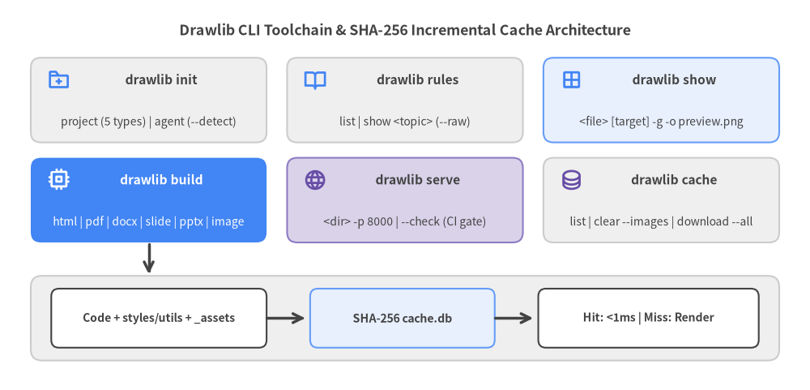
Source Code
from drawlib.canvas import save, setup
from drawlib.icons import phosphor
from drawlib.lines import line
from drawlib.shapes import rectangle
from drawlib.styles import Styles
from drawlib.text import text
setup(width=158, height=76)
text(
(79.0, 70.2),
"Drawlib CLI Toolchain & SHA-256 Incremental Cache Architecture",
style=Styles.DarkBold.patch(text_size=12.8),
)
# Top Row of CLI Command Groups (3 cards, width=46.0)
rectangle((29.0, 56.5), width=46.0, height=16.5, style=Styles.Neutral.patch(shape_r=2.0))
phosphor.folder_plus((11.5, 60.5), width=4.6, style=Styles.PrimaryBold)
text((31.5, 60.5), "drawlib init", style=Styles.DarkBold.patch(text_size=11.2))
text((29.0, 52.2), "project (5 types) | agent (--detect)", style=Styles.Dark.patch(text_size=10.0))
rectangle((79.0, 56.5), width=46.0, height=16.5, style=Styles.Neutral.patch(shape_r=2.0))
phosphor.book_open((61.5, 60.5), width=4.6, style=Styles.PrimaryBold)
text((81.5, 60.5), "drawlib rules", style=Styles.DarkBold.patch(text_size=11.2))
text((79.0, 52.2), "list | show <topic> (--raw)", style=Styles.Dark.patch(text_size=10.0))
rectangle((129.0, 56.5), width=46.0, height=16.5, style=Styles.PrimaryNeutral.patch(shape_r=2.0))
phosphor.grid_four((111.5, 60.5), width=4.6, style=Styles.PrimaryBold)
text((131.5, 60.5), "drawlib show", style=Styles.DarkBold.patch(text_size=11.2))
text((129.0, 52.2), "<file> [target] -g -o preview.png", style=Styles.Dark.patch(text_size=10.0))
# Middle Row of CLI Command Groups (build is the 1 PrimaryFlat focal card)
rectangle((29.0, 37.0), width=46.0, height=16.5, style=Styles.PrimaryFlat.patch(shape_r=2.0))
phosphor.cpu((11.5, 41.0), width=4.6, style=Styles.WhiteBold)
text((31.5, 41.0), "drawlib build", style=Styles.WhiteBold.patch(text_size=11.2))
text((29.0, 32.7), "html | pdf | docx | slide | pptx | image", style=Styles.White.patch(text_size=10.0))
rectangle((79.0, 37.0), width=46.0, height=16.5, style=Styles.SecondaryNeutral.patch(shape_r=2.0))
phosphor.globe((61.5, 41.0), width=4.6, style=Styles.SecondaryBold)
text((81.5, 41.0), "drawlib serve", style=Styles.DarkBold.patch(text_size=11.2))
text((79.0, 32.7), "<dir> -p 8000 | --check (CI gate)", style=Styles.Dark.patch(text_size=10.0))
rectangle((129.0, 37.0), width=46.0, height=16.5, style=Styles.Neutral.patch(shape_r=2.0))
phosphor.database((111.5, 41.0), width=4.6, style=Styles.SecondaryBold)
text((131.5, 41.0), "drawlib cache", style=Styles.DarkBold.patch(text_size=11.2))
text((129.0, 32.7), "list | clear --images | download --all", style=Styles.Dark.patch(text_size=10.0))
# Bottom Pipeline Bar: .drawlib/cache.db SHA-256 Engine
rectangle((79.0, 14.0), width=146.0, height=16.5, style=Styles.Neutral.patch(shape_r=2.2))
rectangle((31.0, 14.0), width=42.0, height=11.5, style=Styles.White.patch(shape_r=1.5))
text((31.0, 14.0), "Code + styles/utils + _assets", style=Styles.DarkBold.patch(text_size=10.0))
line((52.0, 14.0), (59.5, 14.0), arrow_head="->", style=Styles.DarkBold)
rectangle((78.5, 14.0), width=36.0, height=11.5, style=Styles.PrimaryNeutral.patch(shape_r=1.5))
text((78.5, 14.0), "SHA-256 cache.db", style=Styles.DarkBold.patch(text_size=10.2))
line((96.5, 14.0), (104.0, 14.0), arrow_head="->", style=Styles.DarkBold)
rectangle((126.5, 14.0), width=43.0, height=11.5, style=Styles.White.patch(shape_r=1.5))
text((126.5, 14.0), "Hit: <1ms | Miss: Render", style=Styles.DarkBold.patch(text_size=10.0))
# Connect build -> SHA-256 pipeline outer boundary cleanly
line((29.0, 28.5), (29.0, 22.6), arrow_head="->", style=Styles.DarkBold)
save()
14.3 Deep-Dive: The 3-Stage Autonomous AI Review Loop
Inspecting a single PNG in isolation is not enough to guarantee publication quality: a diagram might have subtle label overlaps inside the canvas (micro-geometry defects) or shrink to microscopic text inside an HTML column or 16:9 slide (macro-page defects). AI agents eliminate both failure modes by executing all three verification stages before finishing:
- Stage 1 — Static Code & Anchor Pre-Check:
- Confirm
>= 2embeddeddrawlibdiagrams per documentation page and a Top Hero diagram starting on Lines 5–15 withcode=fold(so readers see a visual summary above the fold). - Confirm zero pixel width caps (
width=500px/600pxomitted),text_size >= 10.0, strictly relative Markdown paths, and exact coordinate anchor semantics (Centervs.Bottom-Leftvs.Top-Left).
- Confirm
- Stage 2 — Micro-Geometry Grid Review (
drawlib show -g):- Export each created or modified diagram headlessly with
-g(uv run drawlib show <file> <target.png> -s styles.py -u utils.py -g -o .drawlib/scratch/<unique>_grid.png) and inspect the PNG with multimodal vision. - Because
-goverlays 10-unit major grid lines (labeled numerically) and 5-unit minor dashed lines, the agent reads off exact coordinate adjustments in a single iteration—fixing any text border clipping, arrowhead collisions, perimeter margins (< 4–6units), or rainbow color overuse (< 50%neutral fills).
- Export each created or modified diagram headlessly with
- Stage 3 — Macro-Page & Deliverable Verification:
- Compile the project (
./<target>_src/build.sh), runuv run drawlib serve <target>_html/ --checkto verify zero broken internal links or missing image assets, and capture a1280×920headless Chromium screenshot of the rendered HTML (or inspect compiledPDF,DOCX, andPPTXpages). - Confirm that the Top Hero sits cleanly above the fold and that in-diagram typography matches surrounding
16pxHTML prose (or26pxslide prose on1920×1080decks), then clean up.drawlib/scratch/.
- Compile the project (
14.4 Scaling with Parallel Multi-Agent Delegation
When creating or updating multi-chapter whitepapers (doc), multi-section portals (site/catalog), or 20-slide decks (slide), loading dozens of high-resolution grid preview PNGs into a single agent's context window wastes tokens and latency. Drawlib's modular file architecture maps cleanly onto a 3-Phase Orchestrator–Subagent Workflow:
- Phase 1 — Parent Orchestrator Scaffolds Shared Foundation: The parent agent runs
drawlib init project, finalizes shareddrawlib.toml,styles.py(ja/styles.py),utils.py,_assets/, and<lang>/navbar.mdor numbered chapter filenames first. - Phase 2 — Parallel Subagents Author Disjoint Files (
--no-cache): Each subagent receives exclusive ownership of disjoint.mdor.pyfiles (treating shared config files as read-only) and runs Stage 1 + Stage 2 grid reviews (drawlib show ... -g --no-cache -o .drawlib/scratch/<worker>_<stem>.png) using unique scratch filenames—never running./build.shconcurrently so.drawlib/cache.dbnever experiences SQLite lock contention. - Phase 3 — Parent Runs Unified Build & Link Gate: Once all subagents complete Stage 2 visual verification, the parent orchestrator runs
./<target>_src/build.shonce, validates cross-page links withdrawlib serve --check, performs Stage 3 browser/PDF review, and removes.drawlib/scratch/.
15. Visual Design Rules & Production Checklist
Great technical diagrams communicate system architecture in under three seconds—not by adding decorative colors, but through disciplined typography scaling, calm neutral contrast, predictable coordinate anchors, and reusable component macros.
This final chapter consolidates Drawlib's engineering design laws into a single-page production cheat sheet that human authors and AI coding agents can consult before shipping any diagram, whitepaper, portal, API catalog, or 16:9 presentation deck.
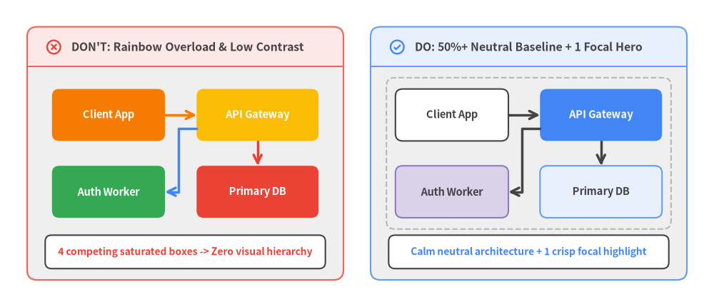
Source Code
from drawlib.canvas import save, setup
from drawlib.icons import phosphor
from drawlib.lines import line, lines
from drawlib.shapes import rectangle
from drawlib.smartarts import Panel
from drawlib.styles import Styles
from drawlib.text import text
setup(width=158, height=68)
# Left Panel: DON'T (Rainbow Overload & Competing Saturated Fills)
dont_panel = Panel(
"DON'T: Rainbow Overload & Low Contrast",
style=Styles.Neutral.patch(shape_r=2.2),
header_style=Styles.DangerNeutral,
text_style=Styles.DarkBold.patch(text_size=11.4),
icon=phosphor.x_circle,
icon_style=Styles.DangerBold,
header_height=8.8,
)
dont_panel.draw((6.0, 6.0), width=70.0, height=56.0)
rectangle(
(24.0, 42.5),
width=25.0,
height=11.5,
style=Styles.AccentFlat.patch(shape_r=1.6),
text="Client App",
text_style=Styles.WhiteBold.patch(text_size=10.5),
)
rectangle(
(57.0, 42.5),
width=27.0,
height=11.5,
style=Styles.WarningFlat.patch(shape_r=1.6),
text="API Gateway",
text_style=Styles.WhiteBold.patch(text_size=10.5),
)
rectangle(
(24.0, 25.5),
width=25.0,
height=11.5,
style=Styles.SuccessFlat.patch(shape_r=1.6),
text="Auth Worker",
text_style=Styles.WhiteBold.patch(text_size=10.5),
)
rectangle(
(57.0, 25.5),
width=27.0,
height=11.5,
style=Styles.DangerFlat.patch(shape_r=1.6),
text="Primary DB",
text_style=Styles.WhiteBold.patch(text_size=10.5),
)
line((36.5, 42.5), (43.5, 42.5), arrow_head="->", style=Styles.AccentBold)
line((57.0, 36.7), (57.0, 31.3), arrow_head="->", style=Styles.DangerBold)
lines([(43.5, 39.5), (39.5, 39.5), (39.5, 25.5), (36.5, 25.5)], arrow_head="->", style=Styles.PrimaryBold)
rectangle((41.0, 12.2), width=62.0, height=7.4, style=Styles.White.patch(shape_r=1.4))
text(
(41.0, 12.2),
"4 competing saturated boxes -> Zero visual hierarchy",
style=Styles.DangerBold.patch(text_size=10.0),
)
# Right Panel: DO (50%+ Neutral Baseline + 1 Focal PrimaryFlat Highlight)
do_panel = Panel(
"DO: 50%+ Neutral Baseline + 1 Focal Hero",
style=Styles.Neutral.patch(shape_r=2.2),
header_style=Styles.PrimaryNeutral,
text_style=Styles.DarkBold.patch(text_size=11.4),
icon=phosphor.check_circle,
icon_style=Styles.PrimaryBold,
header_height=8.8,
)
do_panel.draw((82.0, 6.0), width=70.0, height=56.0)
rectangle((117.0, 34.0), width=63.0, height=33.5, style=Styles.MutedDashed.patch(shape_r=1.8))
rectangle(
(100.0, 42.5),
width=25.0,
height=11.5,
style=Styles.White.patch(shape_r=1.6),
text="Client App",
text_style=Styles.DarkBold.patch(text_size=10.5),
)
rectangle(
(133.0, 42.5),
width=27.0,
height=11.5,
style=Styles.PrimaryFlat.patch(shape_r=1.6),
text="API Gateway",
text_style=Styles.WhiteBold.patch(text_size=10.5),
)
rectangle(
(100.0, 25.5),
width=25.0,
height=11.5,
style=Styles.SecondaryNeutral.patch(shape_r=1.6),
text="Auth Worker",
text_style=Styles.DarkBold.patch(text_size=10.5),
)
rectangle(
(133.0, 25.5),
width=27.0,
height=11.5,
style=Styles.PrimaryNeutral.patch(shape_r=1.6),
text="Primary DB",
text_style=Styles.DarkBold.patch(text_size=10.5),
)
line((112.5, 42.5), (119.5, 42.5), arrow_head="->", style=Styles.DarkBold)
line((133.0, 36.7), (133.0, 31.3), arrow_head="->", style=Styles.DarkBold)
lines([(119.5, 39.5), (115.5, 39.5), (115.5, 25.5), (112.5, 25.5)], arrow_head="->", style=Styles.DarkBold)
rectangle((117.0, 12.2), width=62.0, height=7.4, style=Styles.White.patch(shape_r=1.4))
text(
(117.0, 12.2),
"Calm neutral architecture + 1 crisp focal highlight",
style=Styles.PrimaryBold.patch(text_size=10.0),
)
save()
15.1 The 720pt Typography Scale & Width Discipline
Because Drawlib maps every canvas width (setup(width=W, height=H)) to 10 inches = 720 points, rendered font size in HTML or PDF depends strictly on text_size × ContainerWidth / 720. Hardcoding narrow pixel caps like width=500px or width=600px on a Markdown fence shrinks the container below 720pt, breaking visual parity with 16px HTML prose. Always omit pixel width= caps on documentation fences and follow this typography scale:
| Hierarchy Role | Recommended text_size |
Recommended Styles Token |
Rendered Size in ~900px Column |
|---|---|---|---|
| Canvas Title | 14.0 – 16.0 |
Styles.DarkBold.patch(text_size=14.5) |
~17.5px – 20.0px (Clear banner lead) |
| Section / Group Header | 12.0 – 13.5 |
Styles.DarkBold.patch(text_size=12.5) |
~15.0px – 16.9px (Matches subheadings) |
| Node / Card Body | 10.5 – 12.0 |
Styles.DarkBold (light) / Styles.WhiteBold (*Flat) |
~13.1px – 15.0px (Matches 16px prose) |
| Edge / Axis Labels | 10.0 |
Styles.Dark or Styles.Muted |
~12.5px (Clean protocol/unit caption) |
| Strict Floor (Ticks / Code) | 9.5 (Never < 9.5) |
Styles.Dark / SourceCode |
~11.9px (Minimum legible threshold) |
16:9 Slide Deck Adjustment (
1920×1080Stage): Slide prose defaults to26px—much larger than16pxweb docs. When placing a diagram inside a half-width 2-column::: block(width=960..1040), raise node/axistext_sizeto13.5 – 15.5(and titles to16.0 – 18.5) while widening boxes by25%–40%so labels match adjacent slide bullets.
15.2 The 50%+ Neutral Baseline & Contrast Discipline
Human-crafted architecture diagrams use color sparingly to direct attention rather than decorate every box:
- Ground
>= 50%of Shapes in Calm Neutrals: Build the majority of service cards, worker nodes, and containers withStyles.Neutral,Styles.PrimaryNeutral,Styles.SecondaryNeutral, orStyles.White(andStyles.MutedDashedfor VPC/cluster boundaries). - Reserve Saturated
*FlatFills for1–2Focal Nodes: UseStyles.PrimaryFlatorStyles.AccentFlatexclusively on the core system under discussion so the reader's eye locks onto the focal component immediately. - Strict Luminance Contrast Pairing:
- On saturated solid fills (
Styles.PrimaryFlat,Styles.AccentFlat,Styles.DangerFlat), always pairStyles.WhiteBold(titles) andStyles.White(subtitles/icons). - On neutral or light fills (
Styles.Neutral,Styles.PrimaryNeutral,Styles.SecondaryNeutral,Styles.White), always pairStyles.DarkBoldandStyles.Dark(avoid chromatic blue/purple body text on white cards).
- On saturated solid fills (
- Neutral Connectors by Default: Use
Styles.DarkBold(orStyles.Dark) for standard sequential and structural arrows, reservingStyles.DangerBold(errors/rollbacks),Styles.SuccessBold(verified commits), andStyles.PrimaryBold(highlighted critical path) for intentional semantic contrast. - PascalCase Token Imports: Always write
from drawlib.styles import Colors, Styles—never lowercasestylesorcolors, which shadows module namespaces and bypassesstyles.pyoverrides.
15.3 Master Coordinate Anchor Cheat Sheet
Every Drawlib canvas uses Cartesian coordinates with (0, 0) at the bottom-left (+X right, +Y up), but individual component families interpret their xy placement parameter using one of three anchor conventions. Memorizing—or verifying—this table prevents 100% of off-by-half layout shifts:
| Anchor Convention | Drawlib Families & Classes | How xy Behaves |
Horizontal / Vertical Span |
|---|---|---|---|
Center (cx, cy) |
shapes.* (rectangle, circle, cylinder, ...)text.text(), icons.* (phosphor, gcp, aws, azure, ...)images.image()smartarts.Cycle, smartarts.MindMapNodediagrams.* Node(..., xy=(cx, cy)) |
Geometric center of the element | x: [cx - w/2, cx + w/2]y: [cy - h/2, cy + h/2] |
Bottom-Left (x0, y0) |
charts.* (all 10 quantitative charts)diagrams.* d.draw(xy=(x0, y0)) & NodeGroup(..., xy=(x0, y0))Most smartarts.* (BoxList, CardList, ChevronProcess, GridLayout, Pyramid, KpiCards, Roadmap, Panel, GeoMap, *Calendar) |
Bottom-left corner (+x right, +y up); center on canvas W via x0 = (W - width) / 2 |
x: [x0, x0 + width]y: [y0, y0 + height] |
Top-Left (x0, y_top) |
smartarts.Tablesmartarts.TreeNodesmartarts.BulletPointssmartarts.SourceCode |
Top-left corner (+x right, rows/branches grow downward toward y = 0) |
x: [x0, x0 + width]y: [y_top - height, y_top] |
Dual Solver (get_layout()) |
graph.* (ArchitectureGraph, LayerGraph, TreeGraph, RadialGraph, GridGraph) |
Exposes both center and corner coordinates on computed layout objects | .xy / .local_xy (Center).bottom_left / .local_bottom_left |
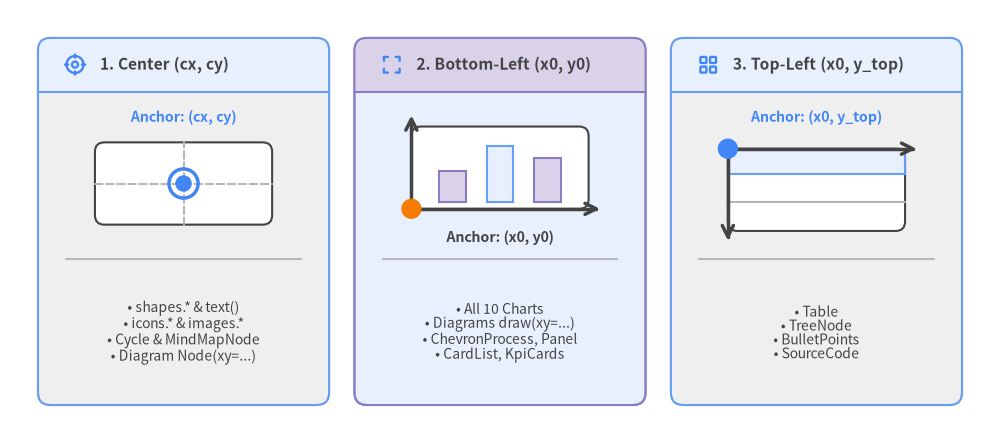
Source Code
from drawlib.canvas import save, setup
from drawlib.icons import phosphor
from drawlib.lines import line
from drawlib.shapes import circle, rectangle
from drawlib.smartarts import Panel
from drawlib.styles import Styles
from drawlib.text import text
setup(width=158, height=70)
# Card 1: Center (cx, cy)
p1 = Panel(
"1. Center (cx, cy)",
style=Styles.Neutral.patch(shape_r=2.0),
header_style=Styles.PrimaryNeutral,
text_style=Styles.DarkBold.patch(text_size=11.2),
icon=phosphor.crosshair,
icon_style=Styles.PrimaryBold,
header_height=8.5,
)
p1.draw((6.0, 6.0), width=46.0, height=58.0)
text((29.0, 51.5), "Anchor: (cx, cy)", style=Styles.PrimaryBold.patch(text_size=10.2))
rectangle((29.0, 41.0), width=28.0, height=13.0, style=Styles.White.patch(shape_r=1.5))
line((15.0, 41.0), (43.0, 41.0), style=Styles.MutedDashed)
line((29.0, 34.5), (29.0, 47.5), style=Styles.MutedDashed)
circle((29.0, 41.0), radius=2.3, style=Styles.PrimaryOutlineBold)
circle((29.0, 41.0), radius=1.3, style=Styles.PrimaryFlat)
line((10.5, 29.0), (47.5, 29.0), style=Styles.Muted)
text(
(29.0, 17.5),
"• shapes.* & text()\n• icons.* & images.*\n• Cycle & MindMapNode\n• Diagram Node(xy=...)",
style=Styles.Dark.patch(text_size=10.0),
)
# Card 2: Bottom-Left (x0, y0)
p2 = Panel(
"2. Bottom-Left (x0, y0)",
style=Styles.PrimaryNeutral.patch(shape_r=2.0),
header_style=Styles.SecondaryNeutral,
text_style=Styles.DarkBold.patch(text_size=11.2),
icon=phosphor.corners_out,
icon_style=Styles.PrimaryBold,
header_height=8.5,
)
p2.draw((56.0, 6.0), width=46.0, height=58.0)
rectangle((79.0, 43.5), width=28.0, height=13.0, style=Styles.White.patch(shape_r=1.5))
rectangle((71.5, 40.5), width=4.2, height=5.0, style=Styles.SecondaryNeutral)
rectangle((79.0, 42.5), width=4.2, height=9.0, style=Styles.PrimaryNeutral)
rectangle((86.5, 41.5), width=4.2, height=7.0, style=Styles.SecondaryNeutral)
line((65.0, 37.0), (94.8, 37.0), arrow_head="->", style=Styles.DarkBold)
line((65.0, 37.0), (65.0, 51.8), arrow_head="->", style=Styles.DarkBold)
circle((65.0, 37.0), radius=1.6, style=Styles.AccentFlat)
text((79.0, 32.5), "Anchor: (x0, y0)", style=Styles.DarkBold.patch(text_size=10.2))
line((60.5, 29.0), (97.5, 29.0), style=Styles.Muted)
text(
(79.0, 17.5),
"• All 10 Charts\n• Diagrams draw(xy=...)\n• ChevronProcess, Panel\n• CardList, KpiCards",
style=Styles.Dark.patch(text_size=10.0),
)
# Card 3: Top-Left (x0, y_top)
p3 = Panel(
"3. Top-Left (x0, y_top)",
style=Styles.Neutral.patch(shape_r=2.0),
header_style=Styles.PrimaryNeutral,
text_style=Styles.DarkBold.patch(text_size=11.2),
icon=phosphor.squares_four,
icon_style=Styles.PrimaryBold,
header_height=8.5,
)
p3.draw((106.0, 6.0), width=46.0, height=58.0)
text((129.0, 51.5), "Anchor: (x0, y_top)", style=Styles.PrimaryBold.patch(text_size=10.2))
rectangle((129.0, 40.0), width=28.0, height=13.0, style=Styles.White.patch(shape_r=1.5))
rectangle((129.0, 44.5), width=28.0, height=4.0, style=Styles.PrimaryNeutral)
line((115.0, 38.0), (143.0, 38.0), style=Styles.Muted)
line((115.0, 46.5), (144.8, 46.5), arrow_head="->", style=Styles.DarkBold)
line((115.0, 46.5), (115.0, 32.0), arrow_head="->", style=Styles.DarkBold)
circle((115.0, 46.5), radius=1.6, style=Styles.PrimaryFlat)
line((110.5, 29.0), (147.5, 29.0), style=Styles.Muted)
text(
(129.0, 17.5),
"• Table\n• TreeNode\n• BulletPoints\n• SourceCode",
style=Styles.Dark.patch(text_size=10.0),
)
save()
15.4 Reusable Project Macros (utils.py & styles.py)
When a project grows past five diagrams, copy-pasting custom card dimensions, subtitle offsets, or CJK font declarations across Markdown blocks invites visual drift. Keep diagrams DRY (Don't Repeat Yourself) by separating concerns across two shared files:
styles.py&<lang>/styles.py(Theme & Locale Fonts): ConfigureColors = GoogleColors()andStyles = GoogleStyles()in rootstyles.py, and place locale-specific font overrides (such asStyles = GoogleStyles().patch_font(regular=FontJapanese.SANSSERIF_REGULAR, bold=FontJapanese.SANSSERIF_BOLD)) insideja/styles.py. Drawlib hashesstyles.pyinto.drawlib/cache.dbautomatically so any palette update invalidates and rebuilds dependent figures.utils.py(Team-Wide Component Macros): Encapsulate recurring domain shapes—such as a standardizedservice_card()or labeledconnect()helper—insideutils.pyand import them viafrom drawlib.utils import connect, service_cardin every chapter:
# Inside any chapter block or script — reusing macros from utils.py & styles.py
from drawlib.canvas import save, setup
from drawlib.styles import Styles
from drawlib.utils import connect, service_card
setup(width=128, height=42)
# Neutral supporting nodes + 1 focal PrimaryFlat hero using shared macros
service_card((26, 21), "Ingress Proxy", "Envoy :443", width=32, height=18, style=Styles.PrimaryFlat)
service_card((96, 21), "Billing API", "Python / gRPC", width=32, height=18, style=Styles.SecondaryNeutral)
connect((42, 21), (80, 21), label="mTLS gRPC", style=Styles.DarkBold)
save()
15.5 Production Pre-Flight Checklist
Before merging a documentation pull request or publishing release deliverables, run through this five-point production pre-flight checklist:
- [ ] 1. Relative Link & Asset Path Hygiene: Every cross-page Markdown link (
02_architecture.md,../01_intro/index.md) and asset path (../_assets/logo.pngin Markdown prose;"_assets/logo.png"inside Pythondrawlibblocks) uses portable relative paths. Confirm zero local URI schemes or machine-specific roots such as/abs/local/pathorC:\local\path, whichdrawlib buildrejects at compile time. - [ ] 2. Canvas Margins (
>= 4–6Units) & Grid Verification (-g): Every modified diagram has been rendered withdrawlib show ... -g --no-cacheand inspected visually to verify>= 4–6coordinate units of outer margin on all four edges, zero text-border collisions, andtext_size >= 10.0. - [ ] 3.
50%+Neutral Palette & Top Hero Placement: At least half of all cards/nodes rest on calm neutral styles (Neutral,PrimaryNeutral,SecondaryNeutral,White),WhiteBoldis paired with*Flatfocal nodes, and each chapter/page places acode=foldTop Hero diagram at Lines 5–15 with2+diagrams overall. - [ ] 4.
i18nMulti-Locale Skeleton Parity: In bilingual/multilingual projects (langs = ["en", "ja"]), every locale contains the identical relative file set, matching#/##/###heading hierarchy, matching fenced code block sequence, and<stem>_<lang>.pngfilenames for localized diagrams. - [ ] 5. Automated Link Gate & Multi-Target Export Check:
./<target>_src/build.shanduv run drawlib serve <target>_html/ --checkexit with code0,1280×920browser views confirm above-the-fold typography harmony, compiledPDF/.docx/.pptxdeliverables have clean page breaks, and temporary.drawlib/scratch/files are removed.